MySQL REST Service - Reference Manual
MySQL REST Service - Developer’s Guide
This book explains how to install and configure the MySQL REST Service (MRS) as well as how to access the data through REST calls.
- MRS Introduction
- MRS Deployment Architecture
- MRS Configuration
- Adding REST Services and Database Objects
- GUI Interfaces for REST Service Configuration
- Authentication and Authorization
- MRS Examples
MySQL REST Service - Quickstart Guide
This book provides a hands-on approach to learning how to use the MySQL REST service.
- What is the MySQL REST Service
- Setting up the MySQL REST Service
- Defining REST Endpoints
- Accessing REST Endpoints
- Appendix
MySQL REST Service DDL - SQL Extension Reference
This document discusses the MySQL REST Service (MRS) DDL - SQL Extension. The MRS DDL - SQL Extension adds a set of MRS specific DDL statements to the MySQL Shell SQL handling in order to provide a familiar management interface to MySQL developers and DBAs.
- Introduction to the MRS DDL Extension
- MRS SQL Reference: CONFIGURE and CREATE
- MRS SQL Reference: ALTER
- MRS SQL Reference: DROP
- MRS SQL Reference: GRANT and REVOKE
- MRS SQL Reference: USE and SHOW
MRS Core REST APIs
This book provides examples of using the MySQL REST Service queries and other operations against tables and views after you have REST-enabled them.
- About MRS RESTful Web Services
- Get Schema Metadata
- Get Object Metadata
- Get Object Data
- Insert Table Row
- Delete Using Filter
- FilterObject Grammar
- Examples: FilterObject Specifications
MySQL REST Service - SDK Reference
This document explains how to work with the MRS Software Development Kit and discusses the Client API.
- Introduction to the MRS SDK
- Working with a REST Service
- Querying Data Across Tables
- Functions And Procedures
- Contextual Fields and Parameters
- Read Your Writes Consistency
- Checking for NULL Column Values
- Working with Spatial Data Types
- Working with Date and Time Data Types
- Working with Vector Data Types
- Authentication
- TypeScript Client API Reference
- Python Client API Reference
MySQL REST Service - Developer’s Guide
1 Introduction to the MySQL REST Service
Welcome to the MySQL REST Service. This book features a detailed discussion of the MySQL REST Service, including architecture, configuration and deployment.
To start with a hands-on approach, please check out the Quickstart Guide or take a look at the MRS Notes Example PWA and follow the instructions for Build and Deployment there.
1.1 What is the MySQL REST Service
The MySQL REST Service is a next-generation JSON Document Store solution, enabling fast and secure HTTPS access for data stored in MySQL, HeatWave, InnoDB ClusterSet and InnoDB ReplicaSet.
Being a fully integrated MySQL solution, it focuses on ease-of-use, support of standards and high performance.
The MySQL REST Service consists of four major building blocks, delivering an integrated solution for JSON Document-based application development.
- RESTful Web Services
- REST SQL Extension
- Powerful Data Mapping
- Client SDK Generation
Benefits
- Auto-REST endpoints for relational and document oriented data, that can be enable with a few clicks.
- Directly built into MySQL Router, removes need for additional middle-ware.
- High performance web server solution to serve RESTful Web Services as well as Progressive Web Apps (PWAs).
- Excellent vertical scaling (up scaling) and well as horizontal scaling (scaling out) through number of MySQL Routers.
Experience
- Direct VS Code Extension integration featuring point-and-click, WYSIWYG editors and live-querying of REST endpoints via TypeScript.
- Dedicated REST SQL extension support in MySQL Shell for scripting and development process integration.
- Client SDK generation support for popular languages to vastly simplify development process and project integration.
- Support for local development environment & debugging.
Features
- REST endpoints for database tables, views, procedures and function in addition to static data (e.g. PWAs) being served
- Powerful, built-in authentication, authorization (MySQL accounts, MRS accounts, OAuth2) and session management
- New REST SQL extension to be able to define REST services and endpoints directly in SQL scripts
- Client SDK generation with built-in features for authentication, document operations, read-own-write support in distributed MySQL solutions
1.2 Application Use Cases
1.2.1 Which applications should use the MySQL REST Service
The MySQL REST Service exposes RESTful Web Services for interacting with the data stored in MySQL solutions REST endpoints via HTTPS.
This makes the MySQL REST Service an excellent choice for the following use cases.
- Mobile applications, as well as Progressive Web Apps (PWAs), that need to access data across the public internet.
- All modern document-oriented applications that expect to work with JSON documents rather than relational data.
- Extending existing applications with micro-services.
- Offering data REST endpoints to serverless architecture deployments.
1.2.2 Which applications should use a MySQL Connector
Using the MySQL protocol via a MySQL Connector is an established way to build high-performance MySQL database applications. It should be preferred to use this type of MySQL connection for the following use cases.
- Applications that need direct SQL access to the MySQL database.
- Applications that need to work with relational tables rather than JSON documents.
- Applications that do not benefit from an optimistic, ETag based concurrency model.
1.3 Feature Set Overview
| Feature | Description |
|---|---|
| REST Service Lifecycle Management | Shared development of new REST services, publishing of production-ready REST services |
| AutoREST | Enabling REST access to a table, view, or procedure allows it to be accessed through RESTful services. AutoREST is a quick and easy way to expose database tables as REST resources, first introduced by ORDS. |
| REST data mapping Views | REST data mapping views combine the advantages of relational schemas with the ease-of-use of document databases. They give your data a conceptual and an operational duality as it is organized both relationally and hierarchically. |
| Serving Static Content | In addition to serving dynamic content using AutoREST it is possible to upload static content, like HTML, CSS, and image files. This feature is not meant to replace dedicated HTTP servers that support capabilities like server-side programming. It can aid the quick deployments of prototypes and proof-of-concept efforts that help bring ideas to life. |
| End User Authentication | MRS supports a number of authentication methods, including MRS REST service specific authentication, native MySQL authentication and OAuth2 authentication (Sign in with FaceBook and Google) |
| End User Authorization | Built in support for row-level security, role based security, user-hierarchy based security, Group based security, Group-hierarchy based security as well as custom authorization support |
| REST Service SDK API Generation | Live SDK API updates for interactive prototyping using TypeScript, SDK API generation for application development |
About REST APIs
Representational State Transfer (REST) is a style of software architecture for distributed hypermedia systems such as the World Wide Web. An API is described as RESTful when it conforms to the tenets of REST. Although a full discussion of REST is outside the scope of this document, a REST API has the following characteristics:
- Data is modelled as a set of resources. Resources are identified by URIs.
- A small, uniform set of operations are used to manipulate resources (for example, PUT, POST, GET, DELETE).
- A resource can have multiple representations (for example, a blog might have an HTML representation and an RSS representation).
- Services are stateless and because the client is likely to access related resources, these should be identified in the representation returned, typically by providing hypertext links.
1.4 Supported MySQL Versions
MySQL REST Service can be configured using MySQL Server versions from 8.0.39 onwards.
A MySQL Router 9.3.1 or later is required to serve the REST endpoints and Progressive Web Apps. The MySQL Shell for VS Code extension includes a recent MySQL Router version for local development deployments.
Alternatively, experimental packages of MySQL Server including the upcoming MySQL REST Service server component can be downloaded from labs.mysql.com.
It is recommended to use the latest available version of MySQL Shell (9.4.0 and higher) to configure and work with the MySQL REST Service, regardless of the MySQL Server and MySQL Router versions.
2 Architecture
2.1 Building Blocks
The MySQL REST Service consists of the following components:
- A MySQL Solution (Heatwave, MySQL InnoDB ClusterSet, a
standalone MySQL Server, etc.)
- Serving a metadata schema
mysql_rest_service_metadatathat holds the MRS configuration. - Serving the REST applications’ data.
- Serving a metadata schema
- MySQL Router
- One or many MySQL Router instances to serve the HTTPS REST interface.
- Either running in developer or production mode.
- MySQL Shell / MySQL Shell for VS Code
- Support for the REST SQL extension, to configure and manage REST endpoints via REST SQL commands.
- Support for managing MRS through a graphical user interface (GUI) embedded inside VS Code.
- Generation of Client SDKs for given REST service.
2.2 Development Setup
When working with the MySQL REST Service it is important to separate between two different types of setups.
- A local development setup used to develop new REST
services.
- A local MySQL Shell installation to connect to and execute REST SQL extension commands.
- A local MySQL Router installation, running in developer mode.
- The production deployment that serves REST services that
have been published.
- The MySQL solution serving the metadata schema as well as the REST applications’ data.
- MySQL Router instance(s) running in production mode.
Each of those setups serves a different set of REST services, depending on the REST services’ current lifecycle states.
The recommended way to configure a MySQL REST Service development setup is to use VS Code or VSCodium with the MySQL Shell for VS Code extension installed. This will simplify things like HTTPS certificate installation and bootstrapping the MySQL Router in development mode.
2.3 Production Deployments
MySQL REST Service (MRS) can be deployed in many different ways depending on the individual project requirements.
Deployments for Development
The smallest possible development environment consists of a single MySQL Server instance and a MySQL Router instance running on the same machine.
The recommended deployment for development consists of an InnoDB Cluster deployed with a minimum of three MySQL Server instances and two MySQL Router instances.
For cloud-based development, a MySQL Database Service instance with the high availability feature enabled and two compute instances with MySQL Router deployments should be used.
Production Deployments
In a production environment, an InnoDB Cluster set up with three or more MySQL Router instances should be used. It is recommended to use a load balancer to expose the HTTPS port of the MySQL Router instances to the public internet.
For cloud-based development in production, a MySQL Database Service instance with the high availability feature enabled and three or more compute instances with MySQL Router deployments should be used. It is recommended to use a load balancer to expose the HTTPS port of the MySQL Routers to the public internet.

3 Configuring MySQL REST Service
To configure the MySQL REST Service (MRS), use these steps:
- Deploy a MySQL solution.
- Configure the MRS metadata database schema.
- Bootstrap and run one or more MySQL Router instances for MRS support.
After performing these steps, MySQL REST Service is fully configured.
The HTTP/S endpoints can then be accessed as configured during the MySQL Router bootstrap process.
Deployment of a MySQL solution
The following MySQL solutions are supported:
- MySQL HeatWave
- MySQL InnoDB Cluster
- MySQL InnoDB ClusterSet
- MySQL InnoDB ReplicaSet
- MySQL Operator
For development purposes, a standalone MySQL Server instance is also supported. Avoid using a standalone setup in a production deployment because it provides no form of High Availability (HA).
- Standalone MySQL Server
See the corresponding documentation about how to deploy and configure the different MySQL solutions.
3.1 Configuring the MRS Metadata Schema
MySQL REST Service stores its configuration in the
mysql_rest_service_metadata database schema. To
deploy the metadata schema, perform one of the tasks
described in this section.
Note: The MySQL user that is used to connect to the MySQL Solution must have MySQL privileges to create database schemas and roles.
3.1.1 MRS Configuration Using MySQL Shell for VS Code
Start VS Code, install the MySQL Shell for VS Code extension, and then add a DB Connection to the MySQL solution that should be configured for the MySQL REST Service.
Right-click the connection in the DATABASE CONNECTIONS view and select Configure Instance for MySQL REST Service Support.

The MRS metadata schema has now been configured.
3.1.2 MRS Configuration Using MySQL Shell
The MySQL REST Service metadata schema can be configured from the MySQL Shell on the command line after connecting to the MySQL solution.
Please note that a MySQL user with
ALL PRIVILEGES and
WITH GRANT OPTION needs to be used to configure
the MySQL REST Service metadata schema. It is common
practice to use the root MySQL user or a
dedicated dba MySQL user to perform this
operation.
To configure the metadata schema the REST SQL extension
CONFIGURE REST METADATA
statement is used.
Example
The following example connects to a local MySQL Server
instance using a dba MySQL user account and
configures the MySQL REST Service metadata schema.
$ mysqlsh dba@localhost
MySQL Shell 9.3.0
MySQL> localhost:3306> SQL> CONFIGURE REST METADATA;
Query OK, 0 rows affected (0.3998 sec)
REST metadata configured successfully.After executing the CONFIGURE REST METADATA
statement the MRS metadata schema has now been
configured.
3.1.3 Removing the MRS Metadata Schema
If the MySQL REST Service support should be removed, the
MySQL REST Service metadata schema can be dropped using the
DROP SCHEMA mysql_rest_service_metadata;
statement.
Please note that a MySQL user account with required
privileges to drop the
mysql_rest_service_metadata has to be used.
Example
The following example connects to a local MySQL Server
instance using a dba MySQL user account and
drops the MySQL REST Service metadata schema.
$ mysqlsh dba@localhost
MySQL Shell 9.3.0
MySQL> localhost:3306> SQL> DROP SCHEMA mysql_rest_service_metadata;
Query OK, 38 rows affected (0.0770 sec)3.2 Granting Users Access to the MySQL REST Service
After the MySQL REST Service metadata schema has been configured, access to this schema needs to be granted to all MySQL users who should be able to work with the MySQL REST Service.
In addition, access to application data which should be exposed via REST endpoints needs to be granted to MRS data provider role. This will allow the MySQL REST Service to serve the required data.
3.2.1 MRS User Roles
The MySQL REST Service supports a multi-tiered access model that allows the correct role to be assigned to each MySQL users working with the service.
The following MySQL roles can be assigned to MySQL user accounts.
| Access Level | MySQL Role Name | Description |
|---|---|---|
| Root | - | MySQL Users with ALL PRIVILEGES, like the
MySQL default root user, have full access to
all features |
| REST Service Admin | mysql_rest_service_admin |
MySQL users that are granted the ‘mysql_rest_service_admin’ role have full access to all features |
| REST Schema Admin | mysql_rest_service_schema_admin |
The ‘mysql_rest_service_schema_admin’ role allows MySQL users to add new REST schemas and endpoints to an existing REST service |
| REST Service Developer | mysql_rest_service_dev |
REST Service Developers are allowed to define new REST endpoints for existing REST schemas |
| REST Service User | mysql_rest_service_user |
Any MySQL user that should be able to access REST endpoints needs to be granted the ‘mysql_rest_service_user’ role. |
The MySQL GRANT statement can be used to assign the given MySQL role to a MySQL user.
Please note that the MySQL role needs to be made active for the MySQL user’s current session. This can be done by using the MySQL SET ROLE statement. To properly work with the MySQL Shell for VS Code extension, the MySQL role needs to included in the MySQL user’s DEFAULT roles, that can be set via the SET DEFAULT ROLE statement.
Example
The following example GRANTs
the mysql_rest_service_admin role to the
dba MySQL user and ensures all MySQL roles,
including the new mysql_rest_service_admin
role, are made active when the MySQL user connects.
MySQL> localhost:3306> SQL> GRANT 'mysql_rest_service_admin' TO 'dba'@'%';
Query OK, 0 rows affected (0.0010 sec)
MySQL> localhost:3306> SQL> SET DEFAULT ROLE ALL TO 'dba'@'%';
Query OK, 0 rows affected (0.0012 sec)3.2.2 MRS Provider Roles
In addition to the MRS user roles outline above, two additional roles are part of the MySQL REST Service. They are used by the actual MySQL Router/Server MRS components to operate the MySQL REST Service.
| Access Level | MySQL Role Name | Description |
|---|---|---|
| Metadata Schema Read-Only | mysql_rest_service_meta_provider |
The metadata provide role is used by the MySQL Router/Server MRS component to identify the REST services that need to be served. |
| Application Data Access | mysql_rest_service_data_provider |
The data provide role is used by the MySQL Router/Server
MRS component to read(/write) the application data that
should be served by the REST services. This applies to all
REST users authenticated via the ‘MRS’
REST AUTH VENDOR as well as all OAuth2 vendors.
REST Users authenticated via the ‘MySQL Internal’ vendor use
their own privileges. |
When a REST endpoint has been defined, it is essential to
ensure the required privileges to access the database schema
objects have been granted to the
mysql_rest_service_data_provider role.
- For REST views exposing a database table or view, the required privileges are automatically granted.
- For REST procedures and REST functions the
EXECUTEprivilege is automatically granted. Should the database procedure access other procedures or schema objects, a manual GRANT statement for themysql_rest_service_data_providerrole needs to be executed.
Example
The following example shows how to expose a database
procedure test.my_procedure that calls a nested
database procedure test.my_sub_procedure.
The SQL script first creates the two procedures and then
defines the /myService/test/myProcedure REST
endpoint. The EXECUTE privilege on
test.my_procedure is automatically assigned.
But the REST endpoint would still raise an error as it
misses the EXECUTE privilege on
test.my_sub_procedure.
Finally, the GRANT statement assigns the
EXECUTE privilege on the
test.my_sub_procedure to the
mysql_rest_service_data_provider role. Now, the
REST endpoint is fully functional.
CREATE SCHEMA IF NOT EXISTS `test`;
DELIMITER %%
DROP PROCEDURE IF EXISTS `test`.`my_procedure`%%
CREATE PROCEDURE `test`.`my_procedure`(IN arg1 INTEGER, OUT arg2 INTEGER)
SQL SECURITY DEFINER
NOT DETERMINISTIC
BEGIN
CALL `test`.`my_sub_procedure`(arg1, arg2);
END%%
DROP PROCEDURE IF EXISTS `test`.`my_sub_procedure`%%
CREATE PROCEDURE `test`.`my_sub_procedure`(IN arg1 INTEGER, OUT arg2 INTEGER)
SQL SECURITY DEFINER
NOT DETERMINISTIC
BEGIN
SET arg2 = arg1 * 2;
END%%
DELIMITER ;
CREATE OR REPLACE REST SERVICE /myService;
CREATE REST SCHEMA /test ON SERVICE /myService FROM test;
CREATE REST PROCEDURE /myProcedure
ON SERVICE /myService SCHEMA /test
AS `test`.`my_procedure`;
GRANT EXECUTE ON PROCEDURE `test`.`my_sub_procedure` TO 'mysql_rest_service_data_provider';3.3 Bootstrapping and Running MySQL Routers with MRS Support
MySQL Router is an essential part of any MySQL solution and therefore often deployed in the same step as the MySQL Server instances. See the MySQL Router documentation for more details.
A MySQL Router instance needs to be configured to support
MRS. This is usually done by using the
mysqlrouter_bootstrap command, which queries
the user account for the necessary information.
3.3.1 Using MySQL Shell for VS Code to Bootstrap and Run MySQL Router
When working with a local development setup it is common to install the MySQL Router instance on the local development machine.
In this case, MySQL Shell for VS Code can be used to simplify the bootstrap process and to launch the MySQL Router instance as follows:
- Download and install the MySQL Router package on your
local development machine
- When not using the DMG on macOS or MSI package on Windows to install MySQL Router, be sure that the directory containing the MySQL Router binaries is in the system PATH.
- Inside MySQL Shell for VS Code, expand a DB Connection
in the DATABASE CONNECTIONS view, right-click the
MySQL REST Servicetree item, and then selectStart Local MySQL Router Instance.- If the MySQL Router has not been configured yet, the bootstrap operation runs in an integrated VS Code terminal and then starts MySQL Router.
- MySQL Router debug output can then be inspected in the VS Code terminal.
- To shut down MySQL Router, set the focus to the VS Code
terminal showing the debug output and press
Ctrl+C.
Note: The previous task only works for classic MySQL connections that are not using the MySQL SSH tunneling or MDS tunneling feature.
After the MySQL Router has been bootstrapped and started,
MRS is available at
https://localhost:8443/<service-name>.
You can then proceed and add a REST
service.
3.3.2 Bootstrapping MySQL Router From the Command Line
When deploying a new MySQL Router instance, it is advised
to use the mysqlrouter_bootstrap command to
bootstrap and configure the router, including the MRS
configuration. This is also true for reconfiguring an
existing MySQL Router instance for MRS support.
mysqlrouter_bootstrap dba@127.0.0.1:3306 --mrs --directory ~/.mysqlrouterFollow the interactive steps on the command line to configure the router.
Manual Creation of MySQL User Account for MySQL Router Access
When using the mysqlrouter_bootstrap command
to configure MySQL Router for MRS, access the user accounts
described in this section can be created automatically.
If you want to manage the required MySQL accounts manually, the following steps need to be performed:
- Create the MySQL user account(or accounts)
- If only one account is specified, MySQL Router uses it
to access both the MRS metadata schema and application
schema data. This account must have the
mysql_rest_service_meta_providerandmysql_rest_service_data_providerroles. - If two accounts are used, MySQL Router, uses one for the
MRS metadata schema access and the other one for the
application schema data. Assign the
mysql_rest_service_meta_providerrole to one user andmysql_rest_service_data_providerto the other.
- If only one account is specified, MySQL Router uses it
to access both the MRS metadata schema and application
schema data. This account must have the
- Bootstrap the MySQL Routers instance using the created
MySQL accounts with the following options:
--mrs-mysql-metadata-accountused by the router to access the MRS metadata schema--mrs-mysql-data-accountused by the router to access the application schema
As part of the MRS metadata schema creation, two SQL ROLEs have been created for MySQL Router to access MySQL:
- The ‘mysql_rest_service_meta_provider’ ROLE grants access to the required MRS metadata schema tables.
- The ‘mysql_rest_service_data_provider’ ROLE grants access to the served schema objects in the application database schemas.
To create the MySQL account, connect to the MySQL setup with MySQL Shell or MySQL Shell for VS Code and execute the following SQL statements:
CREATE USER 'mysqlrouter_mrs_<router_name>'@'<router_host>' IDENTIFIED BY 'password';
GRANT 'mysql_rest_service_meta_provider', 'mysql_rest_service_data_provider' TO 'mysqlrouter_mrs_<router_name>'@'<router_host>';The user name specified for the account can then be used
when calling the mysqlrouter_bootstrap
command.
| Option | Description |
|---|---|
--mrs-mysql-metadata-account=USER_NAME |
Setting the MRS metadata user |
--mrs-mysql-data-account=USER_NAME |
Setting the MRS data user |
Adding a MRS Configuration to an Existing MySQL Router Configuration
In case your MySQL Router instances are configured already, it is possible to add the MRS configuration later on.
To get the path of the existing configuration file,
execute mysqlrouter --help to show the exact
location of the router config file.
The following is an example when connecting to a single development server.
[DEFAULT]
logging_folder = /var/log/mysqlrouter
runtime_folder = /var/run/mysqlrouter
config_folder = /etc/mysqlrouter
[logger]
level = DEBUG
[routing:mrs_rw]
bind_address=0.0.0.0
bind_port=6446
destinations=10.0.1.135:3306
routing_strategy=round-robin
protocol=classicTo enable MRS support on the router, the configuration file needs to be extended with the [http_server] section and the [rest_mrs] section.
It is advised to use the
mysqlrouter_bootstrap command to configure the
router for MRS.
mysqlrouter_bootstrap dba@127.0.0.1:13000 --mrs --directory /export/mysql/src/mysql-trunk/bootThese parameters can be used to set the MRS configuration options.
| Option | Description |
|---|---|
--mrs |
Include MRS configuration |
--mrs-mysql-metadata-account=USER_NAME |
Setting the MRS metadata user |
--mrs-mysql-data-account=USER_NAME |
Setting the MRS data user |
--mrs-global-secret=SECRET |
The global JWT secret that must be the same for every MySQL Router installation |
--mrs-developer MYSQL_USER_NAME |
Switches the MySQL Router to developer mode |
--mrs-developer-debug-port DEBUG_PORT |
The port used for local debugging of MRS Scripts |
The following example demonstrates connecting to a single development server and serving the REST services using HTTP.
[http_server]
port=8443
ssl=1
ssl_cert=/Users/myUser/.mysqlsh/plugin_data/gui_plugin/web_certs/server.crt
ssl_key=/Users/myUser/.mysqlsh/plugin_data/gui_plugin/web_certs/server.key
[mysql_rest_service]
mysql_read_only_route=bootstrap_ro
mysql_read_write_route=bootstrap_rw
mysql_user=mysql_router_mrs16_250ho3u15n
mysql_user_data_access=
router_id=163.4 Installing the MRS Server Component
Please note that the MRS Server Component is not available in production quality yet. Experimental packages of MySQL Server including the upcoming MySQL REST Service server component can be downloaded from labs.mysql.com.
The MySQL REST Service server component can be managed the same way as any other server component.
During installation, the MRS server component replaces the MySQL X Plugin to serve as the preferred MySQL Document Store solution. Rather than serving the MySQL X Protocol, the MySQL Server then enables clients to access MRS REST endpoints via the HTTPS protocol.
Important: If any active clients are still using the MySQL X protocol, the MRS server component must not be installed before migrating these clients to the classic MySQL protocol. Alternatively, a MySQL Router instance can be deployed to serve the MRS REST endpoints.
The MRS server component can be installed before configuring the MySQL instance for the MySQL REST Service support. In this case, the component will remain in a waiting state until MRS has been configured. No HTTP access is available during this time.
The following SQL command can be used to install the MRS server component.
INSTALL COMPONENT "file://component_mysql_rest_service";Example
The following example installs the MRS server component and sets related MRS system variables at install time:
INSTALL COMPONENT "file://component_mysql_rest_service"
SET GLOBAL component_mysql_rest_service.use_ssl = 0,
GLOBAL component_mysql_rest_service.mrs_user = "miguel";3.4.1 Uninstalling the MRS Server Component
To uninstall the MRS server component, the following SQL command can be used.
UNINSTALL COMPONENT "file://component_mysql_rest_service";
If the MySQL X Plugin was available before, it will be loaded again when uninstalling the MRS server component.
3.4.2 MRS Server Component Configuration
The following MySQL system variables are available to configure the MRS server component.
| System Variable | Description |
|---|---|
| component_mysql_rest_service.mrs_user | Defines the REST Service User. Automatically generated when component is installed and the SysVar has not been set at install time. |
| component_mysql_rest_service.metadata_cache_user | Metadata Cache User. Allows defining the account used by the component to query and access MySQL Database Architectures to handle transparent query routing. The account is automatically generated during installation if the system variable was not set at that time. |
| component_mysql_rest_service.http_port | Rest Service HTTP Port. If the MySQL X Plugin is enabled on the server, the MySQL X Protocol port will be used and the plugin will be disabled. If the X Plugin is disabled, the default port is 8543. |
| component_mysql_rest_service.use_ssl | Enables TLSv1.2 (or later) support. If the server has it enabled/supported, then it’s enabled by default. |
| component_mysql_rest_service.ssl_cert | SSL certificate filename. Uses Server default certificate if not specified. |
| component_mysql_rest_service.ssl_key | SSL key filename. Uses Server default key if not specified. |
| component_mysql_rest_service.developer | Rest Service Developer. Allows defining the developer username when the server is used in a development setup. If set, REST services that have not yet been published will be served, as well as REST services owned by the specified developer. Default is empty/disabled. |
To check current values of all related MySQL system variables, execute the following SHOW statement.
SHOW variables LIKE '%mysql_rest_service%';To set a related MySQL system variable, execute the following statements that set the variable and then restart the MRS server component.
SET PERSIST component_mysql_rest_service.developer = 'mike';
SELECT component_mysql_rest_service_restart();Please note that a restart of the MRS server component is required to activate the change.
3.4.3 MRS Server Component Status Variables
The following MySQL status variables are available:
| Status Variable | Description |
|---|---|
| component_mysql_rest_service.http_port_source | Indicates how the HTTP port was configured. If set to
default port 8543 is used. If set to
xplugin the port was taken from the MySQL X
Plugin. If set to user the port was
individually configured by the user. |
| component_mysql_rest_service.ssl_cert_source | Indicates how the SSL-certificate was configured. If set
to mysql the MySQL Server configuration is
used. If set to user the source was configured
by the user. |
| component_mysql_rest_service.ssl_key_source | Indicates how the SSL-key was configured. If set to
mysql the MySQL Server configuration is used.
If set to user the source was configured by the
user. |
| component_mysql_rest_service.current_mrs_user | Indicates the REST Service User account currently in use. If the account was auto-generated, the name is suffixed with “(auto-generated)”. |
| component_mysql_rest_service.current_metadata_cache_user | Indicates the Metadata Cache account currently in use. If the account was auto-generated, the name is suffixed with “(auto-generated)”. |
To query a MRS status variable use a SELECT statement like the following.
SELECT VARIABLE_VALUE FROM performance_schema.global_status
WHERE VARIABLE_NAME = 'component_mysql_rest_service.http_port_source';To query all Status Variables use a SELECT statement like the following.
SHOW STATUS LIKE 'component_mysql_rest_service%';3.4.4 MRS Server Component UDFs
The following UDFs are available to control the MRS server component:
| UDF Call | Description |
|---|---|
SELECT component_mysql_rest_service_start(); |
Starts the MRS server component after it has been stopped. |
SELECT component_mysql_rest_service_stop(); |
Stops the MRS server component. |
SELECT component_mysql_rest_service_restart(); |
Restarts the MRS server component. |
3.4.5 MySQL Database Architectures Support
Version 15 of the Experimental package, available from labs.mysql.com, adds support for running the component within MySQL Database Architectures, enabling it to operate seamlessly in the following topologies:
- InnoDB Cluster
- InnoDB ReplicaSet
- InnoDB ClusterSet
When the component detects that the MySQL instance is part of a managed topology, it automatically starts the metadata-cache plugin and integrates with it.
Important: In the current release, the component must be installed and run only on the PRIMARY member of a managed topology. Attempting to run it on a SECONDARY member results in an error, and the component stops gracefully.
To install it across all members, perform a switchover and repeat the installation on each member until all have it installed.
This is a temporary limitation, future releases will support installing and running the component on all members of the topology.
For more information on each topology, refer to the documentation:
4 Adding REST Services and Database Objects
The MySQL REST Service supports the creation of a large number individual REST services.
Each REST service has its own settings for URL path, authentication options, and other settings. A REST service can expose a selected list of REST schemas and REST objects, mapping to database schemas and objects.
It is advised to setup an separate REST service for each application that consumes a set of REST endpoints.
4.1 REST Service Lifecycle Management
REST services can be placed in a number of different states during their lifecycle.
4.1.1 Development State
When a new REST service is created, it will be only visible to developers. During this development state, REST schemas and object can be added, privileges be granted, the REST endpoints can be tested.
In order to access the REST services in development state, a MySQL Router instance needs to be bootstrapped in developer mode. This type of setup is called a MySQL REST Service development setup.
4.1.2 Published State
Once a REST service is ready to be published, the corresponding flag can be set on the REST service. This makes the REST service accessible by all authenticated clients.
4.1.3 Disabled State
Should a REST service be retired, it can be disabled by setting the corresponding flag on the REST service.
4.2 Preconditions for Adding a REST Service
Before setting up a new REST service, ensure that the following preconditions are met:
- The MySQL REST Service must be configured on the targeting MySQL Solution. Please see the Configuration section of this manual.
- The MySQL account used to connect to the targeting MySQL
Solution needs to be granted the
mysql_rest_service_adminMySQL role or a superset of privileges.
To grant the mysql_rest_service_admin MySQL
role, execute the following SQL statement.
GRANT 'mysql_rest_service_admin' TO 'user_account'@'%';
-- Please ensure to include all roles in the next statement
-- that should become active when the user connects
ALTER USER 'user_account'@'%' DEFAULT ROLE 'mysql_rest_service_admin';4.3 Setting Up a New REST Service
A new REST service can be added in one of the following ways:
- MySQL Shell for VS Code provides a GUI dialog to create the REST service.
- MySQL Shell offers the MRS plugin that can be used to create a REST service interactively or with scripts in a terminal.
- When writing a script or plugin for MySQL Shell, the MRS plugin can be used to script the creation in Python or JavaScript.
4.3.1 Adding a REST Service Using MySQL Shell for VS Code
After configuring the MySQL REST Service on the target
MySQL instance, the DB Connection in the DATABASE
CONNECTIONS view (when expanded) shows a new tree item,
MySQL REST Service.
Right-click the tree item
MySQL REST Serviceand selectAdd REST Service...from the list to display the MySQL REST Service dialog.Specify values for the required parameters and click
OKto add the new REST service.

4.3.2 Adding a REST Service Using MySQL Shell
For MySQL Shell, the mrs plugin is used to
work with the MySQL REST Service. The
mrs.add.service() function adds a new REST
service.
When started without parameters, an interactive wizard prompt you for the required parameters. For example:
MySQL > localhost:33060+ > Py > mrs.add.service()
Please enter the context path for this service [/mrs]: /myservice
Please enter the host name for this service (e.g. None or localhost) [None]:
1 HTTP
2 HTTPS
Please select the protocol(s) the service should support [HTTP,HTTPS]: 2
Comments:
1 Default Service Options for Development
2 No options
3 Custom options
Please select how to initialize the options [Default Service Options for Development]:
Service /myservice created successfully.Execute the following command to get detailed help
information about the mrs.add.service()
function.
\? mrs.add.service4.3.3 REST Service Definitions
4.3.3.1 About MRS AutoREST
AutoREST is a quick and easy way to expose database schema tables, views, and procedures as REST resources.
4.3.3.2 REST APIs
Representational State Transfer (REST) is a style of software architecture for distributed hypermedia systems such as the World Wide Web. An API is described as RESTful when it conforms to the tenets of REST. Although a full discussion of REST is outside the scope of this document, a REST API has the following characteristics:
Data is modelled as a set of resources. Resources are identified by URIs.
A small, uniform set of operations are used to manipulate resources (for example, PUT, POST, GET, DELETE).
A resource can have multiple representations (for example, a blog might have an HTML representation and an RSS representation).
Services are stateless and since it is likely that the client will want to access related resources, these should be identified in the representation returned, typically by providing hypertext links.
4.3.3.3 RESTful Services Terminology
This section introduces some common terms that are used throughout this document:
RESTful service: An HTTP web service that conforms to the tenets of the RESTful architectural style.
Resource module: An organizational unit that is used to group related resource templates.
Resource template: An individual RESTful service that is able to service requests for some set of URIs (Universal Resource Identifiers). The set of URIs is defined by the URI Pattern of the Resource Template
URI pattern: A pattern for the resource template. Can be either a route pattern or a URI template, although you are encouraged to use route patterns.
Route pattern: A pattern that focuses on decomposing the path portion of a URI into its component parts. For example, a pattern of /:object/:id? will match /emp/101 (matches a request for the item in the emp resource with id of 101) and will also match /emp/ (matches a request for the emp resource, because the :id parameter is annotated with the ? modifier, which indicates that the id parameter is optional).
HTTP operation: HTTP (HyperText Transport Protocol) defines standard methods that can be performed on resources: GET (retrieve the resource contents), POST (store a new resource), PUT (update an existing resource), and DELETE (remove a resource).
4.4 Adding a Database Schemas to a REST Service
For each MySQL database schema a corresponding REST schema can be created and added to a REST service. It is possible to add the same MySQL database schema to different REST services by creating several REST schemas for the MySQL database schema.
The REST schema can be created by using MySQL Shell for VS Code or MySQL Shell on the command line.
Note: Adding a database schema as a REST schema is not equivalent to exposing all tables and views in the schema through the RESTful Web service. It just means making the MySQL REST Service aware that the schema exists and that it may have zero or more resources to expose via HTTP/S.
Preconditions for Adding Database Schemas and Objects
Before adding REST schemas and objects, ensure that the following preconditions are met:
- A REST service must be added first (see Adding a REST Service).
- The MySQL account used to connect to the targeting MySQL
Solution needs to be granted the
mysql_rest_service_schema_adminMySQL role or a superset of privileges.
To grant the mysql_rest_service_schema_admin
MySQL role, execute the following SQL statement.
GRANT 'mysql_rest_service_schema_admin' TO 'user_account'@'%';
-- Please ensure to include all roles in the next statement
-- that should become active when the user connects
ALTER USER 'user_account'@'%' DEFAULT ROLE 'mysql_rest_service_schema_admin';4.4.1 Adding a Schema via MRS DDL
On an active MySQL Shell connection execute the CREATE REST SCHEMA DDL statement referencing the corresponding MySQL database schema in the FROM clause. Please see the MRS SQL Reference for more details.
Example
The following example adds a REST schema for the
sakila database schema to the REST service
/myService.
CREATE OR REPLACE REST SCHEMA /sakila ON SERVICE /myService
FROM `sakila`
COMMENT "The sakila schema";4.4.2 Adding a Schema using the MySQL Shell for VS Code UI
To add a database schema to a REST service:
Right-click the schema in the DATABASE CONNECTIONS view and select
Add Schema to REST Service. This will open a dialog where all REST schema parameters can be set.Click
OKto add the schema.

4.4.3 Adding a REST Schema with a MySQL Shell Script
To add a database schema to a REST service, call the
mrs.add.schema() function.
When started without parameters, an interactive wizard prompts you for the required parameters.
MySQL > localhost:33060+ > JS > mrs.add.schema()
1 information_schema
2 performance_schema
3 sys
4 sakila
5 test
6 forum
7 ortho
8 mrs_notes
Please enter the name or index of a schema: 4
Please enter the request path for this schema [/sakila]: /sakila
Should the schema require authentication? [y/N]:
How many items should be listed per page? [Schema Default]:
Comments:
Options:
Service with path /sakila created successfully.Execute the following command to get detailed help
information about the mrs.add.schema()
function.
\? mrs.add.schema4.5 Adding a Schema Table, View or Procedure
Adding database schema objects (tables, views, or procedures) to a MySQL REST Service (MRS) allows them to be accessed through RESTful Web services. Before database schema object can be added as REST objects, the database schema containing those objects has to be added as a REST schema.
The following figure shows the a REST schema and its REST objects.

Once a MySQL database schema has been added as a REST schema, its objects can be added. Database schema tables and views are added as REST data mapping views, stored procedures are added as REST procedures.
Note: REST data mapping views enabled application developers to take a document centric approach when implementing their applications. Please refer to the JSON data mapping view section of this document to learn about the advantages of using REST data mapping views.
The MySQL database schema objects can be added by using MySQL Shell for VS Code or MySQL Shell on the command line.
4.5.1 Adding a Schema Object via MRS DDL
On an active MySQL Shell connection execute the CREATE REST DATA MAPPING VIEW DDL statement to add a database schema table or view as REST object. Please see the MRS SQL Reference for more details.
To add a stored procedure the CREATE REST PROCEDURE DDL statement can be used.
Examples
The following example adds a REST data mapping view for
the sakila.city database schema table.
CREATE REST VIEW /city
ON SERVICE /myService SCHEMA /sakila
AS `sakila`.`city` {
cityId: city_id @SORTABLE,
city: city,
countryId: country_id,
lastUpdate: last_update
}
AUTHENTICATION REQUIRED;The next example adds a REST procedure for the
sakila.film_in_stock database schema stored
procedure.
CREATE OR REPLACE REST PROCEDURE /filmInStock
AS `sakila`.`film_in_stock`
PARAMETERS {
pFilmId: p_film_id @IN,
pStoreId: p_store_id @IN,
pFilmCount: p_film_count @OUT
}
RESULT MyServiceSakilaFilmInStock {
inventoryId: inventory_id @DATATYPE("int")
}
AUTHENTICATION REQUIRED;4.5.2 Adding a Schema Object with MySQL Shell for VS Code UI
To add a database schema object to a REST schema:
Right-click on the database object in the DATABASE CONNECTIONS view and select
Add Database Object to REST Service. This will open the MySQL REST Object dialog.Adjust all REST object settings accordingly.
Press
OKto add the database schema object.

4.5.3 Adding a Database Object with MySQL Shell
To add a database schema to a REST service call the
mrs.add.dbObject() function.
When started without parameters, an interactive wizard prompts you for the required parameters.
MySQL > localhost:33060+ > JS > mrs.add.dbObject()
1 mrs_notes
2 sakila
Please enter the name or index of a schema: 2
1 TABLE
2 VIEW
3 PROCEDURE
Please enter the name or index of a database object type [TABLE]:
1 actor
2 address
3 category
4 city
5 country
6 customer
7 film
8 film_actor
9 film_category
10 film_text
11 inventory
12 language
13 payment
14 rental
15 staff
16 store
Please enter the name or index of an database object: 4
Please enter the request path for this object [/city]:
1 CREATE
2 READ
3 UPDATE
4 DELETE
Please select the CRUD operations that should be supported, '*' for all [READ]:
1 FEED
2 ITEM
3 MEDIA
Please select the CRUD operation format [FEED]:
Should the db_object require authentication? [y/N]:
Should row ownership be required when querying the object? [y/N]:
How many items should be listed per page? [Schema Default]:
Comments:
Object added successfully.Execute the following command to get detailed help
information about the mrs.add.dbObject()
function.
\? mrs.add.dbObject5 Working Interactively with REST Services
MySQL Shell for VS Code features a live, interactive workflow for designing REST Services.
It allows developers to immediately test their newly created or modified REST data mapping views and REST procedures by using the MRS SDK TypeScript client API right from within a DB Notebook.
Preconditions for The Interactive Workflow
- A MySQL Router instance needs to be bootstrapped and running with MRS support. When using a local development setup it is also possible to do this directly from within VS Code.
5.1 Switching to TypeScript Mode
After opening a database connection in MySQL Shell for VS
Code the DB Notebook will be displayed. Switch the DB
Notebook to TypeScript mode with \ts if it is
in SQL mode.

5.2 Choosing a REST Service
In order to work with a REST service on a DB Notebook it
needs to be set as current REST Service. This
is similar to executing a SQL USE db_name
statement to set the current database
schema.
To get information about the current REST service use the
global mrs object and execute the
mrs.getStatus() function. It will print
information about the MRS status. The current REST service
has the property isCurrent set to
true.
Example
ts> mrs.getStatus();
{
"configured": true,
"info": "2 REST services available.",
"services": [
{
"serviceName": "myService",
"url": "https://localhost:8443/myService",
"isCurrent": true
},
{
"serviceName": "myPublicService",
"url": "https://localhost:8443/myPublicService",
"isCurrent": false
}
]
}Once a current REST service is set, the MRS TypeScript Client API for this service is automatically generated on-the-fly and made available to TypeScript code blocks on the DB Notebooks.
The current REST service object be directly accessed via
a global variable using the same name as listed by the
mrs.getStatus() function in the
serviceName property. The
serviceName is directly derived from the REST
service’s url context root path by converting
it to camel case and removing all slashes
/. E.g. a REST service with the
url context root of /myService
will be accessible as myService.
Example
ts> myService.url;
https://localhost:8443/myServiceThe current REST service can either be set from a DB Notebook via a TypeScript or through the VS Code UI.
5.2.1 Using Typescript to Setting the Current REST Service
The global mrs object automatically holds
properties for all available REST services. The naming of
the REST service properties matches the
serviceName of each REST service as discussed
in the previous section.
Execute the
mrs.<serviceName>.setAsCurrent() function
to make the given REST service the current one. The VS Code
auto-completion feature will assist with selecting the
serviceName.
Example
ts> mrs.myPublicService.setAsCurrent();Note: The current REST service is only available after executing the full TypeScript code block with
[command] + [Return]on macOS and[Ctrl] + [Return]on Linux and Windows. It uses an async message pipeline which cannot be awaited. For that reason, trying to access specific methods of the current REST service will not work in the same code block where it was changed.
5.2.2 Using VS Code to Setting the Current REST Service
Browse the DATABASE CONNECTIONS View in VS
Code’s Primary Sidebar, open the current DB
Connection as well as the MySQL REST Service
tree items and right click onto the desired MRS service and
select Set as Current REST Service from the
context menu.

The current REST service is indicated by a solid, filled REST service icon. All other REST services use an icon with outlines only.
5.3 Authentication
If some of the REST objects require authentication and a
REST Authentication App has been added to the REST service,
use the authenticate() function of the REST
service Client API object. This will show an login dialog
where the credentials of a user account can be
specified.
ts> myService.authenticate();The
authenticate()function only works with the built in MRS authentication vendor. Please make sure to set this vendor when adding the REST Authentication App.
5.4 Querying a REST Object
In the following examples case the
sakila.city database table was used, as can be
seen in the screenshot above.
ts> myService.sakila.city.findFirst();
{
"city": "A Corua (La Corua)",
"cityId": 1,
"countryId": 87,
"lastUpdate": "2006-02-15 04:45:25.000000",
}The fields can be filtered and a conditional
where clause can be added. Please refer to the
MRS SDK Client API
documentation for more information.
ts> myService.sakila.city.find({select: ["city", "cityId"], where: {city: {$like: "NE%"}}});
[
{
"city": "Newcastle",
"cityId": 364,
},
{
"city": "Nezahualcyotl",
"cityId": 365,
}
]To quickly edit a REST DB Object using the REST Object dialog, the
edit() function can be used. Please note that
this function is only available on DB Notebooks.
ts> myService.sakila.city.edit()6 REST Data Mapping Views
6.1 Introduction to REST Data Mapping Views
REST data mapping views combine the advantages of relational schemas with the ease-of-use of document databases. They give your data a conceptual and an operational duality as it is organized both relationally and hierarchically. You can base different REST data mapping views on data stored in one or more of the same tables, providing different JSON hierarchies over the same, shared data. This means that applications can access (create, query, modify) the same data as a collection of JSON documents or as a set of related tables and columns, and both approaches can be employed at the same time.
6.1.1 Use Cases
The MySQL REST Service offers full support for REST data mapping views. They are used to cover both, the relational use case (1) as well as the document centric use case (2).
- Make a single relational table or view available via a
REST endpoint
- Exposes the rows of a table as a set of flat JSON documents
- Allows the application to use a traditional relational approach when needed
- Create a single REST endpoint for a set of related
database schema tables
- Exposes the related tables as nested JSON objects inside a set of JSON documents
- Allows the application to take an document oriented approach
The following figure visualizes these two use cases.

6.1.2 REST Data Mapping View Workflow
The REST data mapping views can be created using the CREATE REST DATA MAPPING VIEW MRS DDL statement or interactively using the MRS Object Dialog of the MySQL Shell for VS Code extension.
Once a REST data mapping view has been created, it is extremely simple to access it using REST. The following workflow applies.
- GET a document from the REST data mapping view
- Make any changes needed to the document, including changes to the nested JSON objects
- PUT the document back into the REST data mapping view
The next figure shows a typical JSON document update cycle.

The database automatically detects the changes in the new document and modifies the underlying rows, including all nested tables. All REST data mapping views that share the same data immediately reflect this change. This drastically simplifies application development since developers no longer have to worry about inconsistencies, compared to using traditional document databases.
6.2 Lock-Free Optimistic Concurrency Control
REST data mapping views can be safely updated
concurrently without the use of locks. Objects fetched from
the database have a checksum computed, which is called ETag
and is included in the returned object, in the
_metadata.etag field.
When that object is submitted back to MRS to be updated (via PUT), the ETag of the original object is compared to the current version of the ETag. If the rows corresponding to the object have changed since it was first fetched, the ETag would not match. In that case, the request fails with HTTP status code 412. The client must then fetch the object again and re-submit its update request based on an up-to-date version of the object.
The object checksum includes all fields of the source row
as well as any rows joined/included, even filtered fields.
Fields can be explicitly excluded using the
@nocheck attribute.
Example
If at first, GET /myService/sakila/city/1
returns the following JSON document to the client.
{
"city": "A Corua (La Corua)",
"links": [
{
"rel": "self",
"href": "/myService/sakila/city/1"
}
],
"cityId": 1,
"country": {
"country": "Spain",
"countryId": 87,
"lastUpdate": "2006-02-15 04:44:00.000000"
},
"countryId": 87,
"lastUpdate": "2006-02-15 04:45:25.000000",
"_metadata": {
"etag": "FFA2187AD4B98DF48EC40B3E807E0561A71D02C2F4F5A3B953AA6CB6E41CAD16"
}
}Next, the client updates the object and changes the city
name to A Coruña (La Coruña) and submits it by
calling PUT /myService/sakila/city/1.
{
"city": "A Coruña (La Coruña)",
"links": [
{
"rel": "self",
"href": "/myService/sakila/city/1"
}
],
"cityId": 1,
"country": {
"country": "Spain",
"countryId": 87,
"lastUpdate": "2006-02-15 04:44:00.000000"
},
"countryId": 87,
"lastUpdate": "2006-02-15 04:45:25.000000",
"_metadata": {
"etag": "FFA2187AD4B98DF48EC40B3E807E0561A71D02C2F4F5A3B953AA6CB6E41CAD16"
}
}If the target object has been changed (e.g. by another
user) between the GET and the PUT
requests, the ETag check would fail and the PUT would result
in error 412 Precondition Failed.
6.3 Interactive REST View Design
While REST data mapping views can be created by manually writing CREATE REST DATA MAPPING VIEW MRS DDL statements, it is often much easier to design REST data mapping views in a visual editor.
MySQL
Shell for VS Code includes the MySQL REST Object dialog
which features an advanced Data Mapping
designer. Using this designer it is possible to create even
complex, nested REST data mapping views within seconds.
The DDL Preview button allows to preview the
corresponding MRS DDL statement while interactively
designing the REST data mapping view.
6.3.1 Building a REST Data Mapping View
Building a REST data mapping view for a single relational table (or view) is straight forward. Using MySQL Shell for VS Code to add the database schema table automatically creates the corresponding REST data mapping view containing all columns of the table in a flat JSON object.

Adding the database schema table via VS Code is equal to
calling the CREATE REST
DATA MAPPING VIEW MRS DDL statement without a
graphQlObj definition, which also adds all
columns of the table as a flat JSON
object.
CREATE OR REPLACE REST VIEW /city
AS `sakila`.`city`
AUTHENTICATION REQUIRED;
SHOW CREATE REST VIEW /city;+-----------------------------------------------+
| CREATE REST VIEW |
+-----------------------------------------------+
| CREATE OR REPLACE REST VIEW /city |
| ON SERVICE /myTestService SCHEMA /sakila |
| AS sakila.city { |
| cityId: city_id, |
| city: city, |
| countryId: country_id, |
| lastUpdate: last_update |
| } |
| AUTHENTICATION REQUIRED; |
+-----------------------------------------------+Note: In order to be able to access the REST object without authentication, the
Requires Authcheckbox needs to be unchecked in the MySQL REST Object dialog or theAUTHENTICATION NOT REQUIREDclause needs to be added to the MRS DDL statement. This should only be done during development time or when a REST endpoint should be publicly available.
6.3.1.1 Enabling CRUD Operations
Since only the READ CRUD operation is
enabled by default (see the R being highlighted
next to the relational object), only read commands will be
allowed on the REST object. To change this, toggle each
CRUD letter (C - Create,
R - Read, U - Update and
D - Delete) to enable or disable the
corresponding functionality in the MySQL REST Object
dialog.
The same can be achieved by using annotations in the MRS DDL statement.
CREATE OR REPLACE REST VIEW /city
AS `sakila`.`city` @INSERT @UPDATE @DELETE
AUTHENTICATION REQUIRED;The following table shows the mapping between CRUD operations and SQL operations.
| Letter | CRUD Operation | SQL Operation |
|---|---|---|
| C | CREATE | CREATE |
| R | READ | SELECT |
| U | UPDATE | UPDATE |
| D | DELETE | DELETE |
6.3.2 Creating a Nested REST Data Mapping View
By enabling a referenced table, the columns of that table are included as a nested entry in the JSON result. Please note that this works with 1:1 and 1:n relationships.

This leads to the following result.
GET /myService/sakila/city/1{
"city": "A Corua (La Corua)",
"links": [
{
"rel": "self",
"href": "/myService/sakila/city/1"
}
],
"cityId": 1,
"country": {
"country": "Spain",
"countryId": 87,
"lastUpdate": "2006-02-15 04:44:00.000000"
},
"countryId": 87,
"lastUpdate": "2006-02-15 04:45:25.000000",
"_metadata": {
"etag": "FFA2187AD4B98DF48EC40B3E807E0561A71D02C2F4F5A3B953AA6CB6E41CAD16"
}
}6.3.3 Creating a REST Data Mapping View with an Unnested Referenced Table
If the columns of the referenced table should be added to
the level above, the Unnest... dropdown can be
used to select the column that should be selected for the
reduce operation.

This leads to the following result.
GET /myService/sakila/city/1{
"city": "A Corua (La Corua)",
"links": [
{
"rel": "self",
"href": "/myService/sakila/city/1"
}
],
"cityId": 1,
"country": "Spain",
"countryId": 87,
"lastUpdate": "2006-02-15 04:45:25.000000",
"_metadata": {
"etag": "48889BABCBBA1491D25DFE0D7A270FA3FDF8A16DA8E44E42C61759DE1F0D6E35"
}
}6.3.4 REST View Object Identifiers
When a REST View maps to a database table, the primary key(s) specified for that table constitute the identifier of the corresponding REST Documents. If a table has a composite primary key, the identifier is a comma-separated string with the values of each column that composes the primary key.
CREATE TABLE IF NOT EXISTS sakila.my_table (id1 INT, id2 INT, name VARCHAR(3), PRIMARY KEY (id1, id2));
INSERT INTO sakila.my_table VALUES (1, 1, "foo");
CREATE OR REPLACE REST VIEW /myTable
AS `sakila`.`my_table` @UPDATE;Retrieving the specific REST document can be done as follows:
GET /myService/sakila/myTable/1,1{
"id1": 1,
"id2": 1,
"links": [
{
"rel": "self",
"href": "/myService/sakila/myTable/1,1"
}
],
"name": "foo",
"_metadata": {
"etag": "48819BABCBBA1491DBBDFE0D7A270FA3FDF8A16DA8E44E42C61759DE1F0D6A38"
}
}Updating a specific REST document can be done as follows:
PUT /myService/sakila/myTable/1,1
{
"id1": 1,
"id2": 2,
"name": "bar"
}{
"id1": 1,
"id2": 1,
"links": [
{
"rel": "self",
"href": "/myService/sakila/myTable/1,1"
}
],
"name": "bar",
"_metadata": {
"etag": "48819BABCBBA1491DBBDFE0D7A270FA3FDF8A16DA8E44E4AA62559DE1F0D6A42"
}
}However, if a database table does not have any primary key, it is no longer possible to access or modify specific documents using the corresponding REST View. The same problem occurs for a database view, where there is no concept of a primary key. In both cases, the REST View requires an explicit mapping between its fields and the underlying database table columns that can/must be used as identifiers. In the former, it should be a direct mapping between one or more REST View fields and the corresponding table columns. In the latter, the mapping must exist for ALL primary key columns of every table used by the database view, which must also be included in the result set produced by that view.
For these specific scenarios, users can manually specify the REST View fields that map to their corresponding document identifiers.
CREATE TABLE IF NOT EXISTS sakila.my_table (id1 INT, id2 INT, name VARCHAR(3));
CREATE OR REPLACE REST VIEW /myTable
AS `sakila`.`my_table` @UPDATE {
id1: id1 @KEY,
id2: id2 @KEY,
name: name
};7 MRS Dialog Reference
This section discusses the individual MRS UI dialogs offered by MySQL Shell for VS Code.
7.1 MRS Service Dialog
7.1.1 REST Service Properties
Each REST service has a common set of properties.
| Option | Description |
|---|---|
| MRS Service Path | The URL context root of this service |
| Comments | Comments to describe this service |
| Host Name | If specified, only requests for this host are served |
| Supported Protocols | The supported protocols (HTTPS by default) |
| Enabled | Specifies if the service is served by MySQL Router |
| Options | Advanced options in JSON format |
7.1.2 REST Service Advanced Options
The following advanced options can be set in JSON format:
- headers: Accepts a JSON object with one or more HTTP header names as key and its setting as value.
- http:
- allowedOrigin: If set to
auto, MySQL Router dynamically sets the headerAccess-Control-Allow-Originto the domain generating the request. Alternatively, this can be set to a specific domainhttps://example.comor a list of domains (for example,["https://example.com", "https://example.net"]).
- allowedOrigin: If set to
- logging:
- exceptions: If set to
true, exceptions are logged. - requests:
- body: If set to
true, the full body of all requests are logged. - headers: If set to
true,only the headers of all requests are logged.
- body: If set to
- response:
- body: If set to
true, the full body of all responses are logged. - headers: If set to
true, only the headers of all responses are logged.
- body: If set to
- returnInternalErrorDetails: If set to
true, the cause errors with code 500 are sent to the client. - includeLinksInResults: If set to `false``, the results do not include navigation links.
- exceptions: If set to
7.1.2.1 Default REST Service Options
The example that follows shows the options that are used as default when deploying a new service.
Note: These options are only recommended for development and must be changed for use in production.
By setting allowedOrigin to
auto MySQL Router dynamically sets the header
Access-Control-Allow-Origin to the domain that
generates the request. This is done to work around
Cross-origin resource sharing (CORS) checks of web browsers
during development time.
{
"headers": {
"Access-Control-Allow-Credentials": "true",
"Access-Control-Allow-Headers": "Content-Type, Authorization, X-Requested-With, Origin, X-Auth-Token",
"Access-Control-Allow-Methods": "GET, POST, PUT, DELETE, OPTIONS"
},
"http": {
"allowedOrigin": "auto"
},
"logging": {
"exceptions": true,
"request": {
"body": true,
"headers": true
},
"response": {
"body": true,
"headers": true
}
},
"returnInternalErrorDetails": true
}When deploying a REST service in production, the following settings need to be changed:
- Change
allowedOriginto the domain, or domains, the REST service is running on (for example,"https://mydomain.com"when deploying on a production server). - Set
returnInternalErrorDetailstofalse. - Adjust the logging settings as needed.
7.2 MRS Schema Dialog
7.2.1 REST Schema Properties
Each REST schema has a common set of properties.
| Option | Description |
|---|---|
| MRS Service Path | The path of the REST service for this REST schema |
| Comments | Comments to describe this MRS schema |
| REST Schema Path | The request path to access the schema (must start with /) |
| Schema Name | The name of the corresponding database schema |
| Items per Page | The default number of items to be returned when requesting REST objects of this schema |
| Enabled | Whether or not the REST objects of this REST schema are exposed through the REST interface |
| Requires Authentication | Whether or not authentication is required to access the REST objects of this REST schema |
| Options | Additional options in JSON format |
7.3 MRS Object Dialog
The following aspects can be set through the dialog.
- Basic Settings
- The database schema object that should be exposed via MRS
- The URL path of how to access the REST object
- Security
- Whether the object is publicly available or requires authentication
- The CRUD operations that are allowed
- The CRUD operations that are allowed on referenced tables
- Whether row ownership should be enforced to enable row level security
- Data Mapping
- Which columns of the database schema object should be exposed and how they should be named
- Which referenced tables should be included, either nested or unnested or reduced to a single field

8 Authentication and Authorization
8.1 Overview
As a HTTP REST service, MRS performs its own authentication and authorization checks separately from the MySQL server.
In general, anyone or anything that intends to access a MRS endpoint needs to first authenticate with it as a specific user account. That user must also have specific privileges to access that object and execute the desired HTTP method (GET, POST etc).
MRS defines 5 distinct types of users according to the type of activities they’re allowed to perform in a MRS deployment. These users map to 5 MySQL roles created during MRS configuration, which can be granted in any combination to one or more MySQL user accounts.
All roles have the minimal set of MySQL privileges necessary, mostly restricted to internal MRS metadata tables. By default, they have no access to any other schemas or tables. However, some roles must be granted varying levels of access to user schemas, tables and other DB objects necessary for their purpose.
8.1.1 MRS Administrative Users
Administrative tasks (configuration, creating and
managing endpoints etc) are performed through MySQL Shell.
The operations that a user is allowed to perform depend on
the MySQL user that was used to connect MySQL Shell to MySQL
(i.e. the Username that was set when the Connection was
created in MySQL Shell for VSCode or passed in the command
line of mysqlsh).
Note that any MySQL root or admin users that have full privileges to MySQL will also have full privileges to MRS instances. Therefore, it is recommended that MRS management is done using a dedicated MySQL user with minimal privileges.
8.1.1.1 Service
Administrator (mysql_rest_service_admin)
A Service Administrator is allowed to:
- add, manage and remove MRS services
- add, manage and remove endpoint schemas
- add, manage and remove endpoints to tables, views and routines to MRS schemas
- add, manage and remove authentication apps
- add, manage and remove user accounts and roles
- add, manage and remove content sets and files (static files that can be served via HTTP)
- manage and monitor MySQL Router status and logs
- view the MRS audit log
Service administrators must have the
mysql_rest_service_admin MySQL role.
8.1.1.2 Schema
Administrator (mysql_rest_schema_admin)
The main purpose of a Schema Administrator is to create REST endpoint schemas, so that objects of that schema can be published as endpoints of a MRS service. They need access to both MRS metadata tables and user schemas
A Schema Administrator is allowed to:
- add, manage and remove endpoint schemas
- add, manage and remove endpoints to tables, views and routines to MRS schemas
- add, manage and remove content sets and files
- monitor MySQL Router status and logs
- view the MRS audit log
Schema administrators must have the
mysql_rest_schema_admin MySQL role. In addition
to that role, Schema Administrator users must be able to
view and grant all relevant privileges on objects that they
wish to create endpoints for (e.g. SELECT,
INSERT, UPDATE,
DELETE on tables that will be published and
updatable, WITH GRANT OPTION). These privileges
will automatically be re-granted by MySQL Shell to the
mysql_rest_service_data_provider role, so that
MySQL Router can do whatever is required by the endpoint
configuration.
8.1.1.3 Developer
(mysql_rest_service_dev)
Developers have mostly the same privileges as Schema Administrators, except they cannot add new schemas to a service.
Developers are allowed to:
- use/reference existing endpoints schemas
- add, manage and remove endpoints to tables, views and routines to MRS schemas
- add, manage and remove content sets and files
- monitor MySQL Router status and logs
- view the MRS audit log
Developers must have the
mysql_rest_service_dev MySQL role. In addition
to that role, Developer users must be able to grant all
relevant privileges on objects that they wish to create
endpoints for (e.g. SELECT,
INSERT, UPDATE,
DELETE on tables that will be published and
updatable, WITH GRANT OPTION). These privileges
will automatically be re-granted by MySQL Shell to the
mysql_rest_service_data_provider role, so that
MySQL Router can do whatever is required by the endpoint
configuration.
8.1.2 MRS Service User
When bootstrapping MySQL Router for MRS, a MySQL user account is automatically created for MRS. That account has these 2 roles granted:
8.1.2.1 Data Access
(mysql_rest_service_data_provider)
This is the MySQL role MySQL Router uses to execute SQL necessary to serve HTTP REST requests on behalf of MRS users. This role must have grants on all MySQL objects that are exposed as REST endpoints.
The MySQL Shell automatically manages privileges granted to this role, as DB objects are added as REST endpoints.
Note that access control for MRS users is performed at REST endpoint level by MRS; but all REST requests, regardless of the MRS user they’re originating from, will be executed through the same MySQL user. Care must be taken when exposing views and stored procedures to avoid granting access to objects to unintended users.
8.1.2.2 Metadata Access
(mysql_rest_service_meta_provider)
The MySQL Router uses this role when querying the MRS metadata for endpoint configuration, MRS user account information etc. This role only has access to internal metadata tables.
8.2 Authentication Management
MRS currently supports the following authentication methods.
8.2.1 MRS REST Service Specific Authentication
Authentication is handled my MRS against MRS REST Service specific accounts. Applications use SCRAM (Salted Challenge Response Authentication Mechanism) to securely authenticate a user.
8.2.2 MySQL Internal Authentication
Authentication is handled my MRS against MySQL server user accounts. Applications send the credentials (username and password) in clear text as part of a JSON request payload to the MySQL Router for authenticating a user.
This authentication method is recommended for HTTPS-only REST services and is most suitable for applications that are not exposed publicly.
8.2.3 OAuth2 Authentication
Several OAuth2 services from 3rd-party vendors are supported by MRS; for example, sign in with FaceBook, Google or the OCI OAuth2 service. In order for a MRS service to authenticate against those vendors, one needs to be registered as a developer with those vendors and a vendor specific authentication apps need to be created. Then the OAuth2 specific settings - like APP ID and APP SECRET - need to be configured on the MRS side.
8.2.3.1 Configuring OCI OAuth2
After logging into the OCI web console, select
Identity & Security and then
Domains from the Navigation Menu
or directly go to cloud.oracle.com/identity/domains.
Select the root compartment in the
List scope and click on the
Default domain.
8.2.3.1.1 Looking Up the URL Option
After the Default domain has been opened,
take note of the Domain URL on the
Domain information tab. This URL needs to be
provided when creating the REST authentication app.
8.2.3.1.2 Creating an OCI OAuth2 Integrated Application
Click on the Integrated applications link on
the left hand side, then click the
Add application button at the top.
- Select
Confidential Applicationand confirm by clickingLaunch workflowbutton. - Set a
NameandDescriptionfor your REST application and pressNext. - Choose
Configure this application as a resource server now.- Set the
Primary audiencetoMySQL-REST-Service.
- Set the
- Choose
Configure this application as a client now- In the
Authorizationsection, check theClient credentialsandAuthorization codecheckboxes. - Enter the correct
Redirect URLusing the formathttps://<router-address>/<rest-service>/authentication/login?authApp=<authAppName>&sessionType=<bearer | cookie>.- Example:
https://rest.example.com/myService/authentication/login?authApp=OCI&sessionType=cookie
- Example:
- Ensure the
Client typeis set toConfidential. - In the
Allowed operationssections check theIntrospectcheckbox. - Turn the
Bypass consenton. - Set
Client IP addresstoAnywhere. - Set
Authorized resourcedtoAll.
- In the
- Select to
SkiptheWeb tier policyand pressFinish.
You will be taken to your new
Integrated Application. In the
OAuth configuration / General Information
section the Client ID and the
Client secret are show. These need to be
provided when creating the REST authentication app.
Please see the CREATE REST AUTH
APP section how to create a REST authentication app
using the "OCI OAuth2" vendor next.
8.2.3.2 Configuring the Redirection URL of a REST service
After configuring the OAuth2 vendor specific authentication app and creating the corresponding REST authentication app, the redirection URL of the REST service needs to be configured.
The redirection URL tells the MySQL Router which URL it should send the user to after the authentication process against the OAuth2 server has been completed for a specific REST service.
The redirection URL can be set using the ALTER REST SERVICE
command. Please see REST
service authentication settings for more details.
Alternatively the redirection URL can be set by opening
the REST service dialog and switching to the
Authentication tab sheet.
8.3 Authorization Management
Access to a given REST resource can have several levels of restrictions when using MRS:
- Public access - no authorization is needed to access the REST resource and its data
- Full access - after authentication the user has full access to all data of the REST resource
- Limited access - after authentication the user has only access to a subset of the data of the REST resource
MRS has built-in support for several authorization models. These authorization models define which data of a given REST resource that end users can see and manipulate:
- User-ownership based - users can see their own data
- Privilege based, managed using roles
- User-hierarchy based
- Group based
- Group-hierarchy based
If the use case of a given project matches one of the offered authorization models, then a custom authorization does not need to be implemented.
From an endpoint’s perspective, access to REST resources can be controlled at the following levels:
- Service
- Schema
- Object
That is, if a user has read access to a schema, then they will have read access to all objects in that schema of a service.
It is possible to grant CREATE, READ, UPDATE and DELETE privileges at any of these levels.
8.3.1 MRS Roles
A MRS role encapsulates a set of privileges for REST endpoints which can be granted as a whole to individual MRS users of a service. Roles can also be organized hierarchically, or extended into new roles with additional privileges.
For example, in a simple blog application that has an
endpoint for /myService/blog/post, we could
have 3 roles:
reader, who can only read posts;poster, who can create and update posts, besides reading them andeditor, which has the same privileges as aposter, but can also delete them
The following snippet creates these 3 roles and grants them to three different user.
# This example assumes a MySQL database schema "blog" and a schema table "post" has been created before.
CREATE SCHEMA IF NOT EXISTS blog;
CREATE TABLE IF NOT EXISTS blog.post(id INT PRIMARY KEY AUTO_INCREMENT, message TEXT);
CREATE REST SERVICE /myTestService;
USE REST SERVICE /myTestService;
CREATE REST SCHEMA /blog FROM blog;
CREATE REST VIEW /post ON SCHEMA /blog AS blog.post;
CREATE REST ROLE "reader";
GRANT REST READ ON SCHEMA /blog OBJECT /post TO "reader";
CREATE REST ROLE "poster" EXTENDS "reader";
GRANT REST CREATE, UPDATE ON SCHEMA /blog OBJECT /post TO "poster";
CREATE REST ROLE "editor" EXTENDS "poster";
GRANT REST DELETE ON SCHEMA /blog OBJECT /post TO "editor";
SHOW REST ROLES;
CREATE REST AUTH APP "TestAuthApp" VENDOR MRS;
CREATE REST USER "ulf"@"TestAuthApp" IDENTIFIED BY "********";
GRANT REST ROLE "reader" TO "ulf"@"TestAuthApp";
CREATE REST USER "alfredo"@"TestAuthApp" IDENTIFIED BY "********";
GRANT REST ROLE "poster" TO "alfredo"@"TestAuthApp";
CREATE REST USER "mike"@"TestAuthApp" IDENTIFIED BY "********";
GRANT REST ROLE "editor" TO "mike"@"TestAuthApp";
# Now, these three users can login with the specified password via MRS authentication.By default, roles are specific to a service. The service
to which a role belongs to can be specified directly in the
CREATE REST ROLE in the statement but if
omitted, it will be created in the current default service.
Role names only need to be unique within a service:
CREATE REST ROLE "myrole" ON SERVICE /myOtherService;
# The role is created in service /myTestService, which is the current default
CREATE REST ROLE "myrole";
SHOW CREATE REST ROLE "myrole" ON SERVICE /myTestService;
SHOW CREATE REST ROLE "myrole" ON SERVICE /myOtherService;It is also possible to create roles that can be used from
any service, by specifying the ON ANY SERVICE
clause:
CREATE REST ROLE "globalRole" ON ANY SERVICE;9 MRS Examples
The MRS Shell Plugin ships with a set of example projects that showcase the possibilities of the MySQL REST Service.
The MRS Notes example implements as simple Progressive Web Apps (PWA) to showcase the features offered by MRS.
The MRS Scripts example includes a set of examples that showcase server side rendering of HTML pages.
9.1 MRS Notes Example
The MRS Notes example implements a simple note taking application as a Progressive Web Apps (PWA) that allows for sharing notes between users.

9.1.1 MRS Notes Developer Showcase
The following features are showcased in this example.
- Accessing MRS REST endpoints from JavaScript and TypeScript code.
- Using MRS service authentication REST endpoints to support user management
- Using JSON Web Tokens (JWT) to manage user sessions
9.1.2 MRS Notes Quick Guide
To quickly get the MRS Notes Examples working, please feel free to follow this guide. If you want to learn more about the examples, please continue reading the chapters below.
The following steps need to be taken to setup, build and deploy the MRS Notes example project on the MySQL REST Service.
- Save the MRS Notes Example project to disk and open it
with VS Code
VSCodeProject:examples/mrs_notes - Configure the MySQL REST Service.
- Create a new MRS service
(e.g.
/myService). - Deploy the mrs_notes MySQL database schema
examples/mrs_notes/db_schema/mrs_notes.sql - Load the MRS schema dump into the MRS service
examples/mrs_notes/mrs_schema/mrsNotes.mrs.json - Ensure a bootstrapped MySQL Router instance is running (if not, start it).
- Build and deploy the app by following the steps below.
9.1.2.1 Deploying the TypeScript Example
The MrsNotes project implements a TypeScript demo app that allows to create, manipulate and share notes between users.
- If you have not done so in the previous section, save
the following project to disk and open it with VS Code
VSCodeProject:examples/mrs_notes - After the project folder has been opened in VS Code,
navigate to the
NPM SCRIPTSView in the sidebar and right-click onpackage.jsonto selectRun Install. Alternatively, set the focus to the TERMINAL tab and enternpm installto install the required node modules - In the
NPM SCRIPTSView, run thepackage.json/buildcommand that will create a folder calleddistthat contains all files needed for deployment. - Right click on the
distfolder in the Folders view and selectUpload Folder to MySQL REST Servicefrom the popup menu. - In the REST Content Set dialog set the
Request Paththe app should be using, e.g./appand clickOKto upload the files to the MRS service. - Open a web browser and access the full path specified in
the previous step to open the app,
e.g.
https://localhost:8443/myService/app/index.html
9.1.3 MRS Setup and Configuration for the MRS Notes Examples
Please refer to the MRS documentation on how to setup and configure a MRS service in detail.
If you are using a local MRS deployment deployment you can use these simplified steps.
9.1.4 Deploy the mrsNotes MySQL database schema
The mrsNotes MySQL database schema is the center of the MRS project. It defines the structure of the data and its database tables store all the information the users enter while using the app.
To create the mrsNotes schema the corresponding SQL script file needs to be executed. This can be done via the MySQL Shell or directly within VS Code using the MySQL Shell for VS Code extension.
If you are browsing this documentation within VS Code click the button next to the SQL script name
examples/mrs_notes/db_schema/mrs_notes.sqlIf you want to use MySQL Shell on the command line, switch to the mrs_notes plugin directory and run the following command.
mysqlsh dba@localhost –sql -f examples/mrs_notes/db_schema/mrs_notes.sql
9.1.4.1 mrsNotes EER Diagram
The following diagram shows all components of the mrsNotes schema.

The most important database table is the
note table. It stores all notes that are
created by the users.
The user table holds the nickname of the
user as well as the email address used for receiving
invitation emails for shared notes.
The user_has_note table is used to managed
the sharing of notes with other users.
As soon as selected notes need to be shareable between users it is necessary to add an abstraction layer. This layer then allows selective access to notes written by other users after they accepted the invitation to participate on the shared note.
In this case the layer consists of one VIEW and four STORED PROCEDUREs.
- notes_all … a VIEW of all notes the user is allowed to see.
- note_share … a STORED PROCEDURE to share a note with another user.
- note_accept_share … a STORED PROCEDURE to accept a shared note.
- note_update … a STORED PROCEDURE to update a shared note
- note_delete … a STORED PROCEDURE to delete a shared note
9.2 MRS Scripts Example
The MRS Scripts Example project implements a set of simple MRS scripts, including two examples of how to perform Server Side Rendering with MRS.
9.2.1 MRS Scripts Example Quick Guide
To quickly get the MRS Notes Examples working, please feel free to follow this guide. If you want to learn more about the examples, please continue reading the chapters below.
The following steps need to be taken to setup, build and deploy the MRS Scripts Example project on the MySQL REST Service.
- Save the MRS Notes Example project to disk and open it
with VS Code
VSCodeProject:examples/mrs_scripts - Configure the MySQL REST Service.
- Create a new MRS service
(e.g.
/myService). - Ensure a bootstrapped MySQL Router instance is running (if not, start it).
- Build and deploy the MRS Scripts by following the steps below.
9.2.1.1 Deploying the MRS Scripts Examples
The MRS Script Examples are written in TypeScript and need to be built before they can be uploaded to MRS. Please follow these steps to deploy the examples.
- If you have not done so in the previous section, save
the following project to disk and open it with VS Code
VSCodeProject:examples/mrs_scripts - After the project folder has been opened in VS Code,
navigate to the
NPM SCRIPTSView in the sidebar and right-click onpackage.jsonto selectRun Install. Alternatively, set the focus to the TERMINAL tab and enternpm installto install the required node modules - In the
NPM SCRIPTSView, run thepackage.json/buildcommand that will create a folder calledbuildthat contains all files needed for deployment. - Right click on the background below the last file in the
Folders view and select
Upload Folder to MySQL REST Servicefrom the popup menu. - In the REST Content Set dialog make sure that the
Enable MRS Scriptscheckbox is checked and clickOKto upload the files to the MRS service. - Open a web browser and access the full path specified in
the previous step to open the app,
e.g.
https://localhost:8443/myService/testScripts/preactTestPage.html
9.2.1.2 Using MySQL Shell to Deploy the MRS Scripts Examples
Apart from using the MySQL Shell for VS Code extension it is also possible to use the MySQL Shell to upload the MRS Scripts to MRS.
~/.mysqlsh-gui/mysqlsh dba@localhost --sql -e 'CREATE OR REPLACE REST CONTENT SET /mrsScriptsContent ON SERVICE /myService FROM "~/path_to_project_folder/mrs_scripts" LOAD SCRIPTS'MySQL REST Service - Quickstart Guide
10 Quickstart Introduction
Welcome to the MySQL REST Service (MRS). It provides a fast and powerful way to serve JSON documents to client applications via a HTTPS REST interface.
To learn more about the MySQL REST Service please check out the Developer Guide.
11 Setting up the MySQL REST Service
To get started with the MySQL REST Service, you must first deploy a MySQL solution. In this guide, we will use a local MySQL Server installation. If you have an existing MySQL server or InnoDB ClusterSet installed, you can use that setup instead. This is also true if you are working with a HeatWave instance.
11.1 Setting up a local MySQL Server
Please go to the MySQL download page and select a MySQL Server version. It is recommended to download the latest MySQL Innovation or LTS release. Download the appropriate packages for your local operating system and perform the local installation either on MacOS, Linux or Windows.
After the MySQL Server has been installed, make sure that it is started up and that a database connection can be established, using the MySQL Shell for VS Code extension.
11.2 Setting up VS Code
The recommended way to configure a MySQL REST Service development setup is to use VS Code or VSCodium with the MySQL Shell for VS Code extension installed.
After downloading and installing VS Code, select the
Extensions icon in the Activity Bar on the left hand side
and enter MySQL Shell, then click the Install
button.
When using VSCodium, please see here how to enable the MS
Marketplace first. With the MS Marketplace enabled,
select the Extensions icon in the Activity Bar on the left
hand side, enter MySQL Shell and then click the
Install button.
11.2.1 MySQL Shell Welcome Wizard
When first launching the MySQL Shell VS Code extension, a Welcome Wizard will be shown. Please follow the required steps to configure the extension.
In case of an issue, the extension can be reset by
bringing up the VS Code Command Palette and selecting the
Reset MySQL Shell for VS Code Extension or by
selecting the corresponding popup menu item of the
DATABASE CONNECTIONS view in the Primary Side
Bar.
11.2.2 Adding a DB Connection
After successfully configuring the MySQL Shell VS Code
extension, select its icon in the VS Code Activity Bar on
the left hand side. Then click the
DB Connection Overview entry in the
OPEN EDITORS view in the Primary Side Bar.
On the DB Connection Overview page, click
the New Connection tile in the
Database Connections list. This will bring up
the Database Connection Configuration
dialog.
- Choose a
Captionfor the new DB Connection, e.g.MRS Development. - Set the
User Nametoroot - Click
OKto create the DB Connection.
A new DB Connection tile will show up in the
DB Connection Overview, as well as a new DB
Connection entry in the DATABASE CONNECTIONS
view in the Primary Side Bar.
11.2.3 Opening a DB Connection
Click the new tile to open the database connection. Enter the password and select whether to store it.
A new DB Notebook page will be opened,
showing an SQL prompt.
11.3 Configuring a MySQL Instance for MySQL REST Service Support
Support for the MySQL REST Service has to be explicitly configured on a given MySQL setup, before it can be used.
This configuration can either be performed directly in the MySQL Shell for VS Code extension or via the REST SQL extension available in the MySQL Shell.
When using a HeatWave setup on OCI, please browse the HeatWave documentation on how to enable REST service support for the given HeatWave instance.
11.3.1 Configuring MRS in MySQL Shell for VS Code
Using the MySQL Shell for VS Code extension, locate the
DATABASE CONNECTIONS view in the Primary Side
Bar and right-click on the DB Connection entry
MRS Development created above. This will bring
up the popup menu.
Select
Configuring Instance for MySQL REST Service Support
in the DB Connection’s popup menu, which will bring up the
MySQL REST Service dialog.

On the MySQL REST Service dialog provide a
REST User Name and a
REST User Password. Please note that the
password has a minimum length of 8 characters and must
contain a lower case character, and upper case character, a
number and a special character. The REST user specified on
this dialog can later be used to log into REST services.
Click OK to configure the instance for MySQL
REST Service support. This process will create a dedicated
metadata schema on the MySQL instance, which holds all
metadata information about the REST services and
endpoints.
After MySQL has been configured for MySQL REST Service
support, a new MySQL REST Service child entry
can be seen when expanding the DB Connection entry in the
DATABASE CONNECTIONS view in the Primary Side
Bar.
11.3.2 Adding the MRS Authentication App for HeatWave
When you are working against a HeatWave instance, the REST user mentioned above needs to be created explicitly.
Open the MySQL REST Service child entry of
the DB Connection, click on the
REST Authentication Apps item with the right
mouse button and select
Add New Authentication App.
This will show the REST Authentication App
dialog. Select the vendor MRS and click
OK to have the new REST authentication app be
created.
Expand the REST Authentication Apps item in
the tree view and right click on the new MRS
entry. Select Add User from the popup menu when
clicking the MRS entry with the right mouse
button.
Provide a User Name and a
User Password and click OK to have
the REST user created.
11.4 Assigning REST User Privileges
When working with MySQL, it is recommended that the
root account be used exclusively for
configuration purposes. Create dedicated MySQL user accounts
for general administrative and development tasks
instead.
11.4.1 DBA Account
When working with HeatWave, a dedicated MySQL user account with administrative privileges was already created during HeatWave deployment. This MySQL user account can be used instead. Please proceed to Granting REST Service Admin Privileges.
To create a database administrator account named
dba the following SQL commands can be used.
This account will have full privileges on all database
schemas. To adjust the list of schemas, modify the
GRANT ALL ON *.* statement accordingly.
CREATE USER 'dba'@'%' IDENTIFIED BY '********';
GRANT ALL ON *.* TO 'dba'@'%' WITH GRANT OPTION;After creating the new account, remember to update the DB
Connection and replace the User Name
root with dba. This can be done by
clicking on the DB Connection entry with the right mouse
button and selecting Edit DB Connection.
11.4.2 Granting REST Service Admin Privileges
Any existing MySQL user account can be promoted to a REST
service administrator by granting the
mysql_rest_service_admin role. This role has to
be added to the default MySQL roles that are assigned when a
MySQL user connects.
The following two statements grant the required MySQL role and assign all roles to be loaded by default.
GRANT 'mysql_rest_service_admin' TO 'dba'@'%';
SET DEFAULT ROLE ALL TO 'dba'@'%';Please note that the
mysql_rest_service_adminrole is only available after configuring the MySQL instance for MySQL REST Service support.
The MySQL REST Service supports several MySQL roles to manage fine-grained access for administrators and developers. Please check the MRS User Roles documentation for more details.
11.5 Deploying a MySQL Router for Development
When developing REST services, it is highly recommended to deploy a local MySQL Router instance. This allows developers to locally test the REST services they are working on without publishing them on the production systems. Please see the REST Service Lifecycle Management for details.
To bootstrap and start a local MySQL Router in
development mode, select
Bootstrap Local MySQL Router Instance from the
MySQL REST Service items popup menu.
A terminal will appear.
- Enter the password of the MySQL user and hit the
returnkey. - Next, enter a JWT secret. Since this is a local
development server, a simple secret like
1234can be used. Please note that the same, strong JWT secret has to be used on all production routers.
Now, a local development instance of the MySQL Router has been bootstrapped.
Select Start Local MySQL Router Instance
from the MySQL REST Service items popup menu to
start up the router.
The terminal will display the MySQL Router log output in real time. This log output is very helpful when debugging REST endpoints.
12 Defining REST Endpoints
After configuring a MySQL instance for MySQL REST Service support, you can define new REST services and endpoints. This can be done using the graphical user interface built into the MySQL Shell extension for Visual Studio Code or directly via the MySQL Shell REST SQL extension.
12.1 Deploying the Sakila Schema
All further examples in the quickstart guide use the
Sakila example database schema. To follow
along, please install that schema.
- Download the Sakila schema from https://downloads.mysql.com/docs/sakila-db.zip
- Double-click the downloaded ZIP file to extract it. This
will create a folder
sakila-dbcontaining two SQL scripts. - Using the MySQL Shell for VS Code extension, locate the
DATABASE CONNECTIONSview in the Primary Side Bar and right-click on the DB Connection entryMRS Developmentcreated above. From the popup menu selectLoad SQL Script from Disk...and select thesakila-schema.sqlscript. - After the script has loaded, click the first lightning
bolt in the toolbar to execute the full script. Monitor the
output until the line
✓ SQL Script execution completed in ___s. 46 statements executed successfully.is displayed. - Use
Load SQL Script from Disk...again and select thesakila-data.sqlscript. Execute it and monitor the output for✓ SQL Script execution completed in ___s. 62 statements executed successfully.
The sakila schema should now be displayed in
the DATABASE CONNECTIONS view in the Primary
Side Bar as a child entry of the
MRS Development connection.
12.2 Creating a REST Service
To create a REST service, click with the right mouse
button on the MySQL REST Service child entry of
the MRS Development connection in the
DATABASE CONNECTIONS view in the Primary Side
Bar.

This will bring up the MySQL REST Service
dialog. You can set a REST service path and a REST Service
Name or accept the defaults of /myService for
now.
The REST service will be created without being
Published and the REST authentication app
MRS will be linked by default. To also allow
logins with MySQL user accounts, the REST authentication app
MySQL can be linked as well.
Click OK to have the REST service
created.
The new REST Service will now be displayed as a child to
the MySQL REST Service item in the tree
view.
12.2.1 Creating a REST Service with REST SQL
Alternatively to using the graphical user interface the REST SQL extension can be used to create the REST service.
CREATE OR REPLACE REST SERVICE /myService
ADD AUTH APP 'MRS';12.3 Adding a REST Endpoint
After a REST service has been created, a new REST endpoint can be added. It is possible to add database schema tables, views, procedures and functions, as well as static files.
On the DATABASE CONNECTIONS view in the
Primary Side Bar, expand the sakila database
schema tree item as well as the Tables item of
the DB Connection entry.
Click the database schema table city using
the right mouse button and select
Add Database Object to REST Service from the
popup menu.

A notification will be show on the lower right area of the window displaying the following question.
The database schema sakila has not been added to the REST service.
Do you want to add the schema now?Before adding a database schema object as a REST
endpoint, it is required to add their database schema as a
REST schema first. Click Yes to add the
database schema as a REST schema.
The MySQL REST Object dialog will be
displayed.

It shows the full request path that will be used for the
REST endpoint, consisting of the parts
REST Service Path REST Schema Path
REST Object Path. In this case the path will be
/myService/sakila/city.
Since we want this REST endpoint to not require authentication, disable the
Auth. Requiredoption in theAccess Controlsection, top right.
On the Data Mapping tab sheet, the mapping
of JSON fields to database columns can be seen. It is
possible to rename JSON fields or add referenced tables as
nested JSON documents. See Data Mapping
Views for more details.
To enable write access on the REST endpoint, click the
INSERT UPDATE DELETE
buttons next to the database schema name.
Click OK to create the REST endpoint.
12.3.1 Adding a REST Endpoint via REST SQL
The same operations as doing in the user interface above can also be done via the REST SQL extension.
In a first step, the database schema can be added to the REST service as a REST schema.
CREATE OR REPLACE REST SCHEMA /sakila ON SERVICE /myService
FROM `sakila`;Next, the sakila.city database schema table
can be added.
CREATE OR REPLACE REST VIEW /city ON SERVICE /myService SCHEMA /sakila
AS `sakila`.`city` @INSERT @UPDATE @DELETE
AUTHENTICATION NOT REQUIRED;13 Accessing REST Endpoints
A MySQL Router instance must be used to access any REST endpoint. When developing on a REST service, please make sure to deploy a MySQL Router in development mode.
13.1 Web Browser Access
To access a REST endpoint, expand the REST service entry
in the DATABASE CONNECTIONS tree view until you
reach the REST object. Right-click on city REST
endpoint and select
Open REST Object Request Path in Web Browser
from the popup menu.
This will open up a web browser pointing at the REST
endpoint URL
https://localhost:8443/myService/sakila/city
and display the JSON document returned from accessing the
REST endpoint via the GET method.
The port number of the URL depends on the internal ID of the DB Connection and is different for each connection.
{
"items": [
{
"city": "A Coruña (La Coruña)",
"links": [
{
"rel": "self",
"href": "/myService/sakila/city/1"
}
],
"cityId": 1,
"countryId": 87,
"lastUpdate": "2006-02-15 04:45:25.000000",
"_metadata": {
"etag": "09785343A8A790724C995E20AE6844EA2A78E9CFD57BE64063B2FC56E12D8FFC"
}
},
{
"city": "Abha",
"links": [
{
"rel": "self",
"href": "/myService/sakila/city/2"
}
],
"cityId": 2,
"countryId": 82,
"lastUpdate": "2006-02-15 04:45:25.000000",
"_metadata": {
"etag": "B069A2EEC4663506F97019A369BD77AB086A9BA5FB1DD224C36B67CF687A6B14"
}
},
...
],
"limit": 25,
"offset": 0,
"hasMore": true,
"count": 25,
"links": [
{
"rel": "self",
"href": "/myService/sakila/city/"
},
{
"rel": "next",
"href": "/myService/sakila/city/?offset=25"
}
]
}13.2 TypeScript Prompt
The MySQL Shell for VS Code supports and interactive workflow to prototype REST access using TypeScript.
After opening a database connection in MySQL Shell for VS
Code the DB Notebook will be displayed. Switch the DB
Notebook to TypeScript mode with \ts if it is
in SQL mode.

First, you can check the status of the MySQL REST Service
by executing the mrs.getStatus(); command.
Since the automatically generated Client SDK is fully type
safe, auto completion support will be provided all the
way.
ts> mrs.getStatus();
{
"configured": true,
"info": "1 REST service available.",
"services": [
{
"serviceName": "myService",
"url": "https://localhost:8443/myService",
"isCurrent": true
}
]
}Next we can do a findFirst() operation on
the /myService/sakila/city endpoint to fetch
the first city in the list. Again, the auto completion
feature should guide the way.
ts> myService.sakila.city.findFirst();
{
"city": "A Coruña (La Coruña)",
"cityId": 1,
"countryId": 87,
"lastUpdate": "2006-02-15 04:45:25.000000"
}Searching for a specific city can be done by using the
find() method and using a where clause.
ts> myService.sakila.city.find({where: {city: { '$like': 'Van%'}}})
[
{
"city": "Vancouver",
"cityId": 565,
"countryId": 20,
"lastUpdate": "2006-02-15 04:45:25.000000"
}
]Many more methods are available when using the Client SDK. Please see the SDK Reference for more details.
13.3 Access via CURL
Instead of using a web browser, the REST endpoint can be accessed using any other HTTP client as well.
Using curl is a popular way to fetch data
via HTTP from the command line. It is installed by default
on MacOS machines and can easily be installed on Linux and
Windows.
To access the city REST endpoint, the following can be executed on a terminal. The JSON data will be formatted using the jq tool.
curl -s "https://localhost:8443/myService/sakila/city" | jq
{
"items": [
{
"city": "A Coruña (La Coruña)",
"links": [
{
"rel": "self",
"href": "/myService/sakila/city/1"
}
],
"cityId": 1,
"countryId": 87,
"lastUpdate": "2006-02-15 04:45:25.000000",
"_metadata": {
"etag": "09785343A8A790724C995E20AE6844EA2A78E9CFD57BE64063B2FC56E12D8FFC"
}
},
{
"city": "Abha",
"links": [
{
"rel": "self",
"href": "/myService/sakila/city/2"
}
],
"cityId": 2,
"countryId": 82,
"lastUpdate": "2006-02-15 04:45:25.000000",
"_metadata": {
"etag": "B069A2EEC4663506F97019A369BD77AB086A9BA5FB1DD224C36B67CF687A6B14"
}
},
...
],
"limit": 25,
"offset": 0,
"hasMore": true,
"count": 25,
"links": [
{
"rel": "self",
"href": "/myService/sakila/city/"
},
{
"rel": "next",
"href": "/myService/sakila/city/?offset=25"
}
]
}To perform a find operation we can specify the additional
q parameter. To learn more about the core REST
API syntax please browse the corresponding Core REST APIs
manual.
url=https://localhost:8443/myService/sakila/city
curl -s "$url?q=$(echo '{"city":{"$like":"Van%"}}'|jq -sRr @uri)" | jq
{
"items": [
{
"city": "Vancouver",
"links": [
{
"rel": "self",
"href": "/myService/sakila/city/565"
}
],
"cityId": 565,
"countryId": 20,
"lastUpdate": "2006-02-15 04:45:25.000000",
"_metadata": {
"etag": "E5162E0999E4A016B8AEA25FE6E5C79C6F171B3A207B4143C20B1D3380C6BABA"
}
}
],
"limit": 25,
"offset": 0,
"hasMore": false,
"count": 1,
"links": [
{
"rel": "self",
"href": "/myService/sakila/city/"
}
]
}13.4 Deploying a Web App
The MySQL REST Service not only serves dynamic database schema data, but also static files. This feature can be used to upload a Progressive Web App (PWA) and have the MySQL Routers serve the PWA. In that case, no additional web server setup is needed.
One popular PWA is the OpenAPI Web UI (also called SwaggerUI). It provides a user friendly interface to work with REST endpoints based on their OpenAPI definition.
To deploy a OpenAPI Web UI instance for the REST service
created above, right click on the REST service item DATABASE
CONNECTIONS view and select the
Deploy OpenAPI Web UI popup menu item.
Please note that this operation requires an internet connection that can reach
github.com.
This will show the MRS Content Set dialog.
Leave all settings unchanged and click the OK
button.
The OpenAPI Web UI will now be downloaded from
github.com, patched with a dark mode and
enabling authentication with MRS. After this operation is
completed, a notification will be show stating
The MRS static content set has been added successfully. 10 files have been uploaded.
Now, navigate to the REST service item DATABASE
CONNECTIONS view and right-click on the
/OpenApiUi REST content set item. Select the
Open Content Set Request Path in Web Browser
popup menu item.
This will open the URL
https://localhost:8443/myService/openApiUi/ in
a web browser and render the OpenAPI Web UI for the
/myService, giving access to the different HTTP
methods for the /myService/sakila/city
endpoint.
14 Quickstart Appendix
14.1 Enabling MS Marketplace on VSCodium
In order to use extensions from the MS Marketplace on VSCodium, a configuration file has to be created.
Open an editor of your choice and paste the following content.
{ "nameShort": "Visual Studio Code", "nameLong": "Visual Studio Code", "extensionsGallery": { "serviceUrl": "https://marketplace.visualstudio.com/_apis/public/gallery", "cacheUrl": "https://vscode.blob.core.windows.net/gallery/index", "itemUrl": "https://marketplace.visualstudio.com/items" } }Save the file at the following location.
- MacOS:
$HOME/Library/Application Support/VSCodium/product.json - Windows:
$HOME\AppData\Roaming\VSCodium\product.json
- MacOS:
Restart VSCodium.
To revert to using VSCodium’s default marketplace, simply delete the project.json file and restart VSCodium.
MySQL REST Service DDL - SQL Extension Reference
15 Introduction
It has been an essential goal of the MySQL REST Service (MRS) to provide a management interface that feels familiar to MySQL developers and DBAs and integrates well into their existing processes.
For this purpose the MySQL REST Service plugins directly into the MySQL Shell and MySQL Shell for VS Code. It extends the available SQL commands to include DDL (Data Definition Language) statements that allow managing the MySQL REST Service in an easy and seamless way.
This makes the process of creating a MySQL REST Service for your application as easy as creating a database schema or table.
Example
The following script configures the MySQL REST Service,
creates a new REST service /myService and adds
a REST schema /sakila and a REST data mapping
view /actor that lists all actors and their
film titles.
CONFIGURE REST METADATA;
CREATE REST SERVICE /myService;
USE REST SERVICE /myService;
CREATE REST SCHEMA /sakila FROM `sakila`;
USE REST SCHEMA /sakila;
CREATE REST VIEW /actor
AS `sakila`.`actor` {
actorId: actor_id @SORTABLE,
firstName: first_name,
lastName: last_name,
lastUpdate: last_update,
filmActor: sakila.film_actor @UNNEST {
film: sakila.film @UNNEST {
title: title
}
}
}
AUTHENTICATION REQUIRED;Note: Please ensure to install the MySQL sakila example database schema before running the MRS DDL script above.
16 CONFIGURE and CREATE
16.1 CONFIGURE REST METADATA
The CONFIGURE REST METADATA statement is used to perform the initial configuration of the MySQL REST Service on a MySQL Server instance or InnoDB Cluster/Set.
It will create the
mysql_rest_service_metadata database
schema.
Please note that the MySQL account used to execute the statement needs the required privileges to create database schemas.
Syntax
configureRestMetadataStatement:
CONFIGURE REST METADATA restMetadataOptions?
;
restMetadataOptions: (
enabledDisabled
| jsonOptions
| updateIfAvailable
)+
;configureRestMetadataStatement ::= 
restMetadataOptions ::= 
Example
CONFIGURE REST METADATA;16.1.1 Enable or Disable the MySQL REST Service
The enabledDisabled option specifies if the MySQL REST Service should be enabled or disabled after the configuration operation. The default is set to enable the MySQL REST Service.
enabledDisabled:
ENABLED
| DISABLED
;enabledDisabled ::= 
Examples
The following example configures the MySQL REST Service and enables it and updates the metadata schema, if possible.
CONFIGURE REST METADATA
ENABLED
UPDATE IF AVAILABLE;The following example configures the MySQL REST Service and enables the GTID cache and sets authentication options.
CONFIGURE REST METADATA
ENABLED
OPTIONS {
"gtid": {
"cache": {
"enable": true,
"refreshRate": 5,
"refreshWhenIncreasesBy": 500
}
},
"authentication": {
"throttling": {
"perAccount": {
"minimumTimeBetweenRequestsInMs": 1500,
"maximumAttemptsPerMinute": 5
},
"perHost": {
"minimumTimeBetweenRequestsInMs": 1500,
"maximumAttemptsPerMinute": 5
},
"blockWhenAttemptsExceededInSeconds": 120
}
}
};16.1.2 REST Configuration Json Options
The jsonOptions allow to set a number of specific options
for the MySQL REST Service. Specify the MERGE
keyword to merge the given options with the existing
options. If MERGE is omitted, all existing
options will be overwritten with the specified options.
jsonOptions:
MERGE? OPTIONS jsonValue
;jsonOptions ::= 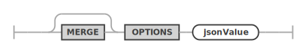
These options can include the following JSON keys.
authentication- Defines global authentication parameters valid for all MySQL Routers
throttling- Used to limit the authentication attempts to prevent brute force attacks on account information
perAccount- Settings that apply per MRS account
minimumTimeBetweenRequestsInMs- Sets the minimum time between connection attempts. If a client tries to authenticate faster than that the request will be rejected. The value is given in milliseconds.
maximumAttemptsPerMinute- Sets the maximum amount of attempts per minute. If a
client tries to authenticate more often that that further
attempts will be blocked for the amount of seconds specified
in the
blockWhenAttemptsExceededInSecondsvalue.
- Sets the maximum amount of attempts per minute. If a
client tries to authenticate more often that that further
attempts will be blocked for the amount of seconds specified
in the
perHost- Settings that apply per host from where a client tries to connect
minimumTimeBetweenRequestsInMsmaximumAttemptsPerMinute
blockWhenAttemptsExceededInSeconds- Sets the amount of time the account or client host will be blocked from authentication. The value is given in seconds.
gtid- Defines global settings for the MySQL GTID handling, using the following fields.
cache- Is used to configure the MySQL Router’s GTID cache.
enable- If set to
trueGTIDs will be cached by the MySQL Router.
- If set to
refreshRate- Defines how often the GTID cache will be refreshed. Set seconds, e.g. 5.
refreshWhenIncreasesBy- In addition to the time based refresh, the GTID cache can also be refreshed based on the number of transactions that happened since the last refresh. Set in number of transactions, e.g. 500.
responseCache- Global options for the REST endpoint response cache,
which keeps an in-memory cache of responses to GET requests
on tables, views, procedures and functions. To enable
caching of an endpoint, you must also set the
cacheTimeToLiveoption for each object to be cached. maxCacheSize- Maximum size of the cache. Default is 1M.
- Global options for the REST endpoint response cache,
which keeps an in-memory cache of responses to GET requests
on tables, views, procedures and functions. To enable
caching of an endpoint, you must also set the
fileCache- Global options for the static file data cache, which keeps an in-memory cache of responses to GET requests on content set files.
maxCacheSize- Maximum size of the cache. Default is 1M.
defaultStaticContent- Allows the definition of static content for the root
path
/that will be returned for file paths matching the given JSON keys. A JSON keyindex.htmlwill be served as/index.htmlby the MySQL Router. The file content needs to be Base64 encoded. If the same JSON key is used fordefaultStaticContentas well as fordefaultRedirects, the redirect is prioritized.
- Allows the definition of static content for the root
path
defaultRedirects- Is used to define internal redirects performed by the
MySQL Router. This can be used to expose content of a REST
service on the root path
/. A JSON keyindex.htmlholding the value/myService/myContentSet/index.htmlwill exposed the corresponding file from the given path as/index.html.
- Is used to define internal redirects performed by the
MySQL Router. This can be used to expose content of a REST
service on the root path
directoryIndexDirective- Holds an ordered list of files that should be returned
when a directory path has been requested. The first matching
file that is available will be returned. The
directoryIndexDirectiveis recursively applies to all directory paths exposed by the MySQL Router. To change thedirectoryIndexDirectivefor a given REST service or REST static content set, the corresponding option needs to be set for those objects.
- Holds an ordered list of files that should be returned
when a directory path has been requested. The first matching
file that is available will be returned. The
All other keys will be ignored and can be used to store custom metadata about the service. It is a good practice to include a unique prefix when adding custom keys to avoid them be overwritten by future MRS options.
Examples
The following JsonValue will define the static content
for /index.html, /favicon.ico and
/favicon.svg. It will also direct the MySQL
Router to return the contents of /index.html if
the root path / is requested,
e.g. https://my.example.com/
{
"defaultStaticContent": {
"index.html": "PCFET0NUW...",
"favicon.ico": "AAABAAMAM...",
"favicon.svg": "PD94bWwmV..."
},
"directoryIndexDirective": [
"index.html"
]
}In this example an internal redirect of
/index.html to
/myService/myContentSet/index.html is
performed, directly serving the index.html page
of /myService/myContentSet. This overwrites the
index.html definition in
defaultStaticContent.
This is useful to directly serve a specific app on the
root path /.
{
"defaultStaticContent": {
"index.html": "PCFET0NUW...",
"favicon.ico": "AAABAAMAM...",
"favicon.svg": "PD94bWwmV..."
},
"defaultRedirects": {
"index.html": "/myService/myContentSet/index.html"
},
"directoryIndexDirective": [
"index.html"
]
}16.1.3 Updating the MySQL REST Service Metadata Schema
If the updateIfAvailable is defined, the configure
operation will include an update of the
mysql_rest_service_metadata database
schema.
updateIfAvailable:
UPDATE (IF AVAILABLE)?
;updateIfAvailable ::= 
16.2 CREATE REST SERVICE
The CREATE REST SERVICE statement is used to create a new or replace an existing REST service.
The MySQL REST Service supports the creation of many individual REST services. It is good practice to create a separate REST service for each REST application.
Each REST service can have its own options, authentication apps and supports a different set of authentication users.
Please note that service will not be published at
creation time by default. They will only be served by MySQL
Routers that are bootstrapped for development purposes. To
publish a REST service after all REST schemas and REST
objects have been created please use the ALTER REST SERVICE
statement and set the PUBLISHED option.
SYNTAX
createRestServiceStatement: (
CREATE OR REPLACE REST SERVICE
| CREATE REST SERVICE (
IF NOT EXISTS
)?
) serviceRequestPath restServiceOptions?
;
serviceRequestPath:
serviceDevelopersIdentifier? requestPathIdentifier
;
restServiceOptions: (
enabledDisabled
| publishedUnpublished
| restProtocol
| restAuthentication
| jsonOptions
| comments
| metadata
| addAuthApp
| removeAuthApp
)+
;createRestServiceStatement ::= 
serviceRequestPath ::= 
restServiceOptions ::= 
Examples
The following example creates a REST service
/myService. Please note that you need to set
the PUBLISHED option to make the REST service
publicly available.
CREATE OR REPLACE REST SERVICE /myService
COMMENT "A simple REST service";The next example shows how to set the REST service options.
CREATE OR REPLACE REST SERVICE /myTestService
COMMENTS "A simple REST service"
AUTHENTICATION
PATH "/authentication"
REDIRECTION DEFAULT
VALIDATION DEFAULT
PAGE CONTENT DEFAULT
OPTIONS {
"headers": {
"Access-Control-Allow-Credentials": "true",
"Access-Control-Allow-Headers": "Content-Type, Authorization, X-Requested-With, Origin, X-Auth-Token",
"Access-Control-Allow-Methods": "GET, POST, PUT, DELETE, OPTIONS"
},
"http": {
"allowedOrigin": "auto"
},
"logging": {
"exceptions": true,
"request": {
"body": true,
"headers": true
},
"response": {
"body": true,
"headers": true
}
},
"returnInternalErrorDetails": true,
"includeLinksInResults": false
};16.2.1 Building a ServiceRequestPath
When creating or accessing a REST service a
serviceRequestPath has to be specified which
uniquely identifies the REST service across the MySQL REST
Service.
It consists of three components.
serviceDevelopersIdentifier(optional) - When set, the REST service is only available to the developers listed.requestPathIdentifier- The URL context root path the REST service will be served from.
In many cases setting the
requestPathIdentifier will be sufficient.
The serviceDevelopersIdentifier will be set
automatically when a REST service is cloned for development
by a given developer. Should such a REST service be made
available to more developers, the list of developers can be
extended via an ALTER REST SERVICE
command.
serviceDevelopersIdentifier:
serviceDeveloperIdentifier (
COMMA serviceDeveloperIdentifier
)* AT_SIGN
;
requestPathIdentifier:
REST_REQUEST_PATH
| BACK_TICK_QUOTED_ID
| {if AnsiQuotes} DOUBLE_QUOTED_TEXT
;serviceDevelopersIdentifier ::= 
requestPathIdentifier ::= 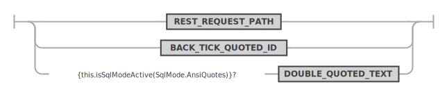
16.2.2 Enabling or Disabling a REST Service at Creation Time
The enabledDisabled option specifies whether
the REST service should be enabled or disabled. REST
services are created in the ENABLED state by default. The
state can be changed via the ALTER REST SERVICE
statement.
Please also see the publishedUnpublished
option which determines if a REST service is served by MySQL
Routers.
enabledDisabled:
ENABLED
| DISABLED
;enabledDisabled ::=
16.2.3 Publishing a REST Service at Creation Time
The publishedUnpublished option specifies
whether the REST service should be in PUBLISHED
or UNPUBLISHED state. REST services are created
in the UNPUBLISHED state by default.
A REST service in UNPUBLISHED state will
only be served by MySQL Routers that are bootstrapped for
development using the
--mrs-development <user> option. To make
a REST service publicly available on all MySQL Routers it
needs to be set to the PUBLISHED state using
the ALTER REST SERVICE
statement.
publishedUnpublished:
PUBLISHED
| UNPUBLISHED
;publishedUnpublished ::= 
16.2.4 Setting the REST Service Protocol
In general it is advised to run the MySQL REST Service using HTTPS only and changing the REST service protocol default (HTTPS) is not required.
There might still be special use cases when configuring the MySQL Router using HTTP is acceptable, e.g. when using a reverse proxy on the same machine that is handling the HTTPS part and not using MySQL internal authentication which requires passwords to be transferred in plain text. But even in that specific example the REST service protocol must be set to HTTPS as the reverse proxy offers the REST service via HTTPS.
Should there still be a configuration setup that requires the REST service to be accessible by clients via HTTP, the REST service protocol can be switched to HTTP.
This setting is used in one place.
- When performing an OAuth2 authentication request, the
protocol is used to build the redirect URL parameter in the
first authentication request to the OAuth2 server. The
protocol used in the redirect URL parameter must match the
external protocol the REST service is reachable on. In case
of using a reverse proxy, the
X-Forwarded-Protorequest header will overwrite this setting when made available by the proxy.
restProtocol:
PROTOCOL (HTTP | HTTPS)
;16.2.5 Assigning a REST Authentication App to a REST Service
To enable authentication for a REST service, a REST authentication app needs to be linked to the REST service. REST authentication apps are created using the CREATE REST AUTH APP statement.
REST authentication apps can be linked while creating the REST service or they can be added alter using the ALTER REST SERVICE statement.
addAuthApp:
ADD AUTH APP authAppName (IF EXISTS)?
;addAuthApp ::= 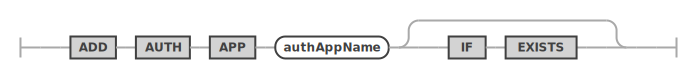
16.2.6 REST Service Authentication Settings
Each REST service can be configured with specific authentication settings.
restAuthentication:
AUTHENTICATION (
authPath
| authRedirection
| authValidation
| authPageContent
)*
;
authPath:
PATH quotedTextOrDefault
;
authRedirection:
REDIRECTION quotedTextOrDefault
;
authValidation:
VALIDATION quotedTextOrDefault
;
authPageContent:
PAGE CONTENT quotedTextOrDefault
;restAuthentication ::= 
authPath ::=
authRedirection ::= 
authValidation ::=
authPageContent ::= 
- AUTHENTICATION PATH
- The html path used for authentication handling for this
REST service. Specified as a sub-path to the REST service
path. If not explicitly set, the default is path is
/authenticationis used. - The following endpoints will be made available for
<service_path>/<auth_path>/login/status/logout/completed
- The html path used for authentication handling for this
REST service. Specified as a sub-path to the REST service
path. If not explicitly set, the default is path is
- AUTHENTICATION REDIRECTION
- The authentication workflow will redirect to this URL
after successful- or failed login. Specified as a sub-path
to the REST service path. If this option is not set
explicitly, the workflow will redirect to
<service_path>/<auth_path>/completedif the<service_path>/<auth_path>/login?onCompletionRedirectparameter has not been set.
- The authentication workflow will redirect to this URL
after successful- or failed login. Specified as a sub-path
to the REST service path. If this option is not set
explicitly, the workflow will redirect to
- AUTHENTICATION VALIDATION
- A regular expression to validate the
<service_path>/<auth_path>/login?onCompletionRedirectparameter. If set, this allows to limit the possible URLs an application can specify for this parameter.
- A regular expression to validate the
- AUTHENTICATION PAGE CONTENT
- If this option is set its content will replace the page
content of the
<service_path>/<auth_path>/completedpage.
- If this option is set its content will replace the page
content of the
16.2.7 REST Service Json Options
The jsonOptions allow to set a number of specific options
for the service. Specify the MERGE keyword to
merge the given options with the existing options. If
MERGE is omitted, all existing options will be
overwritten with the specified options.
jsonOptions:
MERGE? OPTIONS jsonValue
;
jsonOptions ::=

These options can include the following JSON keys.
- `headers` - Allows the specification of HTTP headers. Please refer to the HTTP header documentation for details.
- `http`
- `allowedOrigin` - The setting for Access-Control-Allow-Origin HTTP header. Can either be set to `*`, `null`, `<origin>` or `auto`. When set to `auto`, the MySQL Routers will return the origin of the specific client making the request.
- `httpMethodsAllowedForUnauthorizedAccess` - If a REST objects is configured to not require authentication, only GET is allowed by default. In a testing environment it might be desirable to allow all HTTP methods. In that case this option can be set to a list of allowed methods, e.g. ["GET", "POST", "PUT", "DELETE"]
- `logging`
- `exceptions` - If exceptions should be logged.
- `requests`
- `body` - If the content of request bodies should be logged.
- `headers` - If the content of request headers should be logged.
- `response`
- `body` - If the content of response bodies should be logged.
- `headers` - If the content of response headers should be logged.
- `returnInternalErrorDetails` - If internal errors should be returned. This is useful for application development but should be turned off for production deployments.
- `includeLinksInResults` - If set to false, the results do not include navigation links.
- `defaultStaticContent` - Allows the definition of static content for `request path` of the REST service that will be returned for file paths matching the given JSON keys. A JSON key `index.html` will be served as `/myService/index.html` by the MySQL Router if the `request path` of the REST service has been set to `/myService`. The file content needs to be Base64 encoded. If the same JSON key is used for `defaultStaticContent` as well as for `defaultRedirects`, the redirect is prioritized.
- `defaultRedirects` - Is used to define internal redirects performed by the MySQL Router. This can be used to expose content on the `request path` of the of a REST service. A JSON key `index.html` holding the value `/myService/myContentSet/index.html` will exposed the corresponding file from the given path as `/myService/index.html` if the `request path` of the REST service has been set to `/myService`.
- `directoryIndexDirective` - Holds an ordered list of files that should be returned when a directory path has been requested. The first matching file that is available will be returned. The `directoryIndexDirective` is recursively applies to all directory paths exposed by the MySQL Router. To change the `directoryIndexDirective` for a given REST object, the corresponding option needs to be set for that object.
- `sqlQuery`
- `timeout`
- Number of milliseconds to allow for DB operations while serving an endpoint. DB requests taking longer than that time will be interrupted and an error 504 returned. Default 2000. Can be overridden at a per-endpoint basis.
All other keys will be ignored and can be used to store custom metadata about the service. It is a good practice to include a unique prefix when adding custom keys to avoid them be overwritten by future MRS options.
**_Examples_**
```json
{
"headers": {
"Access-Control-Allow-Credentials": "true",
"Access-Control-Allow-Headers": "Content-Type, Authorization, X-Requested-With, Origin, X-Auth-Token",
"Access-Control-Allow-Methods": "GET, POST, PUT, DELETE, OPTIONS"
},
"http": {
"allowedOrigin": "auto"
},
"logging": {
"exceptions": true,
"request": {
"body": true,
"headers": true
},
"response": {
"body": true,
"headers": true
}
},
"returnInternalErrorDetails": true,
"includeLinksInResults": false
}16.2.8 REST Service Comments
The comments can hold a description of the REST service. The maximal length is of the comments string is 512 characters.
comments:
COMMENT textStringLiteral
;comments ::= 
16.2.9 REST Service Metadata
The metadata can hold any JSON data. It can later be consumed by a front end implementation to dynamically render certain attributes, like a specific icon or a color.
metadata:
METADATA jsonValue
;16.3 CLONE REST SERVICE
Duplicates the contents of a REST service to a newly created one.
All endpoints and roles belonging to the given service are copied.
SYNTAX
cloneRestServiceStatement:
CLONE REST SERVICE serviceRequestPath NEW REQUEST PATH
newServiceRequestPath
;cloneRestServiceStatement ::=
16.4 CREATE REST SCHEMA
The CREATE REST SCHEMA statement is used to create a new or replace an existing REST schema. Each REST schema directly maps to a database schema and allows the database schema objects (tables, views and stored procedures) to be exposed via REST endpoints.
Note: Adding a REST schema to a REST service does not automatically expose any database schema objects via REST. The corresponding
CREATE REST DATA MAPPING VIEW,CREATE REST PROCEDURE,CREATE REST FUNCTIONddl commands need to be called to explicitly expose a database schema object.
Each REST schema belongs to a REST service, which has to be created first. One REST service can hold many REST schemas.
Each REST schema can have its own options, authentication apps and supports a different set of authentication users.
SYNTAX
createRestSchemaStatement: (
CREATE OR REPLACE REST SCHEMA
| CREATE REST SCHEMA (
IF NOT EXISTS
)?
) schemaRequestPath? (
ON SERVICE? serviceRequestPath
)? FROM schemaName restSchemaOptions?
;
restSchemaOptions: (
enabledDisabledPrivate
| authenticationRequired
| itemsPerPage
| jsonOptions
| comments
| metadata
)+
;createRestSchemaStatement ::= 
restSchemaOptions ::= 
Examples
The following example creates a REST schema
/sakila on the REST service
/myService.
CREATE OR REPLACE REST SCHEMA /sakila ON SERVICE /myService
FROM `sakila`
COMMENT "The sakila schema";16.4.1 Enabling or Disabling a REST Schema at Creation Time
The enabledDisabledPrivate option specifies
whether the REST schema should be enabled, disabled or
private when it is created.
Setting a schema to private disables public access via HTTPS but keeps the schema available for private access from MRS scripts.
enabledDisabledPrivate:
ENABLED
| DISABLED
| PRIVATE
;enabledDisabledPrivate ::= 
16.4.2 Specifying the Default Page Count
The itemsPerPage option can be used to
specify the default number of items returned for queries run
against this REST schema.
itemsPerPage:
ITEMS PER PAGE itemsPerPageNumber
;itemsPerPage ::=
The number of items per page can also be specified for each REST object individually.
16.4.3 REST Schema Json Options
The jsonOptions allow to set a number of specific options
for the schema. Specify the MERGE keyword to
merge the given options with the existing options. If
MERGE is omitted, all existing options will be
overwritten with the specified options.
jsonOptions:
MERGE? OPTIONS jsonValue
;
jsonOptions ::=

These options can include the following JSON keys.
- `defaultStaticContent` - This option serves the same purpose as described in the [REST Configuration Json Options](#rest-configuration-json-options).
- `defaultRedirects` - This option serves the same purpose as described in the [REST Configuration Json Options](#rest-configuration-json-options).
- `directoryIndexDirective` - This option serves the same purpose as described in the [REST Configuration Json Options](#rest-configuration-json-options).
- `sqlQuery` - see [REST Service JSON Options](#rest-service-json-options)
All other keys will be ignored and can be used to store custom metadata about the schema. It is a good practice to include a unique prefix when adding custom keys to avoid them be overwritten by future MRS options.
### REST Schema Comments
The comments can hold a description of the REST schema. The maximal length is of the comments string is 512 characters.
```antlr
comments:
COMMENT textStringLiteral
;comments ::=
16.4.4 REST Schema Metadata
The metadata can hold any JSON data. It can later be consumed by a front end implementation to dynamically render certain attributes, like a specific icon or a color.
metadata:
METADATA jsonValue
;16.5 CREATE REST VIEW
The CREATE REST DATA MAPPING VIEW statement
is used to add REST endpoints for database schema tables or
views. Their data will be served as JSON documents.
The structure of the served JSON documents is defined using an extended GraphQL syntax. This allows to define even complex REST data mapping views in a simple and human readable way. Please see the corresponding GraphQL section about how to design the GraphQL definition for a REST data mapping view.
Please see the MRS Reference Manual to learn more about JSON data mapping views.
SYNTAX
createRestViewStatement: (
CREATE OR REPLACE REST DATA? MAPPING? VIEW
| CREATE REST DATA? MAPPING? VIEW (
IF NOT EXISTS
)?
) viewRequestPath (ON serviceSchemaSelector)? AS qualifiedIdentifier (
CLASS restObjectName
)? graphQlCrudOptions? graphQlObj? restObjectOptions?
;
serviceSchemaSelector:
(SERVICE serviceRequestPath)? SCHEMA schemaRequestPath
;
restObjectOptions: (
enabledDisabledPrivate
| authenticationRequired
| itemsPerPage
| jsonOptions
| comments
| metadata
| restViewMediaType
| restViewFormat
| restViewAuthenticationProcedure
)+
;createRestViewStatement ::= 
serviceSchemaSelector ::= 
restObjectOptions ::= 
Examples
The following example adds a REST data mapping view for
the sakila.city database schema table.
CREATE REST VIEW /city
ON SERVICE /myService SCHEMA /sakila
AS `sakila`.`city` {
cityId: city_id @SORTABLE,
city: city,
countryId: country_id,
lastUpdate: last_update
}
AUTHENTICATION REQUIRED;Querying the REST data mapping view using the TypeScript SDK returns the following JSON document.
ts> myService.sakila.city.findFirst();
{
"city": "A Corua (La Corua)",
"links": [
{
"rel": "self",
"href": "/myService/sakila/city/1"
}
],
"cityId": 1,
"countryId": 87,
"lastUpdate": "2006-02-15 04:45:25.000000",
"_metadata": {
"etag": "EE93452B41984F3F5BBB0395CCB2CED00F5C748FEEA4A36CCD749CC3F85B7CEA"
}
}The next example adds the referenced table
sakila.country to the REST data mapping
view.
CREATE OR REPLACE REST VIEW /city
ON SERVICE /myService SCHEMA /sakila
AS `sakila`.`city` {
cityId: city_id @SORTABLE,
city: city,
countryId: country_id,
lastUpdate: last_update,
country: sakila.country {
countryId: country_id @SORTABLE,
country: country,
lastUpdate: last_update
}
}
AUTHENTICATION REQUIRED;This is what the REST data mapping view looks like in the interactive MySQL REST Object Dialog in the MySQL Shell for VS Code extension.
 ı
ı
Running a TypeScript SDK query against this new REST endpoint returns the following JSON Document.
ts> myService.sakila.city.findFirst();
{
"city": "A Corua (La Corua)",
"links": [
{
"rel": "self",
"href": "/myService/sakila/city/1"
}
],
"cityId": 1,
"country": {
"country": "Spain",
"countryId": 87,
"lastUpdate": "2006-02-15 04:44:00.000000"
},
"countryId": 87,
"lastUpdate": "2006-02-15 04:45:25.000000",
"_metadata": {
"etag": "FFA2187AD4B98DF48EC40B3E807E0561A71D02C2F4F5A3B953AA6CB6E41CAD16"
}
}16.5.1 Preconditions
You define a REST data mapping view against a set of tables related by primary key (PK), foreign key (FK) or unique key constraints (UK). The following rules apply:
- The constraints must be declared in the database.
- The relationships type can be 1-to-1, 1-to-N and N-to-M (using a mapping table with two FKs). The N-to-M relationship can be thought of as the combination of 1-to-N and 1-to-1 relationship
- Columns of two or more tables with 1-to-1 or N-to-1 relationships can be merged into the same JSON object via UNNEST. Otherwise a nested JSON object is created.
- Tables with a 1-to-N relationship create a nested JSON array.
- Each item in the data mapping view is one JSON object, which is typically a hierarchy of nested objects and arrays.
- Each application object is built from values originating from one or multiple rows from the underlying tables of that view. Typically, each table contributes to one (nested) JSON object.
16.5.2 Enabling or Disabling a REST View at Creation Time
The enabledDisabledPrivate option specifies
whether the REST data mapping view should be enabled,
disabled or private when it is created.
Setting a REST data mapping view to private disables public access via HTTPS but keeps the schema available for private access from MRS scripts.
enabledDisabledPrivate:
ENABLED
| DISABLED
| PRIVATE
;enabledDisabledPrivate ::=
16.5.3 Requiring Authentication for REST Views
The authenticationRequired option specifies
if a REST data mapping view requires authentication before
accessing its REST endpoints.
authenticationRequired:
AUTHENTICATION NOT? REQUIRED
;authenticationRequired ::= 
16.5.4 Specifying the Page Count for REST Views
The itemsPerPage option can be used to
specify the number of items returned for queries run against
the REST data mapping view.
itemsPerPage:
ITEMS PER PAGE itemsPerPageNumber
;itemsPerPage ::=
The number of items per page can also be specified for each REST object individually.
16.5.5 Setting the Media Type for REST Views
If this REST data mapping view returns a specific MIME
type it can be set via the restViewMediaType
option. If MRS should try to automatically detect the file
type based on the content of the file the
AUTODETECT option can be used.
restViewMediaType:
MEDIA TYPE (
textStringLiteral
| AUTODETECT
)
;restViewMediaType ::= 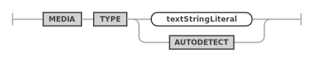
16.5.6 Setting the Result Format for REST Views
A REST data mapping view can return one of the following
formats which can be set with the
restViewFormat option.
- FEED: A list of result JSON objects
- ITEM: A single result item
- MEDIA: A single blob item. The
restViewMediaTypeoption is used to set the corresponding MIME type in this case.
restViewFormat:
FORMAT (FEED | ITEM | MEDIA)
;restViewFormat ::= 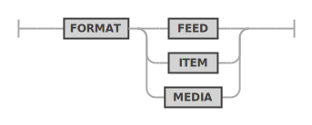
16.5.7 Using a Custom Authentication Procedure for a REST View
In case the built in authentication handling does not cover the specific use case for a REST data mapping view, a custom MySQL stored procedure can be used to handle the authentication check for the given user and the requested CRUD operation.
The referenced MySQL stored procedure has to be in the
same schema as the database schema object and it has to
accept the following parameters:
(IN user_id BINARY(16), IN schema VARCHAR(255), IN object VARCHAR(255), IN crud_operation VARCHAR(4)).
It needs to returns true or
false.
restViewAuthenticationProcedure ::= 
16.5.8 Defining the GraphQL definition for a REST View
graphQlObj:
OPEN_CURLY graphQlPair (COMMA graphQlPair)* CLOSE_CURLY
| OPEN_CURLY CLOSE_CURLY
;
graphQlCrudOptions: (
AT_INSERT
| AT_NOINSERT
| AT_UPDATE
| AT_NOUPDATE
| AT_DELETE
| AT_NODELETE
| AT_CHECK
| AT_NOCHECK
)+
;
graphQlPair:
graphQlPairKey COLON graphQlPairValue (
AT_IN
| AT_OUT
| AT_INOUT
)? graphQlValueOptions? (
AT_DATATYPE OPEN_PAR graphQlDatatypeValue CLOSE_PAR
)? graphQlCrudOptions? graphQlValueJsonSchema? graphQlObj?
;
graphQlValueOptions: (
AT_NOCHECK
| AT_SORTABLE
| AT_NOFILTERING
| AT_ROWOWNERSHIP
| AT_UNNEST
| AT_KEY
)+
;
graphQlValue:
qualifiedIdentifier
| graphQlObj
;
graphQlValueJsonSchema:
JSON SCHEMA jsonValue
;graphQlObj ::= 
graphQlCrudOptions ::= 
graphQlPair ::= 
graphQlValue ::= 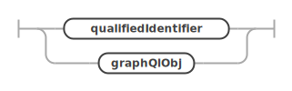
graphQlValueJsonSchema ::= 
16.5.9 REST View Metadata
The metadata can hold any JSON data. It can later be consumed by a front end implementation to dynamically render certain attributes, like a specific icon or a color.
metadata:
METADATA jsonValue
;16.5.10 Json Options for Views
The jsonOptions allow to set a number of specific options
for the REST view. Specify the MERGE keyword to
merge the given options with the existing options. If
MERGE is omitted, all existing options will be
overwritten with the specified options.
jsonOptions:
MERGE? OPTIONS jsonValue
;
The following additional options can be configured for most database object endpoints in a JSON object through the OPTIONS clause (indentation means JSON object nesting):
- `http`
- see [REST Service JSON Options](#rest-service-json-options)
- `logging`
- see [REST Service JSON Options](#rest-service-json-options)
- `metadata`
- `gtid` (_bool_)
- if true, embeds the GTID assigned to DB change operations into the metadata of the response JSON object. Enable when using with replication topologies, to ensure that changes made to an object will be reflected when reading it,regardless of where the read happens. Default true.
- `sqlQuery`
- `embedWait` (_bool_)
- if true, performs the wait described in the `wait` option directly in the DB query, as opposed to executing it beforehand in a separate statement.
- `timeout` (_number_)
- number of milliseconds to wait for the DB query to execute before it's terminated. Default is taken from the global `sqlQuery`.`timeout` option.
- `wait` (_bool_)
- when querying data from a secondary server, controls whether to wait until the transaction GTID specified through the `asof` clause are applied. Effectively enables read-own-writes semantics.
- `result`
- `cacheTimeToLive` (_double_)
- enables caching for GET requests. Specifies the number of seconds (including sub-second values) to keep the response in the cache, after which it will be discarded until a new request comes in or when the cache fills up.
- `includeLinks` (_bool_)
- whether to include links in returned JSON objects (default true)
- `returnInternalErrorDetails` (_bool_)
- controls debug logging
- `disableAutomaticGrants` (_bool_)
- when creating or altering REST objects a list of privileges are automatically granted to the `mysql_rest_service_data_provider` role in order for the MySQL Router to be able to access the referenced data in the MySQL Server. In some cases it might be desirable to turn off this automatic grant of privileges and use the `grants` option to specify a custom list of grants.
- `grants` (_object_ | _list_)
- Either a single grant object or a list of grant objects that are executed in addition to the automatically generated grant statements for the REST object. These additional grants are needed when e.g. a stored PROCEDURE works with database TABLEs/VIEWs or calls other PROCEDUREs and FUNCTIONs.
- `privileges` (_string_ | _list_)
- Either a single privilege name or a list of privileges names or a list of privilege objects. The following MySQL privileges are allowed: "ALTER" | "ALTER ROUTINE" | "CREATE" | "CREATE ROUTINE" | "CREATE TEMPORARY TABLES" | "CREATE VIEW" | "DELETE" | "DROP" | "EVENT" | "EXECUTE" | "INDEX" | "INSERT" | "LOCK TABLES" | "REFERENCES" | "SELECT" | "SHOW DATABASES" | "SHOW VIEW" | "TRIGGER" | "UPDATE" | "USAGE". A privilege object has two fields, `privilege` and `columnList` with the latter holding a list of column names.
- `objectType` (_string_)
- Specifies an option object type, either "TABLE" | "FUNCTION" | "PROCEDURE".
- `schema` (_string_)
- The name of the database schema or `*`. The name needs to be provided without back ticks.
- `object` (_string_)
- The name of the database table/view/procedure/function or `*`. The name needs to be provided without back ticks.
**Examples for `grants`:**
The following example grants the SELECT privilege on the `mysql_rest_service_metadata`.`mrs_user` table.
```json
{
"grants": {
"privileges": "SELECT",
"schema": "mysql_rest_service_metadata",
"object": "mrs_user"
}
}This example grants the SELECT and UPDATE privileges on
the
mysql_rest_service_metadata.mrs_user
table.
{
"grants": {
"privileges": [ "SELECT", "UPDATE" ],
"schema": "mysql_rest_service_metadata",
"object": "mrs_user" }
}The following example grants two privileges.
{
"grants": [
{
"privileges": "SELECT",
"schema": "mysql_rest_service_metadata",
"object": "msm_schema_version"
},
{
"privileges": "SELECT",
"schema": "mysql_rest_service_metadata",
"object": "mrs_user_schema_version"
}
]
}This example grants the SELECT privilege only on the
id and name columns of the
mysql_rest_service_metadata.mrs_user
table.
{
"grants": {
"privileges": [
{
"privilege": "SELECT",
"columnList": [
"id",
"name"
]
}
],
"schema": "mysql_rest_service_metadata",
"object": "mrs_user"
}
}16.6 CREATE REST PROCEDURE
The CREATE REST PROCEDURE statement is used
to add REST endpoints for database schema stored procedures.
It uses the same extended
GraphQL syntax as defined for REST data mapping views to
describe the REST procedure’s parameters and result sets.
Please make sure to study the corresponding
section.
SYNTAX
createRestProcedureStatement: (
CREATE OR REPLACE REST PROCEDURE
| CREATE REST PROCEDURE (
IF NOT EXISTS
)?
) procedureRequestPath (ON serviceSchemaSelector)? AS qualifiedIdentifier
FORCE? (
PARAMETERS restObjectName? graphQlObj
)? restProcedureResult* restObjectOptions?
;
serviceSchemaSelector:
(SERVICE serviceRequestPath)? SCHEMA schemaRequestPath
;
restObjectOptions: (
enabledDisabledPrivate
| authenticationRequired
| itemsPerPage
| jsonOptions
| comments
| metadata
| restViewMediaType
| restViewFormat
| restViewAuthenticationProcedure
)+
;
restProcedureResult:
RESULT restResultName? graphQlObj
;createRestProcedureStatement ::= 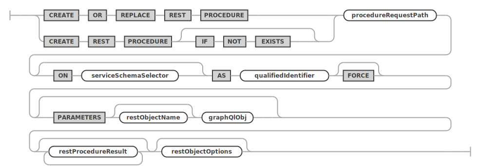
serviceSchemaSelector ::=
restObjectOptions ::=
restProcedureResult ::= 
Examples
The following example adds a REST procedure for the
sakila.rewards_report database schema
procedure. It is assumed that a REST service
/myService and a REST schema
/sakila have already been created.
CREATE OR REPLACE REST PROCEDURE /filmInStock
ON SERVICE /myService SCHEMA /sakila
AS sakila.rewards_report;The following example adds a REST procedure for the
sakila.filmInStock database schema procedure,
while explicitly specifying the list of parameters and the
RESULT returned by the procedure.
CREATE OR REPLACE REST PROCEDURE /filmInStock
ON SERVICE /myService SCHEMA /sakila
AS sakila.film_in_stock
PARAMETERS MyServiceSakilaFilmInStockParams {
pFilmId: p_film_id @IN,
pStoreId: p_store_id @IN,
pFilmCount: p_film_count @OUT
}
RESULT MyServiceSakilaFilmInStock {
inventoryId: inventory_id @DATATYPE("int")
};16.6.1 The FORCE Flag For Procedures
In certain cases, a REST procedure may need to be created
even though the actual database schema procedure is not yet
available. To make the CREATE REST PROCEDURE
succeed in this case, the FORCE flag must be
specified.
16.7 CREATE REST FUNCTION
The CREATE REST FUNCTION statement is used
to add REST endpoints for database schema stored function.
It uses the same extended
GraphQL syntax as defined for REST data mapping views to
describe the REST functions’s parameters and result. Please
make sure to study the corresponding
section.
SYNTAX
createRestFunctionStatement: (
CREATE OR REPLACE REST FUNCTION
| CREATE REST FUNCTION (
IF NOT EXISTS
)?
) functionRequestPath (ON serviceSchemaSelector)? AS qualifiedIdentifier
FORCE? (
PARAMETERS restObjectName? graphQlObj
)? restFunctionResult? restObjectOptions?
;
serviceSchemaSelector:
(SERVICE serviceRequestPath)? SCHEMA schemaRequestPath
;
restObjectOptions: (
enabledDisabledPrivate
| authenticationRequired
| itemsPerPage
| jsonOptions
| comments
| metadata
| restViewMediaType
| restViewFormat
| restViewAuthenticationProcedure
)+
;
restFunctionResult:
RESULT restResultName? graphQlObj
;createRestFunctionStatement ::= 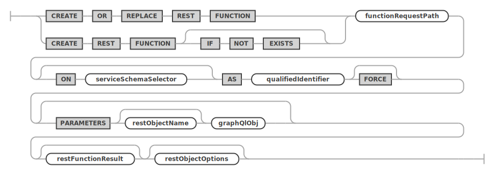
serviceSchemaSelector ::=
restObjectOptions ::=
restFunctionResult ::= 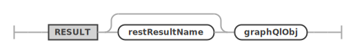
16.7.1 The FORCE Flag For Functions
In certain cases, a REST function may need to be created
even though the actual database schema function is not yet
available. To make the CREATE REST FUNCTION
succeed in this case, the FORCE flag must be
specified.
See JSON Options
16.8 CREATE REST CONTENT SET
The CREATE REST CONTENT SET statement is
used to add REST endpoints for static content.
SYNTAX
createRestContentSetStatement: (
CREATE OR REPLACE REST CONTENT SET
| CREATE REST CONTENT SET (
IF NOT EXISTS
)?
) contentSetRequestPath (
ON SERVICE? serviceRequestPath
)? (FROM directoryFilePath)? restContentSetOptions?
;
restContentSetOptions: (
enabledDisabledPrivate
| authenticationRequired
| jsonOptions
| comments
| fileIgnoreList
| loadScripts
)+
;createRestContentSetStatement ::= 
restContentSetOptions ::= 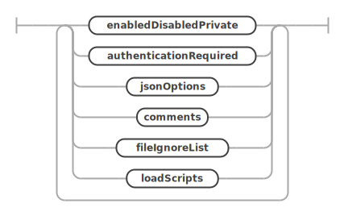
16.9 CREATE REST CONTENT FILE
Adds a file to a content set.
SYNTAX
createRestContentFileStatement: (
CREATE OR REPLACE REST CONTENT FILE
| CREATE REST CONTENT FILE (
IF NOT EXISTS
)?
) contentFileRequestPath ON (
SERVICE? serviceRequestPath
)? CONTENT SET contentSetRequestPath (
(FROM directoryFilePath)
| (BINARY? CONTENT textStringLiteral)
) restContentFileOptions?
;
restContentFileOptions: (
enabledDisabledPrivate
| authenticationRequired
| jsonOptions
)+
;
directoryFilePath:
textStringLiteral
;createRestContentFileStatement ::=
restContentFileOptions ::= 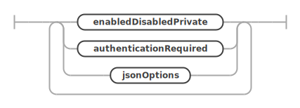
16.10 CREATE REST AUTH APP
The CREATE REST AUTH APP statement is used
to create a new REST authentication app. The MySQL REST
Service supports a list of authentication vendors, including
dedicated MRS authentication, MYSQL user account
authentication as well as several OAuth2 vendors, like OCI
OAuth2, Facebook and Google.
Once a REST authentication app has been created, it can be linked to REST services to enable the required authentication support.
The CREATE REST SERVICE and ALTER REST SERVICE statements support the addition or removal of REST authentication apps when using the ADD AUTH APP and REMOVE AUTH APP clauses
SYNTAX
createRestAuthAppStatement: (
CREATE OR REPLACE REST (
AUTH
| AUTHENTICATION
) APP
| CREATE REST (
AUTH
| AUTHENTICATION
) APP (IF NOT EXISTS)?
) authAppName VENDOR (
MRS
| MYSQL
| vendorName
) restAuthAppOptions?
;
restAuthAppOptions: (
enabledDisabled
| comments
| allowNewUsersToRegister
| defaultRole
| appId
| appSecret
| url
)+
;
allowNewUsersToRegister:
(DO NOT)? ALLOW NEW USERS (
TO REGISTER
)?
;
defaultRole:
DEFAULT ROLE textOrIdentifier
;
appId:
(APP | CLIENT) ID textStringLiteral
;
appSecret:
(APP | CLIENT) SECRET textStringLiteral
;
url:
URL textStringLiteral
;
authAppName:
textOrIdentifier
;createRestAuthAppStatement ::= 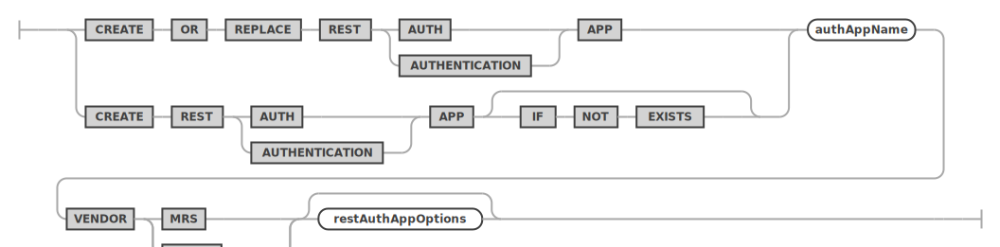
restAuthAppOptions ::= 
allowNewUsersToRegister ::= 
defaultRole ::=
appId ::= 
appSecret ::= 
url ::=
Examples
The following example creates an REST authentication app
using the MRS authentication vendor and links it to the REST
service /myService.
CREATE REST AUTHENTICATION APP "MRS" ON SERVICE /myService VENDOR MRS;
ALTER REST SERVICE /myService ADD AUTH APP "MRS";The next example creates an REST authentication app for the OCI OAuth2 service.
CREATE REST AUTHENTICATION APP "OCI"
VENDOR "OCI OAuth2"
URL "https://idcs-f84866196ff54e3b93a15651865191da.identity.oraclecloud.com:443";
CLIENT ID "f2abc2c0f19a4c40a1abc48edcdfe60b"
CLIENT SECRET "**********************"16.10.1 REST Authentication App Vendors
The following settings for VENDOR are
currently supported.
| Vendor | Type | Description |
|---|---|---|
MRS |
MRS | Built in MRS authentication with dedicated MRS account management. |
MYSQL |
MySQL Server | MySQL server account authentication. This authentication method makes most sense for tooling and other applications with hardcoded accounts accessing the MySQL REST Service. |
Facebook |
OAuth2 | Performing authentication against the Facebook OAuth2
servers using Login with Facebook. |
Google |
OAuth2 | Performing authentication against the Google OAuth2
servers using Login with Google. |
"OCI OAuth2" |
OAuth2 | Performing authentication against the OCI OAuth2 service. See here for details on how to configure the OCI Auth2 service. |
16.10.2 Configuring a REST Authentication App for OAuth2 access
Before creating a REST authentication app using an OAuth2 vendor, it is required to register the application at the OAuth2 vendor beforehand. Please consult the documentation of the individual vendors for more details.
For configuring the OCI OAuth2 service please see here.
Please note that the URL of the OAuth2 server is a required setting and must be specified.
During the registration process an APP ID (also called CLIENT ID) as well as an APP SECRET (also called CLIENT SECRET) will be generated by the OAuth2 vendor to uniquely identify the application. Both, the APP ID as well as the APP SECRET need to be specified when creating the REST authentication app.
In case of using OCI OAuth2 it is also required to specify the OCI “Domain URL” using the URL option.
16.11 CREATE REST USER
The CREATE REST USER statement is used to
add REST user to a REST authentication app.
SYNTAX
createRestUserStatement: (
CREATE OR REPLACE REST USER
| CREATE REST USER (
IF NOT EXISTS
)?
) userName AT_SIGN authAppName (
IDENTIFIED BY userPassword
)? userOptions?
;
userName:
textOrIdentifier
;
userPassword:
textStringLiteral
;
userOptions:
(accountLock | appOptions | jsonOptions)+
;
appOptions:
APP OPTIONS jsonValue
;
accountLock:
ACCOUNT (LOCK | UNLOCK)
;
createRestUserStatement ::= 
userOptions ::= 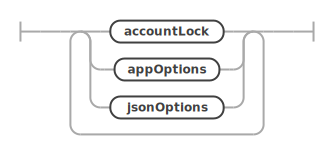
appOptions ::= 
accountLock ::= 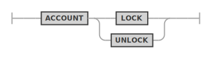
16.12 CREATE REST ROLE
Creates a REST role to the specified or currently active REST service. Role names must be unique across all services.
SYNTAX
createRestRoleStatement: (
CREATE OR REPLACE REST ROLE
| CREATE REST ROLE (
IF NOT EXISTS
)?
) roleName (EXTENDS parentRoleName)? roleService? restRoleOptions?
;
restRoleOptions:
(jsonOptions | comments)+
;createRestRoleStatement ::= 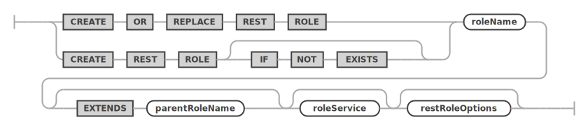
restRoleOptions ::= 
17 ALTER
17.1 ALTER REST SERVICE
An existing REST service can be altered by using the
ALTER REST SERVICE statement. It uses the same
restServiceOptions as used by the CREATE REST SERVICE
statement. Please see the discussion of the options there.
SYNTAX
alterRestServiceStatement:
ALTER REST SERVICE serviceRequestPath (
NEW REQUEST PATH newServiceRequestPath
)? restServiceOptions?
;
restServiceOptions: (
enabledDisabled
| publishedUnpublished
| restProtocol
| restAuthentication
| jsonOptions
| comments
| metadata
| addAuthApp
| removeAuthApp
)+
;
addAuthApp:
ADD AUTH APP authAppName (IF EXISTS)?
;
removeAuthApp:
REMOVE AUTH APP authAppName (IF EXISTS)?
;alterRestServiceStatement ::= 
restServiceOptions ::=
addAuthApp ::=
removeAuthApp ::= 
Examples
The following example alters a REST service
/myService by setting a new comment.
ALTER REST SERVICE /myService
COMMENT "A simple, improved REST service";17.2 ALTER REST AUTH APP
Modifies attributes from an existing authentication app.
See CREATE REST AUTH APP
for details about supported options.
SYNTAX
alterRestAuthAppStatement:
ALTER REST (
AUTH
| AUTHENTICATION
) APP authAppName (
NEW NAME newAuthAppName
)? restAuthAppOptions?
;alterRestAuthAppStatement ::= 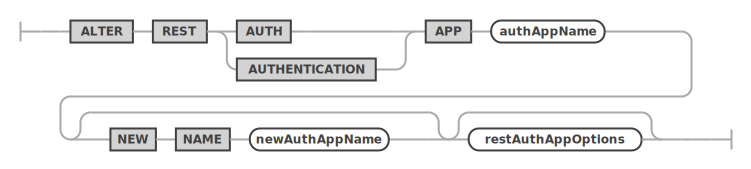
17.3 ALTER REST SCHEMA
An existing REST schema can be altered by using the
ALTER REST SCHEMA statement. It uses the same
restSchemaOptions as used by the CREATE REST SCHEMA
statement. Please see the discussion of the options
there.
SYNTAX
alterRestSchemaStatement:
ALTER REST SCHEMA schemaRequestPath? (
ON SERVICE? serviceRequestPath
)? (
NEW REQUEST PATH newSchemaRequestPath
)? (FROM schemaName)? restSchemaOptions?
;
restSchemaOptions: (
enabledDisabledPrivate
| authenticationRequired
| itemsPerPage
| jsonOptions
| comments
| metadata
)+
;alterRestSchemaStatement ::= 
restSchemaOptions ::=
Examples
The following example alters a REST schema
/myService to use a new request path
/myPublicService.
ALTER REST SCHEMA /sakila ON SERVICE /myService
NEW REQUEST PATH /myPublicService;17.4 ALTER REST VIEW
The ALTER REST DATA MAPPING VIEW statement
is used to alter existing REST data mapping views.
Please see the corresponding GraphQL section about how to design the GraphQL definition for a REST data mapping view.
Please see the MRS Reference Manual to learn more about JSON data mapping views.
SYNTAX
alterRestViewStatement:
ALTER REST DATA? MAPPING? VIEW viewRequestPath (
ON serviceSchemaSelector
)? (NEW REQUEST PATH newViewRequestPath)? (
CLASS restObjectName graphQlCrudOptions? graphQlObj?
)? restObjectOptions?
;
serviceSchemaSelector:
(SERVICE serviceRequestPath)? SCHEMA schemaRequestPath
;
restObjectOptions: (
enabledDisabledPrivate
| authenticationRequired
| itemsPerPage
| jsonOptions
| comments
| metadata
| restViewMediaType
| restViewFormat
| restViewAuthenticationProcedure
)+
;alterRestViewStatement ::= 
serviceSchemaSelector ::=
restObjectOptions ::=
Examples
The following example alters a REST data mapping view for
the sakila.city database schema table and sets
a new list of fields.
ALTER REST VIEW /city
ON SERVICE /myService SCHEMA /sakila
FROM `sakila`.`city` AS MyServiceSakilaCity {
cityId: city_id @SORTABLE,
city: city
};17.5 ALTER REST PROCEDURE
The ALTER REST PROCEDURE statement is used
to alter REST endpoints for database schema stored
procedures.
It uses the same extended GraphQL syntax as defined for REST data mapping views to describe the REST procedure’s parameters and result sets. Please make sure to study the corresponding section.
SYNTAX
alterRestProcedureStatement:
ALTER REST PROCEDURE procedureRequestPath (
ON serviceSchemaSelector
)? (
NEW REQUEST PATH newProcedureRequestPath
)? (PARAMETERS restObjectName? graphQlObj)? restProcedureResult* restObjectOptions?
;
serviceSchemaSelector:
(SERVICE serviceRequestPath)? SCHEMA schemaRequestPath
;
restObjectOptions: (
enabledDisabledPrivate
| authenticationRequired
| itemsPerPage
| jsonOptions
| comments
| metadata
| restViewMediaType
| restViewFormat
| restViewAuthenticationProcedure
)+
;alterRestProcedureStatement ::= 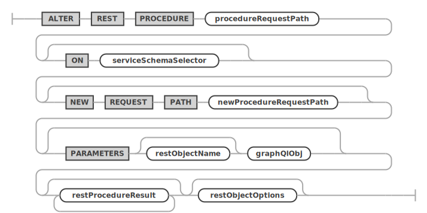
serviceSchemaSelector ::=
restObjectOptions ::=
17.6 ALTER REST FUNCTION
The ALTER REST FUNCTION statement is used to
alter REST endpoints for database schema stored
functions.
It uses the same extended GraphQL syntax as defined for REST data mapping views to describe the REST procedure’s parameters and result sets. Please make sure to study the corresponding section.
SYNTAX
alterRestFunctionStatement:
ALTER REST FUNCTION functionRequestPath (
ON serviceSchemaSelector
)? (
NEW REQUEST PATH newFunctionRequestPath
)? (PARAMETERS restObjectName? graphQlObj)? restFunctionResult* restObjectOptions?
;
serviceSchemaSelector:
(SERVICE serviceRequestPath)? SCHEMA schemaRequestPath
;
restObjectOptions: (
enabledDisabledPrivate
| authenticationRequired
| itemsPerPage
| jsonOptions
| comments
| metadata
| restViewMediaType
| restViewFormat
| restViewAuthenticationProcedure
)+
;alterRestFunctionStatement ::= 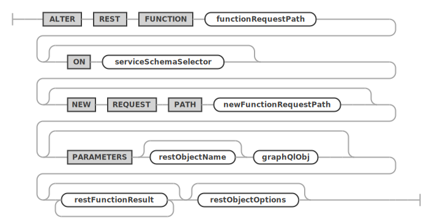
serviceSchemaSelector ::=
restObjectOptions ::=
17.7 ALTER REST CONTENT SET
The ALTER REST CONTENT SET statement is used
to alter REST content sets.
SYNTAX
alterRestContentSetStatement:
ALTER REST CONTENT SET contentSetRequestPath (
ON SERVICE? serviceRequestPath
)? (
NEW REQUEST PATH newContentSetRequestPath
)? restContentSetOptions?
;
newContentSetRequestPath:
requestPathIdentifier
;alterRestContentSetStatement ::= 
17.8 ALTER REST USER
Change password and options for an existing REST user account.
SYNTAX
alterRestUserStatement:
ALTER REST USER userName AT_SIGN authAppName (
IDENTIFIED BY userPassword
)? userOptions?
;createRestUserStatement ::=
18 DROP
18.1 DROP REST SERVICE
An existing REST service can be dropped by using the
DROP REST SERVICE statement.
SYNTAX
dropRestServiceStatement:
DROP REST SERVICE (
IF EXISTS
)? serviceRequestPath
;dropRestServiceStatement ::= 
Examples
The following example drops a REST service with the
request path /myService.
DROP REST SERVICE /myService;18.2 DROP REST SCHEMA
An existing REST schema can be dropped by using the
DROP REST SCHEMA statement.
SYNTAX
dropRestSchemaStatement:
DROP REST SCHEMA (
IF EXISTS
)? schemaRequestPath (
FROM SERVICE? serviceRequestPath
)?
;dropRestSchemaStatement ::= 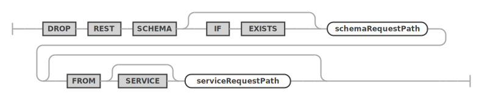
Examples
The following example drops a REST schema using the
request path /myService.
DROP REST SCHEMA /sakila FROM SERVICE /myService;18.3 DROP REST VIEW
The DROP REST DATA MAPPING VIEW statement is
used to drop existing REST data mapping views.
SYNTAX
dropRestViewStatement:
DROP REST DATA? MAPPING? VIEW (
IF EXISTS
)? viewRequestPath (FROM serviceSchemaSelector)?
;dropRestViewStatement ::= 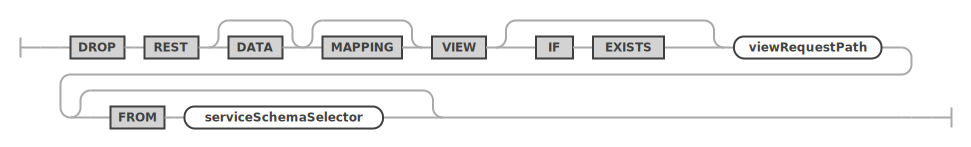
Examples
The following example drops a REST data mapping view
using the request path /city.
DROP REST VIEW /city
FROM SERVICE /myService SCHEMA /sakila;18.4 DROP REST PROCEDURE
The DROP REST PROCEDURE statement is used to
drop an existing REST procedures.
SYNTAX
dropRestProcedureStatement:
DROP REST PROCEDURE (
IF EXISTS
)? procedureRequestPath (FROM serviceSchemaSelector)?
;dropRestProcedureStatement ::= 
18.5 DROP REST FUNCTION
The DROP REST FUNCTION statement is used to
drop an existing REST functions.
SYNTAX
dropRestFunctionStatement:
DROP REST FUNCTION (
IF EXISTS
)? functionRequestPath (FROM serviceSchemaSelector)?
;dropRestFunctionStatement ::= 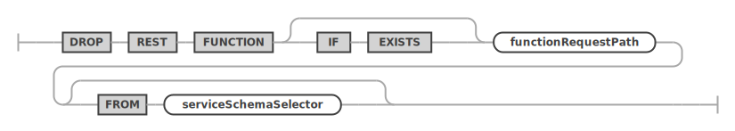
18.6 DROP REST CONTENT SET
The DROP REST CONTENT SET statement is used
to drop an existing REST static content set.
SYNTAX
dropRestContentSetStatement:
DROP REST CONTENT SET (
IF EXISTS
)? contentSetRequestPath (
FROM SERVICE? serviceRequestPath
)?
;dropRestContentSetStatement ::= 
18.7 DROP REST CONTENT FILE
Removes a file from a REST static content set.
SYNTAX
dropRestContentFileStatement:
DROP REST CONTENT FILE (
IF EXISTS
)? contentFileRequestPath FROM (
SERVICE? serviceRequestPath
)? CONTENT SET contentSetRequestPath
;dropRestContentFileStatement ::=
18.8 DROP REST AUTH APP
The DROP REST AUTH APP statement is used to
drop an existing REST authentication app from a REST
service.
SYNTAX
dropRestAuthAppStatement:
DROP REST (AUTH | AUTHENTICATION) APP (
IF EXISTS
)? authAppName
;dropRestAuthAppStatement ::= 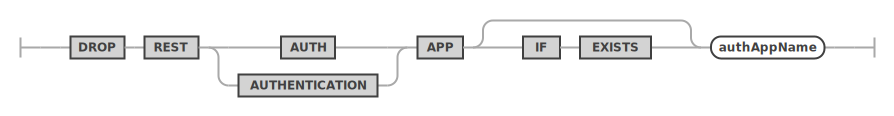
18.9 DROP REST USER
The DROP REST USER statement is used to drop
an existing REST user from a REST authentication app.
SYNTAX
dropRestUserStatement:
DROP REST USER (IF EXISTS)? userName AT_SIGN
authAppName
;dropRestUserStatement ::= 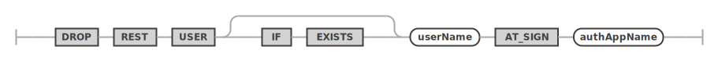
18.10 DROP REST ROLE
Drops the named REST role.
SYNTAX
dropRestRoleStatement:
DROP REST ROLE (IF EXISTS)? roleName roleService?
;dropRestRoleStatement ::= 
19 GRANT and REVOKE
19.1 GRANT REST
Grants REST privileges on endpoint objects to a role.
SYNTAX
grantRestPrivilegeStatement:
GRANT REST privilegeList (
(ON SERVICE? serviceRequestPathWildcard)
| (
ON serviceSchemaSelectorWildcard (
OBJECT objectRequestPathWildcard
)?
)
)? TO roleName roleService?
;
privilegeList:
privilegeName
| privilegeName COMMA privilegeList
;
privilegeName:
CREATE
| READ
| UPDATE
| DELETE
;
serviceSchemaSelector:
(SERVICE serviceRequestPath)? SCHEMA schemaRequestPath
;
serviceSchemaSelector:
(SERVICE serviceRequestPath)? SCHEMA schemaRequestPath
;grantRestPrivilegeStatement ::=
privilegeList ::= 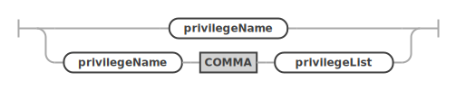
privilegeName ::= 
19.2 GRANT REST ROLE
Grants a REST role to a user account.
SYNTAX
grantRestRoleStatement:
GRANT REST ROLE roleName roleService? TO userName AT_SIGN
authAppName comments?
;grantRestRoleStatement ::= 
19.3 REVOKE REST
Revokes privileges on an REST endpoint object from a role.
SYNTAX
revokeRestPrivilegeStatement:
REVOKE REST privilegeList (
(ON SERVICE? serviceRequestPathWildcard)
| (
ON serviceSchemaSelectorWildcard (
OBJECT objectRequestPathWildcard
)?
)
)? FROM roleName roleService?
;revokeRestPrivilegeStatement ::= 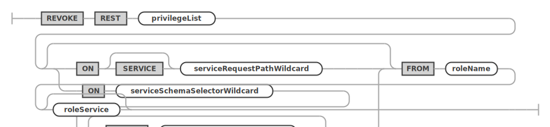
19.4 REVOKE REST ROLE
Revokes a role from a REST user.
SYNTAX
revokeRestRoleStatement:
REVOKE REST ROLE roleName roleService? FROM userName AT_SIGN
authAppName
;revokeRestRoleStatement ::= 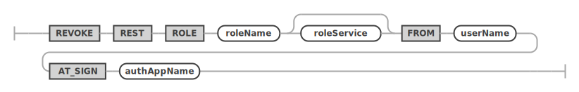
20 USE and SHOW
20.1 USE
An existing REST service can be dropped by using the
DROP REST SERVICE statement.
SYNTAX
useStatement:
USE REST serviceAndSchemaRequestPaths
;
serviceAndSchemaRequestPaths:
SERVICE serviceRequestPath
| serviceSchemaSelector
;useStatement ::=
serviceAndSchemaRequestPaths ::= 
Examples
The following example makes the REST service with the
request path /myService the new default REST
service.
USE REST SERVICE /myService;After the default REST service has been set, the following statement can be used to set the default REST schema.
USE REST SCHEMA /sakila;The next example shows how to set the default REST service and REST schema in a single statement.
USE REST SERVICE /myService SCHEMA /sakila;20.2 SHOW REST STATUS
The SHOW REST STATUS statement is used to
get basic information about the current status of the MySQL
REST Service.
SYNTAX
showRestMetadataStatusStatement:
SHOW REST METADATA? STATUS
;showRestMetadataStatusStatement ::= 
Examples
The following example drops a REST schema using the
request path /myService.
SHOW REST STATUS;20.3 SHOW REST SERVICES
The SHOW REST SERVICES statement lists all
available REST services.
SYNTAX
showRestServicesStatement:
SHOW REST SERVICES
;showRestServicesStatement ::= 
Examples
The following example lists all REST services.
SHOW REST SERVICES;20.4 SHOW REST SCHEMAS
The SHOW REST SCHEMAS statement lists all
available REST schemas of the given or current REST
service.
SYNTAX
showRestSchemasStatement:
SHOW REST SCHEMAS (
(ON | FROM) SERVICE? serviceRequestPath
)?
;showRestSchemasStatement ::= 
Examples
The following example lists all REST schemas of the REST
service using the request path /myService.
SHOW REST SERVICES FROM /myService;20.5 SHOW REST VIEWS
The SHOW REST DATA MAPPING VIEWS statement
lists all available REST data mapping views of the given or
current REST schema.
SYNTAX
showRestViewsStatement:
SHOW REST DATA? MAPPING? VIEWS (
(ON | FROM) serviceSchemaSelector
)?
;
serviceSchemaSelector:
(SERVICE serviceRequestPath)? SCHEMA schemaRequestPath
;showRestViewsStatement ::= 
serviceSchemaSelector ::=
Examples
The following example lists all REST data mapping views of the given REST schema.
SHOW REST VIEWS FROM SERVICE /myService SCHEMA /sakila;20.6 SHOW REST PROCEDURES
The SHOW REST PROCEDURES statement lists all
available REST procedures of the given or current REST
schema.
SYNTAX
showRestProceduresStatement:
SHOW REST PROCEDURES (
(ON | FROM) serviceSchemaSelector
)?
;
serviceSchemaSelector:
(SERVICE serviceRequestPath)? SCHEMA schemaRequestPath
;showRestProceduresStatement ::= 
serviceSchemaSelector ::=
20.7 SHOW REST FUNCTIONS
The SHOW REST FUNCTIONS statement lists all
available REST functions of the given or current REST
schema.
SYNTAX
showRestFunctionsStatement:
SHOW REST FUNCTIONS (
(ON | FROM) serviceSchemaSelector
)?
;
serviceSchemaSelector:
(SERVICE serviceRequestPath)? SCHEMA schemaRequestPath
;showRestFunctionsStatement ::= 
serviceSchemaSelector ::=
Examples
The following example lists all REST procedures of the given REST schema.
SHOW REST PROCEDURES FROM SERVICE /myService SCHEMA /sakila;20.8 SHOW REST CONTENT SETS
The SHOW REST CONTENT SETS statement lists
all available REST content sets of the given or current REST
service.
SYNTAX
showRestContentSetsStatement:
SHOW REST CONTENT SETS (
(ON | FROM) SERVICE? serviceRequestPath
)?
;showRestContentSetsStatement ::= 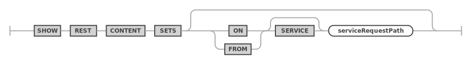
Examples
The following example lists all REST content sets of the given REST service.
SHOW REST CONTENT SETS FROM SERVICE /myService;20.9 SHOW REST CONTENT FILES
The SHOW REST CONTENT SETS statement lists
all available REST content files of the given content
set.
SYNTAX
showRestContentFilesStatement:
SHOW REST CONTENT FILES (
ON
| FROM
) (SERVICE? serviceRequestPath)? CONTENT SET contentSetRequestPath
;showRestContentFilesStatement ::=
20.10 SHOW CREATE REST CONTENT SET
Shows the CREATE SQL statement corresponding to the given content set.
SYNTAX
showCreateRestContentSetStatement:
SHOW CREATE REST CONTENT SET contentSetRequestPath (
(ON | FROM) SERVICE? serviceRequestPath
)?
;showCreateRestContentSetStatement ::=
20.11 SHOW CREATE REST CONTENT FILE
Shows the CREATE SQL statement corresponding to the given content file.
SYNTAX
showCreateRestContentFileStatement:
SHOW CREATE REST CONTENT FILE contentFileRequestPath (
ON
| FROM
) (SERVICE? serviceRequestPath)? CONTENT SET contentSetRequestPath
;showCreateRestContentFileStatement ::=
20.12 SHOW REST AUTH APPS
The SHOW REST AUTH APPS statement lists all
available REST auth apps of the given or current REST
service.
SYNTAX
showRestAuthAppsStatement:
SHOW REST AUTH APPS (
(ON | FROM) SERVICE? serviceRequestPath
)?
;showRestAuthAppsStatement ::= 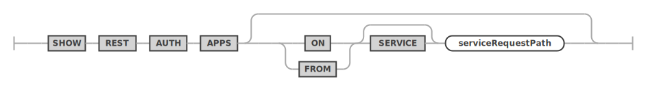
Examples
The following example lists all REST auth apps of the given REST service.
SHOW REST AUTH APPS FROM SERVICE /myService;20.13 SHOW CREATE REST SERVICE
The SHOW CREATE REST SERVICE statement shows
the corresponding DDL statement for the given REST
service.
SYNTAX
showCreateRestServiceStatement:
SHOW CREATE REST SERVICE serviceRequestPath? (
INCLUDING SCHEMA ENDPOINTS
)?
;showCreateRestServiceStatement ::= 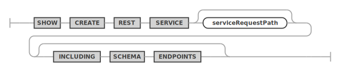
Examples
The following example shows the DDL statement for the
REST service with request path /myService.
SHOW CREATE REST SERVICE /myService;20.14 SHOW CREATE REST SCHEMA
The SHOW CREATE REST SCHEMA statement shows
the corresponding DDL statement for the given REST
schema.
SYNTAX
showCreateRestSchemaStatement:
SHOW CREATE REST SCHEMA schemaRequestPath? (
(ON | FROM) SERVICE? serviceRequestPath
)?
;showCreateRestSchemaStatement ::= 
Examples
The following example shows the DDL statement for the given REST schema.
SHOW CREATE REST SCHEMA /sakila FROM /myService;20.15 SHOW CREATE REST VIEW
The SHOW CREATE REST DATA MAPPING VIEW
statement shows the corresponding DDL statement for the
given REST data mapping view.
SYNTAX
showCreateRestViewStatement:
SHOW CREATE REST DATA? MAPPING? VIEW viewRequestPath (
(ON | FROM) serviceSchemaSelector
)?
;
serviceSchemaSelector:
(SERVICE serviceRequestPath)? SCHEMA schemaRequestPath
;showCreateRestViewStatement ::= 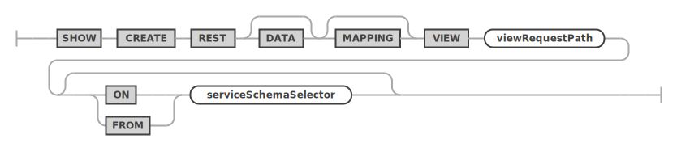
serviceSchemaSelector ::=
Examples
The following example shows the DDL statement for the given REST data mapping view.
SHOW CREATE REST VIEW /city ON SERVICE /myService SCHEMA /sakila;20.16 SHOW CREATE REST PROCEDURE
The SHOW CREATE REST PROCEDURE statement
shows the corresponding DDL statement for the given REST
procedure.
SYNTAX
showCreateRestProcedureStatement:
SHOW CREATE REST PROCEDURE procedureRequestPath (
(ON | FROM) serviceSchemaSelector
)?
;
serviceSchemaSelector:
(SERVICE serviceRequestPath)? SCHEMA schemaRequestPath
;showCreateRestProcedureStatement ::= 
serviceSchemaSelector ::=
20.17 SHOW CREATE REST FUNCTION
The SHOW CREATE REST FUNCTION statement
shows the corresponding DDL statement for the given REST
function.
SYNTAX
showCreateRestFunctionStatement:
SHOW CREATE REST FUNCTION functionRequestPath (
(ON | FROM) serviceSchemaSelector
)?
;
serviceSchemaSelector:
(SERVICE serviceRequestPath)? SCHEMA schemaRequestPath
;showCreateRestFunctionStatement ::= 
serviceSchemaSelector ::=
Examples
The following example shows the DDL statement for the given REST procedure.
SHOW CREATE REST PROCEDURE /inventory_in_stock ON SERVICE /myService SCHEMA /sakila;20.18 SHOW CREATE REST AUTH APP
The SHOW CREATE REST AUTH APP statement
shows the corresponding DDL statement for the given REST
auth app.
SYNTAX
showCreateRestAuthAppStatement:
SHOW CREATE REST AUTH APP authAppName
;showCreateRestAuthAppStatement ::= 
Examples
The following example shows the DDL statement for the given REST auth app.
SHOW CREATE REST AUTH APP "MRS" FROM SERVICE /myTestService;20.19 SHOW CREATE REST ROLE
The SHOW CREATE REST ROLE statement shows
the corresponding DDL statement for the given REST role.
SYNTAX
showCreateRestRoleStatement:
SHOW CREATE REST ROLE roleName roleService?
;
roleService:
ON (
ANY SERVICE
| SERVICE? serviceRequestPath
)
;showCreateRestRoleStatement ::=
roleService ::=
Examples
The following example shows the DDL statement for the given REST auth app.
SHOW CREATE REST ROLE `myrole` ON SERVICE /myTestService;20.20 SHOW CREATE REST USER
The SHOW CREATE REST USER statement shows
the corresponding DDL statement for the given REST user
account.
SYNTAX
showCreateRestUserStatement:
SHOW CREATE REST USER userName AT_SIGN authAppName
;showCreateRestUserStatement ::=
Examples
The following example shows the DDL statement for the given REST auth app.
SHOW CREATE REST USER myuser@`MRS` ON SERVICE /myTestService;20.21 SHOW REST ROLES
Shows a list of roles, optionally filtered by service or auth app and users that were granted the role.
SYNTAX
showRestRolesStatement:
SHOW REST ROLES (
(ON | FROM) (
ANY SERVICE
| SERVICE? serviceRequestPath
)
)? (FOR userName? AT_SIGN authAppName)?
;showRestRolesStatement ::= 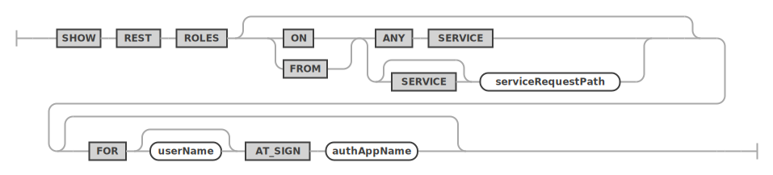
20.22 SHOW REST GRANTS
Show the list of REST privileges that were granted to the given role.
SYNTAX
showRestGrantsStatement:
SHOW REST GRANTS FOR roleName (
(ON | FROM) (
ANY SERVICE
| SERVICE? serviceRequestPath
)
)?
;showRestGrantsStatement ::= 
MRS Core REST APIs
21 MRS Core REST APIs
This section provides examples of using the MySQL REST Service queries and other operations against tables and views after you have REST-enabled them.
The examples in this section provide an insight into the direct, low-level REST API calls that can be made against the MySQL REST Service. They can be used to gain a deep understanding of how MRS works.
When developing an application with MRS, it is recommended to use a higher-level MRS Software Development Kit (SDK) instead. Please check if a SDK has already been made available for your programming language and platform.
21.1 About MRS RESTful Web Services
MRS supports the creation of an unlimited amount of distinct RESTful Web Services. You can also refer to them as MRS services. Each of those MRS services usually maps to one (or more) web applications.
After you create a RESTful Web Service, you can access it by navigating to the following URL.
Pattern:
https://<HOSTNAME:PORT>/<MRS_SERVICE_PATH>/<MRS_DATABASE_SCHEMA_PATH>/<MRS_DATABASE_OBJECT_PATH>/HOSTNAME:PORT/MRS_SERVICE_PATH: Specifies the address at which the given MRS service is running. You can also refer to it as the MRS service URI.MRS_DATABASE_SCHEMA_PATH: Specifies the path that you provided while REST-enabling your database schema. By default, it is the name of the schema.MRS_DATABASE_OBJECT_PATH: Specifies the path that you provided while REST-enabling your database object (TABLE, VIEW or PROCEDURE).
Together, these values comprise the MRS endpoint URL.
Example:
https://localhost:8000/mrs/sakila/actor21.2 About Request Path Syntax Requirements
To prevent path-based attacks, MRS requires the syntax of the path element of each request URL to conform to the following rules:
- Is not empty or whitespace-only
- Does not contain any of the following characters: ?, #, ;, %
- Does not contain the null character (000)
- Does not contain characters in the range: 001-031
- Does not end with white space or a period (.)
- Does not contain double forward slash (//) or double back slash(\)
- Does not contain two or more periods in sequence (.., …, and so on)
- Total length is {@value #MAX_PATH_LENGTH} characters or less
- Does not match any of the following names (case insensitive), with or without file extensions: CON, PRN, AUX, CLOCK$, NUL, COM0, COM1, COM2, COM3, COM4, COM5, COM6, COM7, COM8, COM9, LPT0, LPT1, LPT2, LPT3, LPT4, LPT5, LPT6, LPT7, LPT8, LPT9
If you intend to enable REST endpoints for database objects, then avoid object names that do not comply with these requirements. For example, do not create a table named #EMPS. If you do want to auto-REST enable objects that have non-compliant names, then you must use an alias that complies with the requirements.
These requirements are applied to the URL decoded form of the URL, to prevent attempted circumvention of percent encodings.
21.3 About cURL and Testing RESTful Services
Usually you can navigate to a URL of a RESTful service using a web browser. However, another way to test it is by using a command line tool like cURL.
cURL enables you to see and control what data is being sent to and received from a RESTful service.
curl -i https://localhost:8000/mrs/sakila/actor/2This example produces a response like the following:
{
"links": [
{
"rel": "self",
"href": "http://localhost:8000/mrs/sakila/actor/2"
}
],
"actor_id": 2,
"last_name": "WAHLBERG",
"first_name": "NICK",
"last_update": "2006-02-15 03:34:33.000000"
}The -i option tells cURL to display the HTTP headers returned by the server.
22 MRS REST Queries
A MRS REST service provides access to one or more schemas (and their metadata) as well as their comprising database objects such as tables, views and procedures (and their metadata).
22.1 Get Schema Metadata
This example retrieves a list of resources available through the specified schema alias. It shows RESTful services that are created by enabling a table, view or procedure.
Pattern:
GET http://<HOST>:<PORT>/<ServiceAlias>/<SchemaAlias>/metadata-catalog/Example:
GET http://localhost:8000/mrs/sakila/metadata-catalog/Result:
{
"items": [
{
"name": "/actor",
"links": [
{
"rel": "describes",
"href": "/mrs/sakila/actor"
},
{
"rel": "canonical",
"href": "/mrs/sakila/metadata-catalog/actor"
}
]
},
{
"name": "/address",
"links": [
{
"rel": "describes",
"href": "/mrs/sakila/address"
},
{
"rel": "canonical",
"href": "/mrs/sakila/metadata-catalog/address"
}
]
}
],
"limit": 25,
"offset": 0,
"hasMore": false,
"count": 2,
"links": [
{
"rel": "self",
"href": "/mrs/sakila/metadata-catalog/"
}
]
}Each available resource has two hyperlinks:
- The link with a “describes” relation points to the actual resource
- The link with a “canonical” relation points to the resource metadata
22.2 Get Object Metadata
This example retrieves the metadata (which describes the object) of an individual object. The location of the metadata is specified by the canonical link relation.
Pattern:
GET http://<HOST>:<PORT>/<ServiceAlias>/<SchemaAlias>/metadata-catalog/<ObjectAlias>/Example:
GET http://localhost:8000/mrs/sakila/metadata-catalog/actor/Result:
{
"name": "/actor",
"primaryKey": [
"actor_id"
],
"members": [
{
"name": "actor_id",
"type": "null"
},
{
"name": "first_name",
"type": "null"
},
{
"name": "last_name",
"type": "null"
},
{
"name": "last_update",
"type": "string"
}
],
"links": [
{
"rel": "collection",
"href": "/mrs/sakila/metadata-catalog",
"mediaType": "application/json"
},
{
"rel": "canonical",
"href": "/mrs/sakila/metadata-catalog/actor"
},
{
"rel": "describes",
"href": "/mrs/sakila/actor"
}
]
}22.3 Get Object Data
This example retrieves the data in the object. Each row in the object corresponds to a JSON object embedded within the JSON array
Pattern:
GET http://<HOST>:<PORT>/<ServiceAlias>/<SchemaAlias>/<ObjectAlias>/Example:
GET http://localhost:8000/mrs/sakila/actor/Result:
{
"items": [
{
"links": [
{
"rel": "self",
"href": "/mrs/sakila/actor/1"
}
],
"actor_id": 1,
"last_name": "GUINESSS",
"first_name": "PENELOPE",
"last_update": "2021-09-28 20:18:53.000000"
},
{
"links": [
{
"rel": "self",
"href": "/mrs/sakila/actor/2"
}
],
"actor_id": 2,
"last_name": "WAHLBERG",
"first_name": "NICK",
"last_update": "2006-02-15 03:34:33.000000"
},
{
"links": [
{
"rel": "self",
"href": "/mrs/sakila/actor/3"
}
],
"actor_id": 3,
"last_name": "CHASE",
"first_name": "ED",
"last_update": "2006-02-15 03:34:33.000000"
},
...
]
}22.3.1 Get Table Data Using Pagination
We can specify offset and limit parameters which are used for result data pagination.
Pattern:
GET http://<HOST>:<PORT>/<ServiceAlias>/<SchemaAlias>/<ObjectAlias>/?offset=<Offset>&limit=<Limit>Example:
GET http://localhost:8080/mrs/sakila/actor/?offset=10&limit=2Result:
{
"items": [
{
"links": [
{
"rel": "self",
"href": "/mrs/sakila/actor/11"
}
],
"actor_id": 11,
"last_name": "CAGE",
"first_name": "ZERO",
"last_update": "2006-02-15 03:34:33.000000"
},
{
"links": [
{
"rel": "self",
"href": "/mrs/sakila/actor/12"
}
],
"actor_id": 12,
"last_name": "BERRY",
"first_name": "KARL",
"last_update": "2006-02-15 03:34:33.000000"
}
],
"limit": 2,
"offset": 10,
"hasMore": true,
"count": 2,
"links": [
{
"rel": "self",
"href": "/mrs/sakila/actor/"
},
{
"rel": "next",
"href": "/mrs/sakila/actor/?offset=12&limit=2"
},
{
"rel": "prev",
"href": "/mrs/sakila/actor/?offset=8&limit=2"
},
{
"rel": "first",
"href": "/mrs/sakila/actor/?limit=2"
}
]
}22.3.2 Get Table Data Using Query
We can use a filter clause to restrict the set of objects that are returned.
Pattern:
GET http://<HOST>:<PORT>/<ServiceAlias>/<SchemaAlias>/<ObjectAlias>/?q=<FilterClause>Example:
GET http://localhost:8080/mrs/sakila/actor/?q={"last_name":{"$like":"WAW%"}}Result:
{
"items": [
{
"links": [
{
"rel": "self",
"href": "/mrs/sakila/actor/97"
}
],
"actor_id": 97,
"last_name": "HAWKE",
"first_name": "MEG",
"last_update": "2006-02-15 03:34:33.000000"
}
],
"limit": 25,
"offset": 0,
"hasMore": false,
"count": 1,
"links": [
{
"rel": "self",
"href": "/mrs/sakila/actor/"
}
]
}22.3.3 Get Table Row Using Primary Key
This example retrieves an object by specifying its identifying key values.
Note: A table requires a primary key to be part of a REST service.
Pattern:
GET http://<HOST>:<PORT>/<ServiceAlias>/<SchemaAlias>/<ObjectAlias>/<KeyValues>Where <KeyValues> is a comma-separated
list of key values (in key order).
Example:
GET http://localhost:8000/mrs/sakila/actor/53Result:
{
"links": [
{
"rel": "self",
"href": "/mrs/sakila/actor/53"
}
],
"actor_id": 53,
"last_name": "TEMPLE",
"first_name": "MENA",
"last_update": "2006-02-15 03:34:33.000000"
}22.4 Insert Table Row
To insert data into a table, the request body should be a JSON object that contains the data to be inserted.
If the object has a primary key, then the POST request can include the primary key value in the body. If the table has an AUTO_INCREMENT column then the primary key column may be omitted.
Pattern:
POST http://<HOST>:<PORT>/<ServiceAlias>/<SchemaAlias>/<ObjectAlias>/Example:
curl -i -H "Content-Type: application/json" -X POST -d "{ \"last_name\" : \"FOLEY\", \"first_name\": \"MIKE\" }" "http://localhost:8000/mrs/sakila/actor/" Content-Type: application/jsonResult:
{
"links": [
{
"rel": "self",
"href": "/mrs/sakila/actor/201"
}
],
"actor_id": 201,
"last_name": "FOLEY",
"first_name": "MIKE",
"last_update": "2022-11-29 15:35:17.000000"
}22.5 Update/Insert Table Row
To insert, update or “upsert” (update if exists, insert if not) data into a table, we can send a request where the body contains a JSON object with the data to insert or update.
Pattern:
PUT http://<HOST>:<PORT>/<ServiceAlias>/<SchemaAlias>/<ObjectAlias>/<KeyValues>Example:
curl -i -H "Content-Type: application/json" -X PUT -d "{ \"last_name\" : \"FOLEY\", \"first_name\": \"JACK\" }" "https://localhost:8000/mrs/sakila/actor/201" Content-Type: application/jsonResult:
{
"links": [
{
"rel": "self",
"href": "/mrs/sakila/actor/201"
}
],
"actor_id": 201,
"last_name": "FOLEY",
"first_name": "JACK",
"last_update": "2022-11-29 15:45:10.000000"
}22.6 Delete Using Filter
Deleting a object or other database object can be done by specifying a filter clause that identifies the object to delete.
Pattern:
DELETE http://<HOST>:<PORT>/<ServiceAlias>/<SchemaAlias>/<ObjectAlias>/?q=<FilterClause>Example:
curl -i -X DELETE "https://localhost:8000/mrs/sakila/actor/?q=\{\"actor_id\":201\}"Result:
{
"itemsDeleted": 1
}23 Filtering in REST Queries
This section details the process of filtering in queries against REST-enabled tables and views. The next section offers practical examples to illustrate the concepts.
Filtering involves the process of limiting a collection resource by using a per-request dynamic filter definition across multiple page resources. Each page contains a subset of items found in the complete collection. Filtering enables efficient traversal of large collections.
To implement filtering in a query, incorporate the parameter q=FilterObject, where FilterObject is a JSON object specifying the custom selection and sorting to be applied to the resource. To illustrate, consider the following example:
https://example.com/myService/sakila/actor/The following query contains a filter that restricts the
first_name column to “BRUCE”. Note that the
REST object was created using the default JSON field
mapping, which translates the database column
first_name (snake_case) to the JSON field
firstName (camelCase).
https://example.com/myService/sakila/actor/?q={"firstName":"BRUCE"}23.1 FilterObject Grammar
The FilterObject must be a JSON object that complies with the following syntax:
FilterObject { orderby , asof, wmembers }The orderby, asof, and wmembers attributes are optional, and their definitions are as follows:
orderby
"$orderby": {orderByMembers}
orderByMembers
orderByProperty
orderByProperty , orderByMembers
orderByProperty
columnName : sortingValue
sortingValue
"ASC"
"DESC"
"-1"
"1"
-1
1
asof
"$asof": gtid
wmembers
wpair
wpair , wmembers
wpair
columnProperty
complexOperatorProperty
columnProperty
columnName : string
columnName : number
columnName : date
columnName : geo
columnName : vector
columnName : boolean
columnName : simpleOperatorObject
columnName : complexOperatorObject
columnName : [complexValues]
columnName
"\p{Alpha}[[\p{Alpha}]]([[\p{Alnum}]#$_])*$"
complexOperatorProperty
complexKey : [complexValues]
complexKey : simpleOperatorObject
complexKey
"$and"
"$or"
complexValues
complexValue , complexValues
complexValue
simpleOperatorObject
complexOperatorObject
columnObject
columnObject
{columnProperty}
simpleOperatorObject
{simpleOperatorProperty}
complexOperatorObject
{complexOperatorProperty}
simpleOperatorProperty
"$eq" : string | number | date | geo | vector | boolean
"$ne" : string | number | date | geo | vector | boolean
"$lt" : number | date
"$lte" : number | date
"$gt" : number | date
"$gte" : number | date
"$instr" : string
"$ninstr" : string
"$like" : string
"$null" : null
"$notnull" : null
"$between" : betweenValue
"$match": fullTextSearch
betweenValue
[null , betweenNotNull]
[betweenNotNull , null]
[betweenRegular , betweenRegular]
betweenNotNull
number
date
betweenRegular
string
number
date
fullTextSearch
{"$params":[fieldList], "$against":{"$expr":fullTextExpr}}
{"$params":[fieldList], "$against":{"$expr":fullTextExpr, "$modifier":fullTextMod}}Data type definitions include the following:
string
JSONString
number
JSONNumber
date
{"$date":"datechars"}
gtid
JSONString
geo
https://en.wikipedia.org/wiki/GeoJSON
vector
[numberList]
numberList
number, numberList
fieldList
fieldName, fieldList
fieldName: JSONString
fullTextExpr: JSONString
fullTextMod:
"IN NATURAL LANGUAGE MODE"
"IN NATURAL LANGUAGE MODE WITH QUERY EXPANSION"
"IN BOOLEAN MODE"
"WITH QUERY EXPANSION"Where:
datechars is an RFC3339 date format in UTC (Z)
JSONString
""
" chars "
chars
char
char chars
char
any-Unicode-character except-"-or-\-or-control-character
\"
\\
\/
\b
\f
\n
\r
\t
\u four-hex-digits
JSONNumber
int
int frac
int exp
int frac exp
int
digit
digit1-9 digits
- digit
- digit1-9 digits
frac
. digits
exp
e digits
digits
digit
digit digits
e
e
e+
e-
E
E+
E-The FilterObject must be encoded according to Section 2.1 of RFC3986.
24 FilterObject Grammar Examples
24.1 ORDER BY property ($orderby)
Order by with literals
{
"$orderby": {"SALARY": "ASC","ENAME":"DESC"}
}
Order by with numbers
{
"$orderby": {"SALARY": -1,"ENAME": 1}
}24.2 ASOF property ($asof)
With SCN (Implicit)
{
"$asof": 1273919
}
With SCN (Explicit)
{
"$asof": {"$scn": "1273919"}
}
With Date (Implicit)
{
"$asof": "2014-06-30T00:00:00Z"
}
With Date (Explicit)
{
"$asof": {"$date": "2014-06-30T00:00:00Z"}
}24.3 EQUALS operator ($eq)
Implicit (Support String and Dates too)
{
"SALARY": 1000
}
Explicit
{
"SALARY": {"$eq": 1000}
}
Strings
{
"ENAME": {"$eq":"SMITH"}
}
Dates
{
"HIREDATE": {"$date": "1981-11-17T08:00:00Z"}
}24.4 NOT EQUALS operator ($ne)
Number
{
"SALARY": {"$ne": 1000}
}
String
{
"ENAME": {"$ne":"SMITH"}
}
Dates
{
"HIREDATE": {"$ne": {"$date":"1981-11-17T08:00:00Z"}}
}24.5 LESS THAN operator ($lt)
(Supports dates and numbers only)
Numbers
{
"SALARY": {"$lt": 10000}
}
Dates
{
"SALARY": {"$lt": {"$date":"1999-12-17T08:00:00Z"}}
}24.6 LESS THAN OR EQUALS operator ($lte)
(Supports dates and numbers only)
Numbers
{
"SALARY": {"$lte": 10000}
}
Dates
{
"HIREDATE": {"$lte": {"$date":"1999-12-17T08:00:00Z"}}
}24.7 GREATER THAN operator ($gt)
(Supports dates and numbers only)
Numbers
{
"SALARY": {"$gt": 10000}
}
Dates
{
"SALARY": {"$gt": {"$date":"1999-12-17T08:00:00Z"}}
}24.8 GREATER THAN OR EQUALS operator ($gte)
(Supports dates and numbers only)
Numbers
{
"SALARY": {"$gte": 10000}
}
Dates
{
"HIREDATE": {"$gte": {"$date":"1999-12-17T08:00:00Z"}}
}24.9 In string operator ($instr)
(Supports strings only)
{
"ENAME": {"$instr":"MC"}
}24.10 Not in string operator ($ninstr)
(Supports strings only)
{
"ENAME": {"$ninstr":"MC"}
}24.11 LIKE operator ($like)
(Supports strings. Eescape character not supported to try to match expressions with _ or % characters.)
{
"ENAME": {"$like":"AX%"}
}24.12 BETWEEN operator ($between)
(Supports string, dates, and numbers)
Numbers
{
"SALARY": {"$between": [1000,2000]}
}
Dates
{
"SALARY": {"$between": [{"$date":"1989-12-17T08:00:00Z"},{"$date":"1999-12-17T08:00:00Z"}]}
}
Strings
{
"ENAME": {"$between": ["A","C"]}
}
Null Ranges ($lte equivalent)
(Supported by numbers and dates only)
{
"SALARY": {"$between": [null,2000]}
}
Null Ranges ($gte equivalent)
(Supported by numbers and dates only)
{
"SALARY": {"$between": [1000,null]}
}24.13 NULL operator ($null)
{
"ENAME": {"$null": null}
}24.14 NOT NULL operator ($notnull)
{
"ENAME": {"$notnull": null}
}24.15 AND operator ($and)
(Supports all operators, including $and and $or)
(Example: Salary greater than 1000 and name starts with S or T)
{
"SALARY": {"$gt": 1000},
"ENAME": {"$or": [{"$like":"S%"}, {"$like":"T%"}]}
}
Invalid expression (operators $lt and $gt lack column context)
{
"$and": [{"$lt": 5000},{"$gt": 1000}]
}
Valid alternative for the previous invalid expression
{
"$and": [{"SALARY": {"$lt": 5000}}, {"SALARY": {"$gt": 1000}}]
}24.16 OR operator ($or)
(Supports all operators including $and and $or. Similar to High order AND)
(Example: name starts with S or salary greater than 1000)
{
"$or": [{"SALARY":{"$gt": 1000}},{"ENAME": {"$like":"S%"}}]
}MySQL REST Service - SDK Reference
25 Introduction to the MySQL REST Service Client SDK
The MySQL REST Service offers a Software Development Kit (SDK) that makes it easier to write client applications and interact with the REST service.
The SDK features a Client API that is specifically generated for each REST Service. This makes it possible to provide the best possible support for each REST project.
The SDK is generated for a specific development language. Right now, TypeScript and Python are supported. Support for other languages is planned. Each language-specific SDK has its own individual and independent version number. Versioning follows the rules specified by Semantic Versioning 2.0.0.
Most of the examples in this guide are written in TypeScript. If you want more details about the SDK for a different language, check the API reference docs.
25.1 SDK Cheat Sheet
| Scope | TypeScript | Python | Description |
|---|---|---|---|
| All | getMetadata | get_metadata | Returns the metadata of a REST service, schema, view, function or procedure. |
| Service | getAuthApps | get_auth_apps | Used to authenticate with the REST service. |
| authenticate | authenticate | Used to authenticate with the REST service. | |
| deauthenticate | deauthenticate | Used to close an authenticated session to the REST service. | |
| View | create | create | Creates a new document on a given REST view endpoint. |
| createMany | create_many | Creates a list of document on a given REST view endpoint. | |
| find | find | Reads the first page of documents of a search request and returns an iterator. | |
| findFirst | find_first | Reads the first matching document of a search request. | |
| findFirstOrThrow | find_first | Reads the first matching document of a search request and throws an error if not found. | |
| findUnique | find_unique | Reads the first matching document of a primary key lookup. | |
| findUniqueOrThrow | find_unique_or_throw | Reads the first matching document of a primary key lookup and throws if not found. | |
| delete | delete | Deletes a given document from a REST view endpoint. | |
| deleteMany | delete_many | Deletes several documents from a REST view endpoint. | |
| update | update | Updates a given document on a REST view endpoint. | |
| updateMany | update_many | Updates several documents on a REST view endpoint. | |
| Document | update | update | Updates a REST document that was fetched before. |
| delete | delete | Deletes a REST document that was fetched before. | |
| Function | call | call | Calls a REST function. |
| start | start | Calls an async REST function and returns a task. | |
| Procedure | call | call | Calls a REST procedure. |
| start | start | Calls an async REST procedure and returns a task. | |
| Task | watch | watch | Watches a Task for progress and result. |
| kill | kill | Terminates an async REST function or REST procedure call. |
25.2 Generation of SDK Files
Once a REST service has been defined, the corresponding SDK can be generated in the required development language.
Several different methods can be used to perform the actual generation process.
- Generating the SDK files from MySQL Shell for VS Code
- When using VS Code or VSCodium and the MySQL Shell for VS Code extension, the SDK for a given REST service can be generated directly from the UI.
- While using the MySQL Shell for VS Code extension, the SDK will be generated on the fly when using a DB Notebook to enabled instant prototyping of the SDK API calls.
- Generating the SDK Files from the Command Line
- To integrate the SDK generation into an existing development process, it is possible to use the MySQL Shell on the command line to generate the SDK files.
An constructor/initializer for the client-side REST service instance is generated based on the conventions established for the selected programming language. It allows to optionally specify the base URL of that REST service, has deployed in the MySQL Router instance used by the MRS installation. This would override the base URL specified when the SDK is generated in the first place, using the MySQL Shell.
25.2.1 Generating the SDK Files from MySQL Shell for VS Code
To generate the SDK files for a development project,
right click on the MRS Service and select
Dump to Disk > Dump REST Client SDK Files ....
This will allow you to select a destination folder inside
your development project the files will be placed in.
The following files will be placed in the selected folder.
25.2.2 On the Fly Generation of TypeScript SDK in VS Code
The MySQL Shell for VS Code extension allows interactive execution of TypeScript code inside a DB Notebook. To make working with the MySQL REST Service easier, the TypeScript SDK for the current REST Service is made available directly within the DB Notebooks.
Whenever a REST DB Object has being edited, the TypeScript SDK is updated to allow instant prototyping of REST queries using the Client API.
This allows for adjusting and fine tuning the REST views and routines till they exactly meet the developer’s requirements and to prototype Client API calls for a development project.
25.2.3 Generating the SDK Files from the Command Line
To generate the SDK files on the command line, the MySQL Shell needs to be downloaded and installed.
When using the MySQL Shell for VS Code extension, the MySQL Shell executable is made available at
~/.mysqlsh-gui/mysqlshand a dedicated installation of the MySQL Shell is not required.
The following template shows how to call the
mrs.dump.sdk_service_files plugin function to
perform the SDK generation.
mysqlsh dba@localhost --py -e 'mrs.dump.sdk_service_files(directory="/path/to/project/sdk", options={"sdk_language": "TypeScript", "service_url":"https://example.com/myService"})'The full list of parameters include the following.
\? mrs.dump.sdk_service_files
NAME
sdk_service_files - Dumps the SDK service files for a REST Service
SYNTAX
mrs.dump.sdk_service_files([kwargs])
WHERE
kwargs: Dictionary - Options to determine what should be generated.
DESCRIPTION
Returns:
True on success
The kwargs parameter accepts the following options:
- directory: String - The directory to store the .mrs.sdk folder with the
files.
- options: Dictionary - Several options how the SDK should be created.
- session: Object - The database session to use.
The options option accepts the following options:
- service_id: String - The ID of the service the SDK should be generated
for. If not specified, the default service is used.
- db_connection_uri: String - The dbConnectionUri that was used to export
the SDK files.
- sdk_language: String - The SDK language to generate.
- add_app_base_class: String - The additional AppBaseClass file name.
- service_url: String - The url of the service.
- version: Integer - The version of the generated files.
- generationDate: String - The generation date of the SDK files.
- header: String - The header to use for the SDK files.25.2.4 Important Notes
The identifiers used to name each corresponding REST resource (services, schemas and/or objects) in the SDK are based on their corresponding request path segment.
These are generated using the most common convention for
each language - TypeScript and Python - which means that the
identifier generated for a request path such as
/myRequestPath would be equivalent to the one
generated for /my_request_path. To avoid a
naming conflict in this case, the code generator keeps track
of potential conflicts and appends a suffix to duplicate
identifiers which corresponds to an increasing number based
on the current total of duplicates. Following the sorting
rules by omission in MySQL, under these circumstances, the
snake_case version takes precedence over the camelCase
version.
| Request Path | TypeScript Class | Python Class | TypeScript Property | Python Property |
|---|---|---|---|---|
/my_request_path |
MyRequestPath |
MyRequestPath |
myRequestPath |
my_request_path |
/myRequestPath |
MyRequestPath1 |
MyRequestPath1 |
myRequestPath1 |
my_request_path1 |
Naming conflicts can also happen with the static identifiers used the native SDK functions available at each REST resource level (service, schema and/or object), examples can be as follows (depending on the level):
authenticatedeauthenticategetMetadata/get_metadatagetAuthApps/get_auth_apps
In this case, the non static identifiers used for schema or object names will contain the corresponding suffix.
Additionally, request paths with a leading numeric
character are also perfectly valid, but without special
handling, the resulting identifiers would lead to syntax
errors in both languages. In this case, following the common
convention, the generated identifier contains an extra
leading _.
26 Working with REST Services
The initializer returns an objects that implements the interface described in the API reference docs.
For a REST service available under the root path
/myService, the corresponding client-side
object can be created, on TypeScript, as follows:
import { MyService } from './myService.mrs.sdk/myService';
const myService = new MyService();or, using a custom base URL:
import { MyService } from './myService.mrs.sdk/myService';
const myService = new MyService("https://localhost:8443/myService");Similarly, on Python, the client-side object can be created as follows:
from sdk.my_service import *
my_service = MyService()or, using a custom base URL:
from sdk.my_service import *
my_service = MyService(base_url="https://localhost:8443/myService")
# or just
my_service = MyService("https://localhost:8443/myService")26.1 Authentication
When a REST object requires authentication, applications using the SDK should authenticate in the scope of the corresponding REST service beforehand. A client can be authenticated using an existing authentication app, providing a valid username and password (and optionally, a vendor id).
If a vendor id is not specified, the SDK automatically looks up the appropriate vendor id for the corresponding authentication app (which results in an extra round-trip to the MRS backend).
Currently, the MRS SDK (both for TypeScript and Python) only supports MRS Native and MySQL Internal Authentication apps (more details here).
26.1.1 MRS Native Authentication
With an authentication app created as follows:
CREATE REST AUTH APP baz ON SERVICE /myService VENDOR MRS;and a REST user created as follows:
CREATE REST USER "foo"@"baz" IDENTIFIED BY "bar";TypeScript
myService.authenticate({ username: "foo", password: "bar", app: "baz" })Python
my_service.authenticate(username="foo", password="bar", app="baz")26.1.2 MySQL Internal Authentication
In the same way, with an authentication app created as follows:
CREATE REST AUTH APP qux ON SERVICE /myService VENDOR MYSQL;and, this time, an actual MySQL server account created as follows:
CREATE USER foo IDENTIFIED BY "bar";the API is used in the exact same way.
TypeScript
myService.authenticate({ username: "foo", password: "bar", app: "qux" })Python
my_service.authenticate(username="foo", password="bar", app="baz")After the authentication succeeds, every valid SDK command that executes on top of a REST object that requires authentication, should also succeed.
26.1.3 Authentication Errors
In the case where a vendor id is not specified when calling the command, the client performs a vendor lookup in the backend using the name of the authentication app. If the authentication app does not exist, the command yields an error.
try {
await myService.authenticate({ username: "foo", password: "bar", app: "<non_existing>" })
} catch (err) {
console.log(err.message) // "Authentication failed. The authentication app does not exist."
}In the case where a vendor id is specified when calling the command, the client does not perform any additional vendor lookup, which means that it assumes the command was provided with the name of an authentication app of that same vendor and simplify attempts to authenticate using the appropriate authentication mechanism. Ultimately the authentication will fail and the command will return an error.
const result = await myService.authenticate({
username: "foo",
password: "bar",
app: "<app_from_different_vendor>",
vendor: "<vendor_id>"
})
console.log(result.errorMessage) // Authentication failed. The authentication app is of a different vendor.Additionally, the command will, as expected, also yield an error when the password does not match the given username.
26.1.4 Deauthentication
Once a user is authenticated, it can logout from a given
service, by calling the deauthenticate command
as follows:
await myService.deauthenticate()If no user is authenticated, calling the command yields an error as follows:
try {
await myService.deauthenticate()
} catch (err) {
console.log(err.message) // No user is currently authenticated.
}27 Working with REST Views
27.1 Create a New Document
To insert a new document on a REST view, the
create API method is used.
27.1.1 Example of Inserting a New Document
Given the REST view /actor defined as
follows, this example shows how to insert a new
document.
CREATE REST SERVICE IF NOT EXISTS /myService;
CREATE REST SCHEMA IF NOT EXISTS /sakila ON SERVICE /myService FROM sakila;
CREATE OR REPLACE REST VIEW /actor
ON SERVICE /myService SCHEMA /sakila
AS sakila.actor CLASS MyServiceSakilaActor @INSERT @UPDATE @DELETE {
actorId: actor_id @SORTABLE @KEY,
firstName: first_name,
lastName: last_name,
lastUpdate: last_update
}
AUTHENTICATION REQUIRED;Inserting a new document in the
actortable does not require either theactorIdfield or thelastUpdatefield because the former is an auto-generated primary key (AUTO_INCREMENT) whereas the latter maps to a column with a default valueCURRENT_TIMESTAMP().
TypeScript
myService.sakila.actor.create({ data: { firstName: "FOO", lastName: "BAR" } })Python
my_service.sakila.actor.create(data={"first_name": "FOO", "last_name": "BAR"})27.2 Read Documents
To fetch documents from a REST view the family of
find API commands is used. Each of these
commands covers a specific use case when looking for
documents.
| API Command | Description |
|---|---|
| find() | Fetches a page of the list of documents that were found. |
| findFirst() | Fetches the first document that was found. |
| findFirstOrThrow() | Same as findFirst() but throws when there was no document found. |
| findUnique() | Fetches the first document that matches a unique key lookup. |
| findUniqueOrThrow() | Same as findUnique() but throws when there was no document found. |
Please not that exact spelling of the API commands depends on the actual SDK language used, as its specific naming conventions (e.g. snake_case for Python) are honored.
27.2.1 Querying Data in Multiple Pages
When a query for a REST View produces multiple documents,
those are sent to the client organized in a set of pages
that can be requested on demand. Each page contains, by
default, 25 documents at most. The page size can be
customized at the REST object level or by using the
take option in the find() command.
The command works by fetching the first page of documents,
and provides additional infrastructure to keep consuming
more matching documents whilst they exist.
For example, retrieving the first 50 documents with the default page size can be done as follows:
let countries = await myService.sakila.country.find();
print(countries)
if (countries.hasMore) {
countries = await countries.next();
print(countries)
}
[
{
"country": "Afghanistan",
"countryId": 1,
"lastUpdate": "2006-02-15 04:44:00.000000",
},
// ...
{
"country": "Congo, The Democratic Republic of the",
"countryId": 25,
"lastUpdate": "2006-02-15 04:44:00.000000",
},
]
[
{
"country": "Czech Republic",
"countryId": 26,
"lastUpdate": "2006-02-15 04:44:00.000000",
},
// ...
{
"country": "Japan",
"countryId": 50,
"lastUpdate": "2006-02-15 04:44:00.000000",
}
]Retrieving all documents under a given filter, whilst skipping an initial number of them and lowering the page size can be done as follows:
let countries = await myService.sakila.country.find({ where: { country: { $like: "C%" } }, take: 3, skip: 2 });
print(countries)
while (countries.hasMore) {
countries = await countries.next();
print(countries)
}
[
{
"country": "Canada",
"countryId": 20,
"lastUpdate": "2006-02-15 04:44:00.000000",
},
{
"country": "Chad",
"countryId": 21,
"lastUpdate": "2006-02-15 04:44:00.000000",
},
{
"country": "Chile",
"countryId": 22,
"lastUpdate": "2006-02-15 04:44:00.000000",
},
]
// ...
[
{
"country": "Czech Republic",
"countryId": 26,
"lastUpdate": "2006-02-15 04:44:00.000000",
}
]27.2.2 Querying Data Across Relational Tables
MySQL supports foreign keys, which permit cross-referencing related data across tables, and foreign key constraints to help keep the related data consistent.
A foreign key relationship involves a parent table that holds the initial column values, and a child table with column values that reference the parent column values. A foreign key constraint is defined on the child table. Foreign keys enable establishing one-to-one, one-to-many or many-to-many relationships between rows in those tables.
With the MySQL REST Service, these relationships can be expanded to include related data from different tables embedded in the same result set with the REST data mapping view feature available for each MRS database object. The client can then select which columns should be expanded using a specific HTTP query syntax to specify and navigate along the nesting path of columns on other tables that are referenced by a root column in the main (or parent) table.
A key feature of the MRS SDK is the ability to query these relations between two database objects and include or exclude specific columns from the query response.
This feature is available using the select
option in the following API commands:
findFirst()find()findUnique()
By default, all the object fields (expanded or not) and
their values are returned in the query response. Specific
fields can be excluded from the query response using a plain
object format in which the properties are the names of the
fields to exclude and each value is false.
With a setup using the Sakila Sample
Database where the schema is available under a REST
service called myService and the relationship
between the city and country tables (one-to-one) is expanded
via the REST data mapping view feature, the
lastUpdate and country.lastUpdate
fields can be excluded as follows:
myService.sakila.city.findFirst({ select: { lastUpdate: false, country: { lastUpdate: false } } })
{
"city": "A Coruña (La Coruña)",
"cityId": 1,
"country": {
"country": "Spain",
"countryId": 87
},
"countryId": 87
}In the same way, if the relationship between the
actor and film tables
(many-to-many) is expanded, the following command excludes
the identifiers on each nested object:
myService.sakila.actor.findFirst({ select: { filmActor: { actorId: false, film: { filmId: false, languageId: false, originalLanguageId: false } } } })
{
{
"actorId": 58,
"lastName": "AKROYD",
"filmActor": [
{
"film": {
"title": "BACKLASH UNDEFEATED",
"length": 118,
"rating": "PG-13",
"lastUpdate": "2006-02-15 05:03:42.000000",
"rentalRate": 4.99,
"description": "A Stunning Character Study of a Mad Scientist And a Mad Cow who must Kill a Car in A Monastery",
"releaseYear": 2006,
"rentalDuration": 3,
"replacementCost": 24.99,
"specialFeatures": "Trailers,Behind the Scenes"
},
"filmId": 48,
"lastUpdate": "2006-02-15 05:05:03.000000"
},
// ...
],
"firstName": "CHRISTIAN",
"lastUpdate": "2006-02-15 04:34:33.000000"
}On the other hand, fields can be cherry-picked and
included in the query response by using either the same
object format and setting the value to true, or
alternatively, using a list of field names to include.
In the same way, this is possible for one-to-one relationships:
myService.sakila.city.findFirst({ select: { city: true, country: { country: true } } })
{
"city": "A Coruña (La Coruña)",
"country": {
"country": "Spain",
}
}And also for many-to-many relationships:
myService.sakila.actor.findFirst({ select: ['filmActor.film.title'] })
{
"filmActor": [
{
"film": {
"title": "BACKLASH UNDEFEATED"
}
},
{
"film": {
"title": "BETRAYED REAR"
}
}
// ...
]
}27.3 Updating A Document
The SDK offers two different methods of how to update an existing document on a REST view.
- Using the REST view
updatemethod.- REST view class exposes an
updateAPI method that can be called with the new document data. In this case, all fields, including the primary key fields need to be specified explicitly.
- REST view class exposes an
- Using the Document API.
- When a MRS document has been fetched before using the
findAPI methods, the updates can be applied directly to the fields of that document. After all changes have been performed, theupdatemethod of the document object can be called. Please see the Document API section for more details.
- When a MRS document has been fetched before using the
27.3.1 Updating a Document Using the REST View update Method
Updating a document on the REST view requires all fields to be specified if they are not nullable.
In the following example, neither firstName
nor lastName are nullable and have to be
specified. On the other hand, the description
column in the film_text table is nullable.
TypeScript
myService.sakila.actor.update({ data: { id: 1, firstName: "PENELOPE", lastName: "CRUZ" } }) // Property 'lastUpdate' is missing in type '{ actorId: number; lastName: string; firstName: string; }' but required in type 'IUpdateMyServiceSakilaActor'.
myService.sakila.filmText.update({ data: { film_id: 1, title: "FOO" } })Python
my_service.sakila.actor.update(data={"id": 1, "first_name": "PENELOPE", "last_name": "CRUZ"}) # Missing key "last_update" for TypedDict "IUpdateMyServiceSakilaActor"
my_service.sakila.film_text.update(data={"film_id": 1, "title": "FOO"})27.3.2 Updating a Document using the Document API
When fetching documents from REST view endpoints, the SDK
offers a convenient API to work with those objects in a
object-oriented way, by using update and
delete methods that can be directly called on
the document.
The update and delete methods
are only available if the corresponding REST View enables
the “UPDATE” and/or “DELETE” CRUD operations, respectively
and specifies the appropriate identifier fields (mapping to
underlying database primary keys).
In the TypeScript SDK, the identifier fields that are part of a REST Document are read-only. This is currently not the case on the Python SDK.
TypeScript
let actor = await my_service.sakila.actor.find_first()
if (actor) {
console.log(actor.actorId) // 1
console.log(actor.lastName) // "GUINESS"
actor.lastName = "NOGUINESS"
await actor.update()
}
actor = await my_service.sakila.actor.find_first()
if (actor) {
console.log(actor.lastName) // "NOGUINESS"
await actor.delete()
}
actor = await my_service.sakila.actor.find_first()
if (actor) {
console.log(actor.actorId) // 2
}Python
actor = await my_service.sakila.actor.find_first()
if actor:
print(actor.actor_id) # 1
print(actor.last_name) # "GUINESS"
actor.last_name = "NOGUINESS"
await actor.update()
actor = await my_service.sakila.actor.find_first()
if actor:
print(actor.last_name) # "NOGUINESS"
await actor.delete()
actor = await my_service.sakila.actor.find_first()
if actor:
print(actor.actor_id) # 227.3.3 Language Specific Implementation Details
All MRS SDK commands that return back to the application one or more instances of REST documents perform some internal plumbing to simplify the client-side data structure, by ensuring that SDK-specific details such as protocol resource metadata (which includes things like ETags and GTIDs) or HATEOAS-specific properties (such as links and pagination control fields) are not exposed but are still able to be tracked at runtime. This is important because, even though those details are not supposed to be handled by an application, they can still determine specific behaviors when the application executes an SDK command.
For instance, when updating a REST document, the
corresponding ETag
must be sent to the MySQL Router, in order to detect mid-air
collisions and make sure that changes happened in the
document, after it was retrieved by the application in the
first place, are not overridden. In the same way, a command
executed by the application that can write data
(INSERT or UPDATE) will spawn a
server-side transaction that can generate a GTID
which must also be sent to the MySQL Router if the
application requires read consistency in
a setup consisting of multiple server instances.
Hiding and locking these details involves either wrapping
the actual data responses sent by the MySQL Router or
applying specific access control constraints on top of the
details available on those responses. In TypeScript, this is
done by wrapping a client-side instance in a Proxy
object. In Python, this is done by wrapping it in a dataclass.
This results in something as follows:
const actor = await myService.sakila.actor.findFirst()
try {
delete actor._metadata
} catch (err) {
console.log(err.message) // The "_metadata" property cannot be deleted.
}
try {
actor._metadata = { foo: "bar" }
} catch (err) {
console.log(err.message) // The "_metadata" property cannot be changed.
}Additionally, these wrappers allow to augment the object
representation of a REST Document with a small contextual
API which contains utility commands (update()
and delete(), names are self-describing) that
operate directly in the scope of each particular
document.
27.3.4 Contextual fields and parameters
There are different requirements at play when inserting a new document or when updating an existing document in a Table or View using the MySQL REST Service. For starters, since there is currently no support for partial updates, this means that every time an application wants to update a row, it needs to provide a complete representation of the row as it will become. That representation can still determine potential columns which will be “unset” notwithstanding, at least for those cases where the columns do not impose a constraint that prevents such an action (this is in line with what happens on ORDS). On the other hand, even though there is no specific limitation for inserting new rows, an application should still be aware of the underlying column constraints to reduce the friction by requiring the minimum possible set of fields or alternatively, provide better user feedback (e.g. using the type checker) when it comes to missing fields required to perform the operation.
From the MRS SDK standpoint this means that the type definitions used to insert and update rows must be capable of making the distinction between required and optional fields. In practice, a field should always be required unless there is some specific circumstance that allows it to be optional such as the fact that it maps to an auto-generated primary key column, a foreign key column, a nullable column or a column with a default value. Whilst inserting a value, all of these circumstances are valid and should be accounted for, whereas whilst updating a value, due to the limitations described above, it only makes sense for a field to be optional when it maps to a nullable column or column with row ownership.
27.4 Deleting A Document
Similar to updating a document, deleting a document can
be done using either the REST view delete
method or the Document API delete method called
directly on the object.
Please see above to learn how to delete a document via the Document API.
27.5 Read Your Writes Consistency
With multiple MySQL server instances running as an InnoDB Cluster/ClusterSet, data read from one instance might be dependent on data written on a different instance, which might not have been yet replicated to the server where the data is being read from. This is a classical concern on distributed systems which alludes to the consistency of the data and the problem has been formalized as a concept called Read Your Writes.
To solve this issue, and ensure an application is always able to read its own writes, MySQL uses a Global Transaction ID (GTID), whose definition, according to the official documentation, is:
A global transaction identifier (GTID) is a unique identifier created and associated with each transaction committed on the server of origin (the source). This identifier is unique not only to the server on which it originated, but is unique across all servers in a given replication topology.
It is, in essence, and in layman’s terms, an identifier that is provided to a client for each “write” operation, which the client can then provide back to the MySQL server cluster which can use it to ensure any subsequent read accounts for all the data written up until the operation that generated that GTID. This usually carries a cost, and for that reason, is a behavior that needs to be explicitly enabled by the end user depending on what kind of topology an application is using.
In the MySQL REST Service, it is possible to ensure an
application is able to read its own writes consistently in a
cluster of MySQL instances only when retrieving resources or
deleting resources. Using the TypeScript SDK, this can be
done with the readOwnWrites option available
for the following commands:
find()findFirst()findFirstOrThrow()findUnique()findUniqueOrThrow()delete()deleteMany()
myService.sakila.actor.findFirst({ readOwnWrites: true })This option is only relevant when the application is running on top of a MySQL instance cluster where the GTID infrastructure is specifically configured and enabled, otherwise the option will be ignored.
28 Working with REST Routines
In its most basic form, a REST Function or Procedure can
be executed with the MRS SDK using the call()
command. The command must receive, as input, the SET of
IN and/or INOUT parameters (and
corresponding values) allowed by the database routine.
The examples assume a setup using the Sakila Sample
Database where the schema and the corresponding tables
and routines are available under a REST service called
myService.
Consider the following REST Function based on the
inventory_in_stock function available in the Sakila Sample
Database.
CREATE OR REPLACE REST FUNCTION /inventoryInStock
ON SERVICE /myService SCHEMA /sakila
AS sakila.inventory_in_stock
PARAMETERS MyServiceSakilaInventoryInStockParams {
pInventoryId: p_inventory_id @IN
}
RESULT MyServiceSakilaInventoryInStockResult {
result: result @DATATYPE("bit(1)")
}
AUTHENTICATION NOT REQUIRED;TypeScript
In the TypeScript SDK, the command accepts, as its first
parameter, an object containing the set of IN
and/or INOUT parameters (and corresponding
values).
myService.sakila.inventoryInStock.call({ pInventoryId: 1 });
// truePython
In the Python SDK, the command accepts the same set of parameters and values as keyword arguments:
my_service.sakila.inventory_in_stock.call(p_inventory_id=1)
# trueFor Functions or Procedures, all fields (or input
parameters in this case) should be considered optional
because they cannot have NOT NULL constraints,
which always makes them nullable by nature. Thus, an
optional parameter is just a parameter where the value can
be NULL.
Calling a function or procedure does not require any
field to be specified because input parameters are nullable
by nature (there is no syntax to add NOT NULL
constraints). It is expected that functions and procedures
handle NULL values at runtime accordingly. For
example, with a MySQL FUNCTION as follows:
DELIMITER //
CREATE FUNCTION my_db.my_func (x INT, y INT)
RETURNS BIGINT DETERMINISTIC
BEGIN
DECLARE sum_result BIGINT DEFAULT 0;
IF y is NULL THEN
SET sum_result = x;
ELSE
SET sum_result = x + y;
END IF;
RETURN sum_result;
END //
DELIMITER ;where the corresponding REST object is created as follows:
CREATE OR REPLACE REST FUNCTION /myFunc ON SERVICE /myService SCHEMA /myDb AS my_db.my_func
PARAMETERS IMyServiceMyDbMyFuncParams {
x: x @IN,
y: y @IN
}TypeScript
myService.myDb.myFunc.call() // null
myService.myDb.myFunc.call({ x: 3 }) // 3
myService.myDb.myFunc.call({ x: 3, y: 2 }) // 5Python
my_service.my_db.myFunc() # None
my_service.my_db.myFunc(x=3) # 3
my_service.my_db.myFunc(x=3, y=2) # 5Procedures can produce output either via result sets ou
OUT/INOUT parameters. For example,
with a MySQL PROCEDURE as follows:
DELIMITER //
CREATE PROCEDURE my_db.my_proc (IN x INT, IN y INT, OUT z INT)
BEGIN
DECLARE sum_result BIGINT DEFAULT 0;
IF y is NULL THEN
SET sum_result = x;
ELSE
SET sum_result = x + y;
END IF;
SELECT sum_result INTO z;
SELECT sum_result AS sum_result;
END //
DELIMITER ;where the corresponding REST object is created as follows:
CREATE OR REPLACE REST PROCEDURE /myProc ON SERVICE /myService SCHEMA /myDb AS my_db.my_proc
PARAMETERS IMyServiceMyDbMyProcParams {
x: x @IN,
y: y @IN,
x: z @OUT
}
RESULT MyServiceMyDbMyProcResult {
sum_result: sum_result @DATATYPE("INT")
}TypeScript
myService.myDb.myProc.call() // { resultSets: [{ type: "MyServiceMyDbMySumResult", items: [{ sum_result: null }] }], outParameters: { z: null } }
myService.myDb.myProc.call({ x: 3 }) // { resultSets: [{ type: "MyServiceMyDbMySumResult", items: [{ sum_result: 3 }] }], outParameters: { z: 3 } }
myService.myDb.myProc.call({ x: 3, y: 2 }) // { resultSets: [{ type: "MyServiceMyDbMySumResult", items: [{ sum_result: 5 }] }], outParameters: { z: 5 } }Python
my_service.my_db.myProc() # IMrsProcedureResponse(result_sets=[MrsProcedureResultSet(type='MyServiceMyDbMySumResult', items=[{'sum_result': None}])], out_parameters={'z': None}
my_service.my_db.myProc(x=3) # IMrsProcedureResponse(result_sets=[MrsProcedureResultSet(type='MyServiceMyDbMySumResult', items=[{'sum_result': 3}])], out_parameters={'z': 3}
my_service.my_db.myProc(x=3, y=2) # IMrsProcedureResponse(result_sets=[MrsProcedureResultSet(type='MyServiceMyDbMySumResult', items=[{'sum_result': 5}])], out_parameters={'z': 5}28.1 Async Task Support
Long-running REST Functions/Procedures can use the MySQL Async Task framework to spawn a monitoring task which can be asynchronously checked for updates by the client, in order to avoid directly executing the routine and hit any existing HTTP request or MySQL Router handling timeouts.
Using the MRS TypeScript SDK, applications can either manually monitor tasks spawned for a given REST routine, or simply execute the routine without having to worry about those issues.
In this case, for REST routine with an associated Async
Task, the SDK will produce the same compatible
call() command, with support for an additional
object that allows to specify a set of execution options,
namely:
refreshRatespecifies the interval (ms) between each status update checkprogressspecifies an asynchronous callback that is executed with the details of each status update reporttimeoutspecifies the maximum time (ms) to wait for the execution to complete if this threshold is reached, the ongoing task is killed
As an example, consider the REST Function depicted above has an associated Async Task. Executing the task, whilst obtaining the status update reports generated by that task can be done, in TypeScript, as follows:
myService.sakila.inventoryInStock.call({ pInventoryId: 1 }, { progress: (r) => console.log(r) });Additionally, the SDK produces a start()
command, which starts the task and allows to manually watch
for status updates and/or kill the task (cancelling the
execution of the actual routine). The command accepts, as
its first an only argument, the same set of IN
and/or INOUT parameters (and corresponding
values) and returns back a Task object which
provides the API for task-level actions (check the reference
API docs for more
details).
Starting the task and cancelling it if takes longer than a specified amount of time to finish can be done, in TypeScript, as follows:
const task = myService.sakila.inventoryInStock.start({ pInventoryId: 1 }, { timeout: 10000 });
for await (const report of task.watch()) {
if (report.status === "TIMEOUT") {
await task.kill();
} else if (report.status === "CANCELLED") {
// this block is executed after the task is killed
console.log(report.message);
}
}Getting the actual result produced by the REST routine can be done as follows:
const task = myService.sakila.inventoryInStock.start({ pInventoryId: 1 });
for await (const report of task.watch()) {
if (report.status === "COMPLETED") {
console.log(report.data.result); // true
}
}29 TypeScript Client API Reference
The MRS TypeScript SDK requires TypeScript 5.3.3+.
29.1 getMetadata (TS)
getMetadata is used to retrieve
application-specific metadata attached to an MRS resource
(REST Service, Schema and/or Object).
29.1.1 Return Type (getMetadata)
A JSON object containing the application-specific metadata attached to the resource.
29.1.2 Example (getMetadata)
import { MyService } from './myService.mrs.sdk/myService';
const myService = new MyService();
await myService.getMetadata();
await myService.mrsNotes.getMetadata();
await myService.mrsNotes.note.getMetadata();29.2 Service.getAuthApps (TS)
Use getAuthApps to get a list of available
REST authentication apps for the given REST service. A REST
service may be linked to several REST auth apps and
therefore it is necessary to choose the right one for
authentication.
The name of the REST auth apps needs to be passed to the
Service.authenticate method when performing the
authentication process.
29.3 Service.authenticate (TS)
Use authenticate to authenticate in a given
REST service using a given authentication app.
29.3.1 Options (authenticate)
| Name | Type | Required | Description |
|---|---|---|---|
| username | string | Yes | Username in the scope of the authentication app. |
| password | string | No | Password in the scope of the authentication app. |
| authApp | string | Yes | Name of the authentication app. |
29.3.2 Return Type (authenticate)
Nothing (void).
29.3.3 Reference (authenticate)
async function authenticate (IAuthenticateOptions): Promise<IMrsLoginResult> {
// ...
}
interface IAuthenticateOptions {
username: string
password: string
app: string
vendor?: string
}
interface IMrsLoginResult {
authApp?: string
jwt?: string
errorCode?: number
errorMessage?: string
}29.3.4 Example (authenticate)
import { MyService } from './myService.mrs.sdk/myService';
const myService = new MyService();
await myService.authenticate({ username: 'foo', password: 'bar', app: 'baz' });
await myService.authenticate({ username: 'foo', password: 'bar', app: 'baz', vendor: "0x30000000000000000000000000000000" });29.4 Service.deauthenticate (TS)
deauthenticate is used for logging out a
user from a given REST service.
29.4.1 Return Type (deauthenticate)
Nothing (void).
29.4.1.1 Reference (deauthenticate)
async function deauthenticate (): Promise<void> {
// ...
}29.4.2 Example (deauthenticate)
import { MyService } from './myService.mrs.sdk/myService';
const myService = new MyService();
await myService.deauthenticate();29.5 View.create (TS)
create is used to add a REST Document to a
given REST View. The document is represented as a plain
TypeScript/JavaScript object or, alternatively, as an
instance of a particular class that encapsulates the data
required to create a new document. To insert multiple
documents, see createMany[#createmany].
29.5.1 Options (create)
| Name | Type | Required | Description |
|---|---|---|---|
| data | object | Yes | Object containing the mapping between column names and values for the REST Document to be created. |
29.5.2 Return Type (create)
A JSON object representing the created REST Documents.
29.5.3 Reference (create)
async function create (args: ICreateOptions<Type>): Promise<Type> {
// ...
}
interface ICreateOptions<Type> {
data: Type
}29.5.4 Example (create)
import type { IMyServiceMrsNotesNote } from '/path/to/sdk/myService';
import { MyService } from './myService.mrs.sdk/myService';
const myService = new MyService();
// using a plain object
myService.mrsNotes.note.create({ data: { title: 'foo' } });
// using a custom class instance
class Note implements IMyServiceMrsNotesNote {
// ...
}
const note = new Note();
note.title = 'foo';
myService.mrsNotes.note.create({ data: note });29.6 View.createMany (TS)
createMany adds one or more REST Documents
to a given REST View. The documents are represented as plain
TypeScript/JavaScript objects, or alternatively, as
instances of a particular class that encapsulates the data
required to create them.
29.6.1 Options (createMany)
| Name | Type | Required | Description |
|---|---|---|---|
| data | object | Yes | Array of objects containing the mapping between column names and values for the REST Documents to be created. |
29.6.2 Return Type (createMany)
An array of JSON objects representing the created REST Documents.
29.6.3 Reference (createMany)
async function createMany (args: ICreateOptions<Type[]>): Promise<Type[]> {
// ...
}
interface ICreateOptions<Type> {
data: Type
}29.6.4 Example (createMany)
import type { IMyServiceMrsNotesNote } from '/path/to/sdk/myService';
import { MyService } from './myService.mrs.sdk/myService';
const myService = new MyService();
// using a plain object
myService.mrsNotes.note.createMany({ data: [{ title: 'foo' }, { title: 'bar' }] });
// using a custom class
class Note implements IMyServiceMrsNotesNote {
// ...
}
const note1 = new Note();
note1.title = 'foo';
const note2 = new Note({ /* */ });
note1.title = 'bar';
myService.mrsNotes.note.createMany({ data: [note1, note2] });29.7 View.find (TS)
find is used to query the subset of REST Documents (that optionally match a
given filter) in the first page.
29.7.1 Options (find)
| Name | Type | Required | Description |
|---|---|---|---|
| cursor | object | No | Retrieve documents using unique and sequential fields as cursor. |
| orderBy | object | No | Determines the sort order of specific fields. |
| select | object | No | Specifies which properties to include in the returned object. |
| skip | number | No | How many documents to skip before returning one of the matches. |
| where | object | No | Filtering conditions that apply to specific fields. |
| take | number | No | The maximum size of the page. |
| readOwnWrites | boolean | No | Ensures read consistency for a cluster of servers. |
29.7.2 Return Type (find)
An array of JSON objects representing the first page of
REST Documents matching the filter. If there are more
matching REST Documents, the array contains an additional
hasMore truthy property and a
next() async function that automatically
retrieves the subsequent page of REST Documents.
29.7.3 Reference (find)
async function find ({ cursor, orderBy, select, skip, take, where }: IFindManyOptions<Item, Filterable, Cursors>): Promise<PaginatedList<Item>> {
// ...
}
interface IFindManyOptions<Item, Filterable, Iterable> {
cursor?: Cursor<Iterable>;
orderBy?: ColumnOrder<Filterable>;
select?: BooleanFieldMapSelect<Item> | FieldNameSelect<Item>;
skip?: number;
take?: number;
where?: DataFilter<Filterable>;
readOwnWrites?: boolean;
}
export interface IExhaustedList<T> extends Array<T> {
hasMore: false,
}
export interface INotExhaustedList<T> extends Array<T> {
hasMore: true,
next(): Promise<PaginatedList<T>>,
}
export type PaginatedList<T> = IExhaustedList<T> | INotExhaustedList<T>;29.7.4 Example (find)
import { MyService } from './myService.mrs.sdk/myService';
const myService = new MyService();
// get all notes of the first page
await myService.mrsNotes.note.find();
// get the first 3 notes
await myService.mrsNotes.note.find({ take: 3 });
// get notes of then first page where the id is greater than 10
await myService.mrsNotes.note.find({ where: { id: { $gt: 10 } } });
// iterate over the pages
let notes = await myService.mrsNotes.note.find();
if (notes.hasMore) {
// automatically get the next page (if there is one)
notes = await notes.next();
}29.8 View.findFirst (TS)
findFirst is used to query the first REST
Document (in no specific order) that
matches a given optional filter.
29.8.1 Options (findFirst)
| Name | Type | Required | Description |
|---|---|---|---|
| where | object | No | Filtering conditions that apply to specific fields. |
| select | object | No | Specifies which properties to include in the returned object. |
| skip | number | No | Specifies how many documents to skip before returning one of the matches. |
| readOwnWrites | boolean | No | Ensures read consistency for a cluster of servers. |
29.8.2 Return Type (findFirst)
A JSON object representing the first REST Document that matches the filter
or undefined when the document was not
found.
29.8.3 Reference (findFirst)
async function findFirst (args?: IFindOptions<Selectable, Filterable>): Promise<Selectable | undefined> {
// ...
}
export interface IFindOptions<Selectable, Filterable> {
orderBy?: ColumnOrder<Filterable>;
select?: BooleanFieldMapSelect<Selectable> | FieldNameSelect<Selectable>;
skip?: number;
where?: DataFilter<Filterable>;
readOwnWrites?: boolean;
}29.8.4 Example (findFirst)
import { MyService } from './myService.mrs.sdk/myService';
const myService = new MyService();
// get the first note, without any filter
await myService.mrsNotes.note.findFirst();
// get the last note, without any filter
await myService.mrsNotes.note.findFirst({ orderBy: { id: "DESC" } });
// get the second note, without any filter
await myService.mrsNotes.note.findFirst({ skip: 1 });
// get the title and shared fields of the second note
await myService.mrsNotes.note.findFirst({ select: { title: true, shared: true }, skip: 1 });
// get the title and shared fields of the first note
await myService.mrsNotes.note.findFirst({ select: ["title", "shared"] });
// get the first shared note
await myService.mrsNotes.note.findFirst({ where: { shared: true } });
// get the first note whose title includes the string "foo"
await myService.mrsNotes.note.findFirst({ where: { title: { $like: "%foo%" } } });29.9 View.findUnique (TS)
findUnique is used to query a single,
uniquely identified REST Document by:
- Primary key column(s)
- Unique column(s)
If no document was found matching the given
where condition, undefined is
returned. To have an exception thrown in this case, see findUniqueOrThrow.
29.9.1 Options (findUnique)
| Name | Type | Required | Description |
|---|---|---|---|
| where | object | Yes | Wraps all unique columns so that individual documents can be selected. |
| select | object | No | Specifies which properties to include in the returned object. |
| readOwnWrites | boolean | No | Ensures read consistency for a cluster of servers. |
29.9.2 Return Type (findUnique)
A JSON object representing the REST Document that matches the filter
or undefined when the document was not
found.
29.9.3 Reference (findUnique)
async function findUnique (args?: IFindUniqueOptions<Selectable, Filterable>): Promise<Selectable | undefined> {
// ...
}
interface IFindUniqueOptions<Selectable, Filterable> {
select?: BooleanFieldMapSelect<Selectable> | FieldNameSelect<Selectable>;
where?: DataFilter<Filterable>;
readOwnWrites?: boolean;
}29.9.4 Example (findUnique)
import { MyService } from './myService.mrs.sdk/myService';
const myService = new MyService();
// Get the note with id 4.
// using implicit equality
await myService.mrsNotes.note.findUnique({ where: { id: 4 } });
// or using explicit equality
await myService.mrsNotes.note.findUnique({ where: { id: { $eq: 4 } } });29.10 View.findUniqueOrThrow (TS)
findUniqueOrThrow retrieves a single REST Document in the same way as findUnique. However, if the query
does not find a document, it throws a
NotFoundError.
findUniqueOrThrow differs from
findUnique as follows:
- Its return type is non-nullable. For example, myService.mrsNotes.note.findUnique() can return a note or undefined, but myService.mrsNotes.note.findUniqueOrThrow() always returns a note.
29.11 View.delete (TS)
delete is used to delete the first REST
Document that matches a given required filter.
29.11.1 Options (delete)
| Name | Type | Required | Description |
|---|---|---|---|
| where | object | Yes | Filtering conditions that apply to specific fields. |
| readOwnWrites | boolean | No | Ensures read consistency for a cluster of servers. |
29.11.2 Return Type (delete)
true if the document was deleted
successfully or false otherwise.
29.11.3 Reference (delete)
async function delete (args: IDeleteOptions<IMyServiceMrsNotesUserParams>): Promise<IMrsDeleteResult> {
// ...
}
interface IDeleteOptions<Filterable> {
where?: DataFilter<Filterable>;
readOwnWrites?: boolean;
}
interface IMrsDeleteResult {
itemsDeleted: 1;
}29.11.4 Example (delete)
import { MyService } from './myService.mrs.sdk/myService';
const myService = new MyService();
// delete the first note whose title includes the string "foo"
await myService.mrsNotes.note.delete({ where: { title: { $like: "%foo%" } } });29.12 View.deleteMany (TS)
delete is used to delete all REST Documents
that match a given filter.
29.12.1 Options (deleteMany)
| Name | Type | Required | Description |
|---|---|---|---|
| where | object | No | Filtering conditions that apply to specific fields. |
| readOwnWrites | boolean | No | Ensures read consistency for a cluster of servers. |
29.12.2 Return Type (deleteMany)
The number of REST Documents that were deleted.
29.12.3 Reference (deleteMany)
async function deleteMany (args: IDeleteOptions<IMyServiceMrsNotesUserParams>): Promise<number> {
// ...
}
interface IDeleteOptions<Filterable> {
where?: DataFilter<Filterable>;
readOwnWrites: boolean;
}29.12.3.1 Example (deleteMany)
import { MyService } from './myService.mrs.sdk/myService';
const myService = new MyService();
// delete all notes whose title includes the string "foo"
await myService.mrsNotes.note.deleteMany({ where: { title: { $like: "%foo%" } } });
// delete all shared notes
await myService.mrsNotes.note.deleteMany({ where: { shared: true } });29.13 View.update (TS)
update is used to update a REST Document
with a given identifier or primary key.
29.13.1 Options (update)
| Name | Type | Required | Description |
|---|---|---|---|
| data | object | Yes | Set of fields and corresponding values to update. |
29.13.2 Return Type (update)
A JSON object representing the up-to-date REST Document.
29.13.3 Reference (update)
async function update (args: IUpdateOptions<UpdatableFields>): Promise<Data> {
// ...
}
type IUpdateOptions<Type> = ICreateOptions<Type>;29.13.4 Example (update)
import type { IMyServiceMrsNotesNote } from '/path/to/sdk/myService';
import { MyService } from './myService.mrs.sdk/myService';
const myService = new MyService();
// update the note with id is 1 using a plain object
await myService.mrsNotes.note.update({ data: { id: 1, title: 'bar' } });
// using a custom class instance
class Note implements IMyServiceMrsNotesNote {
// ...
}
const note = new Note();
note.id = 1
note.shared = false;
// update the note with id 1
await myService.mrsNotes.note.update({ data: note });29.14 View.updateMany (TS)
updateMany is used to update all REST
Documents with matching identifiers or primary keys.
29.14.1 Options (updateMany)
| Name | Type | Required | Description |
|---|---|---|---|
| data | object | Yes | Set of fields and corresponding values to update. |
29.14.2 Return Type (updateMany)
An array of JSON objects representing the up-to-date REST Documents.
29.14.3 Reference (updateMany)
async function updateMany (args: IUpdateOptions<UpdatableFields[]>): Promise<Data[]> {
// ...
}
type IUpdateOptions<Type> = ICreateOptions<Type>;29.14.4 Example (updateMany)
import type { IMyServiceMrsNotesNote } from '/path/to/sdk/myService';
import { MyService } from './myService.mrs.sdk/myService';
const myService = new MyService();
// update the notes with id 1 and 2 using a plain object
await myService.mrsNotes.note.update({ data: [{ id: 1, title: 'bar' }, { id: 2, title: 'bar' }] });
// using a custom class instance
class Note implements IMyServiceMrsNotesNote {
// ...
}
const note1 = new Note();
note.id = 1;
note.shared = false;
const note2 = new Note();
note.id = 2;
note.shared = false;
// update the notes with id 1 and 2
await myService.mrsNotes.note.update({ data: [note1, note2] });29.15 Document.update (TS)
update is used to update a given REST
document by committing the set of updates performed locally
on the corresponding instance in the application.
This function is only available if the REST View enables the “UPDATE” CRUD operation and specifies one or more identifier fields.
29.15.1 Reference (update)
async function update(): Promise<IMyServiceSakilaActor> {
// ...
}
interface IMyServiceSakilaActor {
readonly actorId?: number;
firstName?: string;
lastName?: string;
lastUpdate?: string;
}29.15.2 Example (update)
import { MyService } from './myService.mrs.sdk/myService';
const myService = new MyService();
const actor = await myService.sakila.actor.findFirst();
if (actor) {
actor.lastName = "FOO";
const modifiedActor = await actor.update();
console.log(modifiedActor.lastName); // FOO
}29.16 Document.delete (TS)
delete is used to delete a given REST
document represented by a corresponding instance in the
application.
This function is only available if the REST View enables the “DELETE” CRUD operation and specifies one or more identifier fields.
29.16.1 Return Type (delete)
true if the document was deleted
successfully or false otherwise.
29.16.2 Reference (delete)
async function delete(): Promise<boolean> {
// ...
}29.16.3 Example (delete)
import { MyService } from './myService.mrs.sdk/myService';
const myService = new MyService();
const actor = await myService.sakila.actor.findFirst();
if (actor) {
if (await actor.delete()) {
console.log(`Actor ${actor.actorId} was deleted.`)
} else {
console.log(`Actor ${actor.actorId} was not deleted.`)
}
}29.17 Function.call (TS)
call is used to execute a REST routine
(FUNCTION or PROCEDURE). The first
parameter of the command is an object
containing the set of IN/INOUT
parameters (and corresponding values) as specified by the
database routine. The second parameter is an
object with execution options which is only
available if the REST routine has an associated Async
Task.
29.17.1 Options (call)
| Name | Type | Required | Description |
|---|---|---|---|
| refreshRate | number (>=500) | No | Time (ms) to wait (default 2000) for retrieving the next progress report. (available only if the routine has an associated Async Task) |
| progress | async function | No | Callback to be executed using the details of each progress report while the routine does not finish. |
| timeout | number | No | Maximum time to wait for the execution to complete. If this threshold is reached, the ongoing task is killed. By default, no timeout is enforced. (available only if the routine has an associated Async Task) |
29.17.2 Return Type (call)
In the case of a FUNCTION, the value
returned by that function. In the case of a
PROCEDURE, a JSON object containing the result
produced by the procedure (including
OUT/INOUT parameters and result
sets).
Note: Procedures with an associated Async Task are not
capable of not producing result sets, only
OUT/INOUT parameter values.
29.17.3 Reference (call)
async function call (noteUpdateParams?: IMyServiceMrsNotesNoteUpdateParams, options?: IMrsTaskRunOptions<object, IMrsProcedureResult<IMyServiceMrsNotesNoteUpdateParamsOut, IMyServiceMrsNotesNoteUpdateResultSet>>): Promise<IMrsProcedureResult<IMyServiceMrsNotesNoteUpdateParamsOut, IMyServiceMrsNotesNoteUpdateResultSet>> {
// ...
}
interface IMyServiceMrsNotesNoteUpdateParams {
tags?: JsonValue;
lockedDown?: boolean;
noteId?: number;
title?: string;
content?: string;
pinned?: boolean;
userId?: string;
}
interface IMrsTaskStartOptions {
refreshRate?: number;
timeout?: number;
}
interface IMrsTaskRunOptions<MrsTaskStatusUpdate, MrsTaskResult> extends IMrsTaskStartOptions {
progress?(report: IMrsRunningTaskReport<MrsTaskStatusUpdate, MrsTaskResult>): Promise<void>;
}
interface IMrsRunningTaskReport<MrsTaskStatusUpdate, MrsTaskResult> {
data: MrsTaskStatusUpdate;
status: "RUNNING";
message: string;
progress: number;
}
type IMyServiceMrsNotesNoteUpdateParamsOut = never;
type IMyServiceMrsNotesNoteUpdateResultSet = JsonObject;
interface IMrsProcedureResult<OutParams, ResultSet> {
outParameters?: OutParams;
resultSets: ResultSet[];
}29.17.3.1 Example (call)
import { MyService } from './myService.mrs.sdk/myService';
const myService = new MyService();
// update the title of a note with a given id
await myService.mrsNotes.noteUpdate.call({ noteId: note.id, title: "hello world" });
// execute a function for each progress status update
const progress = (report) => {
console.log(report.progress)
};
await myService.mrsNotes.noteUpdate.call({ noteId: note.id, title: "hello world" }, { progress });29.18 Function.start (TS)
start is used to start a REST routine
(FUNCTION or PROCEDURE) with an
associated Async Task. The first parameter of the command is
an object containing the set of
IN/INOUT parameters (and
corresponding values) as specified by the database routine.
The second and last parameter of the command is an
object with a set of routine execution
constraint options.
29.18.1 Options (start)
| Name | Type | Required | Description |
|---|---|---|---|
| refreshRate | number (>=500) | No | Time (ms) to wait (default 2000) for retrieving the next progress report (available only if the routine has an associated Async Task). |
| timeout | number | No | Time (ms) to wait for the routine to produce a result. |
29.18.2 Return Type (start)
A Task instance.
29.18.3 Reference (start)
async function start(params?: IMyServiceMrsNotesNoteUpdateParams, options?: IMrsTaskStartOptions): Promise<MrsTask<object, IMrsProcedureResult<IMyServiceMrsNotesNoteUpdateParamsOut, IMyServiceMrsNotesNoteUpdateResultSet>>> {
// ...
}
interface IMyServiceMrsNotesNoteUpdateParams {
tags?: JsonValue;
lockedDown?: boolean;
noteId?: number;
title?: string;
content?: string;
pinned?: boolean;
userId?: string;
}
type IMyServiceMrsNotesNoteUpdateParamsOut = never;
type IMyServiceMrsNotesNoteUpdateResultSet = JsonObject;
interface IMrsProcedureResult<OutParams, ResultSet> {
outParameters?: OutParams;
resultSets: ResultSet[];
}
interface IMrsTaskStartOptions {
refreshRate?: number;
timeout?: number;
}29.18.3.1 Example (start)
import { MyService } from './myService.mrs.sdk/myService';
const myService = new MyService();
// update the title of a note with a given id
let task = await myService.mrsNotes.noteUpdate.start({ noteId: note.id, title: "hello world" });
// check for status updates every 1 second
task = await myService.mrsNotes.noteUpdate.start({ noteId: note.id, title: "hello world" }, { refreshRate: 1000 });
// cancel the execution after 5 seconds
task = await myService.mrsNotes.noteUpdate.start({ noteId: note.id, title: "hello world" }, { timeout: 5000 });29.19 Procedure.call (TS)
call is used to execute a REST routine
(FUNCTION or PROCEDURE). Please
see Function.call for more
details.
29.20 Procedure.start (TS)
start is used to start a REST routine
(FUNCTION or PROCEDURE) with an
associated Async Task. Please see Function.start for more
details.
29.21 Task.watch (TS)
watch is used to monitor the status of a
REST routine (FUNCTION or
PROCEDURE) with an associated Async Task.
29.21.1 Return Type (watch)
An AsyncGenerator instance which produces status update reports with details about the execution context of the REST routine.
29.21.2 Reference (watch)
async function watch(): AsyncGenerator<
IMrsTaskReport<object, IMrsProcedureResult<IMyServiceMrsNotesNoteUpdateParamsOut, IMyServiceMrsNotesNoteUpdateResultSet>>> {
// ...
}
type IMyServiceMrsNotesNoteUpdateParamsOut = never;
type IMyServiceMrsNotesNoteUpdateResultSet = JsonObject;
interface IMrsProcedureResult<OutParams, ResultSet> {
outParameters?: OutParams;
resultSets: ResultSet[]
}
interface IMrsScheduledTaskReport<MrsTaskStatusUpdate, MrsTaskResult> {
status: "SCHEDULED";
message: string;
}
interface IMrsRunningTaskReport<MrsTaskStatusUpdate, MrsTaskResult> {
data: MrsTaskStatusUpdate;
status: "RUNNING";
message: string;
progress: number;
}
interface IMrsCompletedTaskReport<MrsTaskStatusUpdate, MrsTaskResult> {
data: MrsTaskResult;
status: "COMPLETED";
message: string;
}
interface IMrsCancelledTaskReport<MrsTaskStatusUpdate, MrsTaskResult> {
status: "CANCELLED";
message: string;
}
interface IMrsErrorTaskReport<MrsTaskStatusUpdate, MrsTaskResult> {
status: "ERROR";
message: string;
}
interface IMrsTimedOutTaskReport<MrsTaskStatusUpdate, MrsTaskResult> {
status: "TIMEOUT";
message: string;
}
type IMrsTaskReport<MrsTaskStatusUpdate, MrsTaskResult> =
IMrsRunningTaskReport<MrsTaskStatusUpdate, MrsTaskResult>
| IMrsCompletedTaskReport<MrsTaskStatusUpdate, MrsTaskResult>
| IMrsCancelledTaskReport<MrsTaskStatusUpdate, MrsTaskResult>
| IMrsErrorTaskReport<MrsTaskStatusUpdate, MrsTaskResult>
| IMrsTimedOutTaskReport<MrsTaskStatusUpdate, MrsTaskResult>;29.21.3 Example (watch)
import { MyService } from './myService.mrs.sdk/myService';
const myService = new MyService();
// update the title of a note with a given id
const task = await myService.mrsNotes.noteUpdate.start({ noteId: note.id, title: "hello world" });
// assuming it is a long-running operation, watch for status updates
for await (const report of task.watch()) {
if (report.status === "RUNNING") {
console.log(report.progress);
} else if (report.status === "ERROR") {
console.log(report.message);
}
}29.22 Task.kill (TS)
kill is used to kill the underlying Async
Task of a REST routine (FUNCTION or
PROCEDURE) and cancel its execution.
29.22.1 Reference (kill)
async function kill(): Promise<void> {
// ...
}29.22.2 Example (kill)
import { MyService } from './myService.mrs.sdk/myService';
const myService = new MyService();
// update the title of a note with a given id, kill the task if it takes more than 10 seconds to finish
const task = await myService.mrsNotes.noteUpdate.start({ noteId: note.id, title: "hello world" }, { timeout: 10000 });
// assuming it is a long-running operation, kill the task if it takes more than 10 seconds to finish
for await (const report of task.watch()) {
if (report.status === "TIMEOUT") {
await task.kill();
} else if (report.status === "CANCELLED") {
console.log(report.message);
}
}30 Python Client API Reference
The MRS Python SDK requires Python 3.12+.
30.1 REST Resources
The MRS Python SDK exposes a type-safe programmable interface for the MySQL REST Service that unifies, under a set of contextual commands, the available HTTP operations to access and use database objects (schemas, tables, views, functions, etc.) exposed as REST resources.
The following MRS Resources exist as part of
the MRS Python SDK:
MRS resources, as shown above, are grouped under service namespaces.
The following commands can be executed in the scope of a client-side representation of any MRS resource (except REST Documents).
30.1.1 get_metadata (PY)
The MRS has a dedicated JSON field where users can store application specific metadata at different levels: service, schema and objects of the schema (such as Views or Functions).
get_metadata() is a command that enables
users to access the underlying MRS metadata information from
client REST objects.
30.1.1.1 Options (get_metadata)
None.
30.1.1.2 Return Type (get_metadata)
The metadata information is returned as a JSON-like
object (dict). If there is no metadata
specified for a given MRS resource, an empty JSON object
(ultimately, a Python dict) is returned.
30.1.1.3 Example (get_metadata)
from sdk.python import MyService
my_service = MyService()
print(await my_service.get_metadata()) # {"title": "My Service"}
print(await my_service.sakila.get_metadata()) # {"title": "Sakila Sample Database"}30.2 REST Services
In the Python SDK, schemas are grouped under service namespaces.
The following resources can be accessed from a service namespace:
The following options are supported when creating a service:
The following commands can be accessed from a service object:
- Properties
- Methods
30.2.1 base_url
base_url is a service constructor option
that allows you to customize the service URL.
from sdk.python import MyService
domain = "my_domain"
port = 8443
my_service = MyService(base_url=f"https://{domain}:{port}/myService")By default, base_url corresponds to the URL
specified when the Python SDK was exported/dumped.
30.2.2 verify_tls_cert
verify_tls_cert is a service constructor
option that allows you to customize the configuration of the
TLS/SSL context that is created alongside the service. This
option can be used to disable TLS/SSL CA certificate (cert)
verification or specify what cert(s) should be loaded during
the verification.
TLS/SSL cert(s) verification is enabled by
default, in this regard, if
verify_tls_cert is never set, or set as
True explicitly, TLS/SSL cert verification is
enabled and a set of default “certification authority” (CA)
certificates from default locations are loaded (see TLS/SSL
default certs).
# default behavior
from sdk.python import MyService
my_service = MyService()
# print(my_service.tls_context.verify_mode)
# ------------------------------
# TrueTo customize what CA certificates should be
loaded, instead of relying on the default behavior,
verify_tls_cert must be specified as a
path-like string (the string can be the path to a CA
certificate file, or it can be the path to a folder
containing several CA certificates). The file(s) referenced
by the specified path-like string are loaded during TLS/SSL
cert verification. Certificates should be in PEM format,
following an OpenSSL
specific layout.
# customize what CA certificates should be loaded
from sdk.python import MyService
my_service = MyService(verify_tls_cert="/path/to/certfile")
# print(my_service.tls_context.verify_mode)
# ------------------------------
# TrueFinally, to disable TLS/SSL cert(s)
verification, verify tls cert must be
specified as False.
# disable TLS/SSL cert(s) verification
from sdk.python import MyService
my_service = MyService(verify_tls_cert=False)
# print(my_service.tls_context.verify_mode)
# ------------------------------
# False30.2.3 tls_context
tls_context is a service-level property that
gets the TLS/SSL context configured for the service, which
is used when executing HTTPS requests. The TLS/SSL context
configuration depends on how verify_tls_cert is
set when the service is created, see verify_tls_cert.
30.2.3.1 Return Type (tls_context)
An ssl.SSLContext instance.
30.2.3.2 Example (tls_context)
from sdk.python import MyService
my_service = MyService()
tls_context = my_service.tls_context
# print(tls_context.verify_mode)
# ------------------------------
# True30.2.4 Service.get_auth_apps (PY)
get_auth_apps() is a service-level command
that enables users to get a list containing the
authentication apps and vendor IDs registered for the given
service.
30.2.4.1 Options (get_auth_apps)
This command expects no input from the calling application.
30.2.4.2 Return Type (get_auth_apps)
A list of dictionaries. Each element in the list is a
2-key dictionary, where keys are name
and vendor_id.
30.2.4.3 Example (get_auth_apps)
from sdk.python import MyService
my_service = MyService()
auth_apps = await my_service.get_auth_apps()
# print(auth_apps)
# ----------------
# [
# {"name": "MRS", "vendor_id": "0x30000000000000000000000000000000"},
# {"name": "MySQL", "vendor_id": "0x31000000000000000000000000000000"}
# ]30.2.5 Service.authenticate (PY)
authenticate is a service-level command that
authenticates a user so he/she can work with restricted
MySQL REST Services.
30.2.5.1 Options (authenticate)
| Argument Name | Data Type | Required | Default | Notes |
|---|---|---|---|---|
| app | str |
Yes | N/A | Name of the authentication application (as specified by the admin). |
| username | str |
Yes | N/A | User name |
| password | str |
No | "" |
If not provided, the empty string is assumed as the password |
| vendor_id | str |
No | None |
ID of the underlying authentication mechanism. Specifying the vendor ID avoids an additional round-trip to the server |
The following authentication app vendors are supported:
- MRS
- MySQL Internal
30.2.5.2 Return Type (authenticate)
This command returns nothing.
30.2.5.3 Raises (authenticate)
AuthenticationError if something goes wrong
during the authentication workflow.
30.2.5.4 Example (authenticate)
from sdk.python import MyService
my_service = MyService()
# `authenticate` will account for authentication
await my_service.authenticate(
app="MySQL",
username="Lucas",
password="S3cr3t",
vendor_id="0x31000000000000000000000000000000"
)
# Service is ready and tied database objects can be utilized
# E.g., calling a function
res = await my_service.sakila.hello_func.call(name="Rui")
# print(res) -> Hello, Rui!When vendor_id is not specified, a vendor ID
lookup is performed. The vendor ID that matches the given
app is picked and used down the road. If not a
match takes place, an AuthenticationError
exception is raised.
In the case the vendor ID is not specified, and a
nonexisting app is provided, an
AuthenticationError exception is raised.
Also, in the case the vendor ID is specified alongside a
nonexisting app, there will not be a lookup. This means that
if, by accident, or not, there is no authentication app from
the specified vendor_id with the given
app, an AuthenticationError
exception is returned to the application.
30.2.6 Service.deauthenticate (PY)
deauthenticate is a service-level command
that logs you out from authenticated MySQL REST
Services.
30.2.6.1 Options (deauthenticate)
This command expects no input from the calling application.
30.2.6.2 Return Type (deauthenticate)
This command returns nothing.
30.2.6.3 Raises (deauthenticate)
DeauthenticationError if no user is
currently authenticated.
30.2.6.4 Example (deauthenticate)
from sdk.python import MyService
my_service = MyService()
# Log in - `authenticate` will account for authentication
await my_service.authenticate(
app="MySQL",
username="Lucas",
password="S3cr3t"
)
# Call a function
res = await my_service.sakila.hello_func.call(name="Oscar")
# print(res) -> Hello, Oscar!
# Log out
await my_service.deauthenticate()
# Calling the function again - you should get an HTTP 401 (Unauthorized) error
res = await my_service.sakila.hello_func.call(name="Rui")
# Log out again - you should get an `ServiceNotAuthenticatedError` exception
await my_service.deauthenticate()30.3 REST Schemas
In the Python SDK, database objects such as tables and functions are grouped under namespaces that correspond to their schema. Applications can access and use those database objects via the API exposed by each one.
The following REST resources can be accessed from the corresponding schema namespace:
30.4 REST Views
30.4.1 View.create (PY)
create is used to insert a record (a REST
document) into the database. The REST document is
represented as a typed dictionary object whose fields, or
keys, should comply with the interface exposed by the type
definition INew${obj_class_name} where
${obj_class_name} is a variable containing a
string which is a fully-qualified name composed by the names
of the REST Service, REST Schema and
REST View themselves.
To insert multiple documents, see create_many.
30.4.1.1 Options (create)
| Name | Type | Required | Description |
|---|---|---|---|
| data | TypedDict | Yes | Object containing the mapping between column names and values for the record to be inserted |
30.4.1.2 Return Type (create)
A REST document data class object representing the record that was inserted. For more details about REST documents, check the REST Documents section.
30.4.1.3 Example (create)
from sdk.python.my_service import IMyServiceSakilaActor as Actor, MyService
my_service = MyService()
actor: Actor = await my_service.sakila.actor.create(
data={
"first_name": "FOO",
"last_name": "BAR",
}
)
print(actor)
# IMyServiceSakilaActor(actor_id=35000, first_name='FOO', last_name='BAR', last_update='2024-06-04 10:14:33.000000')The actor_id and last_update
columns from the sakila table on the sample sakila
database are automatically generated on each insert,
which means they can be omitted.
30.4.2 View.create_many (PY)
create_many is used to insert one or more
records (REST documents) into the database. A record is
represented as a typed dictionary object whose fields, or
keys, should comply with the interface exposed by the type
definition INew${obj_class_name} where
${obj_class_name} is a variable which value
depends on the service, schema and table names
themselves.
To insert a single record, see create.
30.4.2.1 Options (create_many)
| Name | Type | Required | Description |
|---|---|---|---|
| data | Sequence of TypedDict - it can be any
Python object supporting the iteration protocol, such as
lists and tuples |
Yes | List of objects containing the mapping between column names and values for the records to be inserted |
30.4.2.2 Return Type (create_many)
A list of REST document data class objects representing each record that was inserted. For more details about REST documents, check the REST Documents section.
30.4.2.3 Example (create_many)
from sdk.python.my_service import IMyServiceSakilaActor as Actor, MyService
my_service = MyService()
actors: list[Actor] = await my_service.sakila.actor.create_many(
data=[
{
"first_name": "FOO",
"last_name": "BAR",
},
{
"first_name": "OOF",
"last_name": "RAB",
}
]
)
print(actors)
# [
# IMyServiceSakilaActor(
# actor_id=35000,
# first_name='FOO',
# last_name='BAR',
# last_update='2024-06-04 10:14:33.000000'
# ),
# IMyServiceSakilaActor(
# actor_id=36000,
# first_name='OOF',
# last_name='RAB',
# last_update='2024-08-04 10:14:33.000000'
# )
# ]The actor_id and last_update
columns from the sakila table on the sample sakila
database are automatically generated on each insert,
which means they can be omitted.
30.4.3 View.find_first (PY)
find_first is used to query the first REST
document (in no specific order) that
matches a given optional filter. It returns
None if no document is found.
To raise an exception if there are no matches, use find_first_or_throw instead.
To find multiple REST documents, see find.
30.4.3.1 Options (find_first)
| Name | Type | Required | Description |
|---|---|---|---|
| select | dict or list | No | Specifies which properties to include or exclude on the returned document - works as a field filter |
| where | dict | No | Applies filtering conditions based on specific fields - works as a document filter |
| skip | int | No | Specifies how many documents to skip before returning one of the matches |
| order_by | dict | No | Lets you customize the order (ASC or
DESC) in which the documents are returned based
on specific fields |
| cursor | dict | No | Specifies the position of the first item to include in the result set. A cursor bookmarks a location in a result set and must be a column containing unique and sequential values. |
| read_own_writes | bool | No | Ensures read consistency for a cluster of servers -
False is used by default |
Cursor-based pagination takes precedence over offset-based pagination, which means that if a cursor is defined, the value of the offset property (
skip) will be ignored.
30.4.3.2 Return Type (find_first)
If there is a match, a REST document data class object
meeting the filter conditions, otherwise None
is returned. For more details about REST documents, check
the REST Documents
section.
30.4.3.3 Example (find_first)
Consider the following generic usage snippet of
find_first:
from sdk.python.my_service import IMyServiceSakilaActor as Actor, MyService
my_service = MyService()
actor: Optional[Actor] = await self.my_service.sakila.actor.find_first(
select={"last_name": False},
where={"first_name": {"like": "%%ED%%"}},
.
.
)In the following subsections, a small usage example is included for each option.
30.4.3.3.1 Select (find_first)
# Only include the fields specified (`list` use case)
select=["last_update"]
# Only include the fields specified (`dict` use case)
select={"last_name": True}
# Include all fields but the specified
select={"last_name": False}30.4.3.3.2 Where (find_first)
# Equality - these two are equivalent
where={"actor_id": 3}
where={"actor_id": {"equals": 3}}
# Difference
where={"last_name": {"ne": "Pacheco"}}
# Greater than
where={"actor_id": {"gt": 3}}
# Greater than or equal
where={"actor_id": {"gte": 3}}
# Lower than
where={"actor_id": {"lt": 3}}
# Lower than or equal
where={"actor_id": {"lte": 3}}
# Leads to a match when the field is not NULL.
# In this case, we would get documents where the
# field `last_update` is not NULL.
where={"last_updated": {"not": None}}
# Pattern
where={"first_name": {"like": "%%ED%%"}}
# Union of conditions
where={
"AND": [
{"first_name": "PENELOPE"},
{"actor_id": {"gte": 3}}
]
}
# Intersection of conditions
where={
"OR": [
{"first_name": "MICHAEL"},
{"last_name": {"like": "%%AB%%"}}
]
}30.4.3.3.3 Skip (find_first)
Offset-based pagination is non-inclusive, meaning that if the position marking the offset is a match, it will not be included in the result set.
Suppose the actor table contains a bunch of records as
shown in Cursor Example.
Then, the skip option can be used as
follows:
actor: Optional[Actor] = await self.my_service.sakila.actor.find_first(
where={"last_name": {"like": "%%HA%%"}}, skip=2
)
if actor is None:
warnings.warn(f"Actor not found")
else:
print(actor.actor_id)The printed actor ID would be 32.
30.4.3.3.4 Order By (find_first)
# Descending order
order_by={"first_name": "DESC"}
# Ascending order
order_by={"actor_id": "ASC"}30.4.3.3.5 Cursor (find_first)
The position bookmarked by the cursor is non-inclusive, meaning that if the bookmarked position is a match, it will not be included in the result set.
Suppose the actor table contains a bunch of records. In
the following snippet, only those records where
last_name matches the pattern
%%HA%% are shown:
{
"actorId": 1,
"lastName": ...,
"firstName": ...,
"lastUpdate": ...,
},
...,
{
"actorId": 3,
"lastName": "CHASE",
"firstName": "ED",
"lastUpdate": "2006-02-15 04:34:33.000000",
},
...,
{
"actorId": 8,
"lastName": "JOHANSSON",
"firstName": "MATTHEW",
"lastUpdate": "2006-02-15 04:34:33.000000",
},
...,
{
"actorId": 32,
"lastName": "HACKMAN",
"firstName": "TIM",
"lastUpdate": "2006-02-15 04:34:33.000000",
}The cursor option can be used as follows:
actor: Optional[Actor] = await self.my_service.sakila.actor.find_first(
where={"last_name": {"like": "%%HA%%"}},
cursor={"actor_id": 3}, # cursor is exclusive
)
if actor is None:
warnings.warn(f"Actor not found")
else:
print(actor.actor_id)The printed actor ID would be 8.
30.4.3.3.6 Read Own Writes (find_first)
# ON
read_own_writes=True
# OFF
read_own_writes=False30.4.4 View.find_first_or_throw (PY)
find_first_or_throw is used to retrieve the
first REST document that matches a given optional filter in
the same way as find_first does.
However, if the query does not find a document, it raises a
MrsDocumentNotFoundError exception.
To not raise an exception and get
Noneif there are no matches, use find_first instead.To find multiple REST documents, see find.
30.4.4.1 Options (find_first_or_throw)
find_first_or_throw and
find_first implement the very same options. For
more details about these, see Options (find_first).
30.4.4.2 Return Type (find_first_or_throw)
If there is a match, a REST document data class object
meeting the filter conditions is returned, otherwise an
exception MrsDocumentNotFoundError is raised.
For more details about REST documents, check the REST Documents section.
30.4.4.3 Example (find_first_or_throw)
Usage is similar to find_first, however, now
you should account for a possible exception:
import warnings
from sdk.python.my_service import IMyServiceSakilaActor as Actor, MyService, MrsDocumentNotFoundError
my_service = MyService()
try:
actor: Actor = await self.my_service.sakila.actor.find_first_or_throw(
select={"last_name": False},
where={"first_name": {"like": "%%ED%%"}},
)
except MrsDocumentNotFoundError:
warnings.warn("Ups, no matches found")See Example (find_first) for additional usage options.
30.4.5 View.find_unique (PY)
find_unique is used to query a single,
uniquely identified REST document by:
- Primary key column(s)
- Unique column(s)
It returns None if no document is found.
To raise an exception if there are no matches, use find_unique_or_throw instead.
30.4.5.1 Options (find_unique)
| Name | Type | Required | Description |
|---|---|---|---|
| select | dict or list | No | Specifies which properties to include or exclude on the returned document - works as a field filter |
| where | dict | Yes | Applies filtering conditions based on specific fields (must be unique) - works as a document filter |
| read_own_writes | bool | No | Ensures read consistency for a cluster of servers -
False is used by default |
30.4.5.2 Return Type (find_unique)
If there is a match, a REST document data class object
meeting the filter conditions, otherwise None
is returned. For more details about REST documents, check
the REST Documents
section.
30.4.5.3 Example (find_unique)
import warnings
from sdk.python.my_service import IMyServiceSakilaActor as Actor, MyService
my_service = MyService()
aid = 3
actor: Actor = await self.my_service.sakila.actor.find_unique(
where={"actor_id": aid}, select=["last_update"], read_own_writes=False
)
if actor is None:
warnings.warn(f"Actor with id={aid} not found")
assert actor.actor_id == aidSee Example (find_first) for additional usage options.
30.4.6 View.find_unique_or_throw (PY)
find_unique_or_throw is used to query a
single, uniquely identified REST document by:
- Primary key column(s)
- Unique column(s)
If no document was found matching the given filter
conditions, MrsDocumentNotFoundError is
raised.
To not raise an exception and get
Noneif there are no matches, use find_unique instead.
30.4.6.1 Options (find_unique_or_throw)
find_unique_or_throw and
find_unique implement the very same options.
For more details about these, see Options (find_unique).
30.4.6.2 Return Type (find_unique_or_throw)
If there is a match, a REST document data class object
meeting the filter conditions, otherwise
MrsDocumentNotFoundError is raised. For more
details about REST documents, check the REST Documents section.
30.4.6.3 Example (find_unique_or_throw)
import warnings
from sdk.python.my_service import IMyServiceSakilaActor as Actor, MyService, MrsDocumentNotFoundError
my_service = MyService()
aid = 3
try:
actor: Actor = await self.my_service.sakila.actor.find_unique_or_throw(
where={"actor_id": aid}, select=["last_update"], read_own_writes=False
)
except MrsDocumentNotFoundError:
warnings.warn("Ups, no matches found")See Example (find_first) for additional usage options.
30.4.7 View.find (PY)
find is used to query a subset of REST
documents in one or more pages, and optionally, those that
match a given filter.
30.4.7.1 Options (find)
| Name | Type | Required | Description |
|---|---|---|---|
| select | dict or list | No | Specifies which properties to include or exclude on the returned document - works as a field filter |
| where | dict | No | Applies filtering conditions based on specific fields - works as a document filter |
| skip | int | No | Specifies how many documents to skip before returning one of the matches |
| order_by | dict | No | Lets you customize the order (ASC or
DESC) in which the documents are returned based
on specific fields |
| cursor | dict | No | Specifies the position of the first item to include in the result set. A cursor bookmarks a location in a result set and must be a column containing unique and sequential values. |
| read_own_writes | bool | No | Ensures read consistency for a cluster of servers -
False is used by default |
| take | int | No | The maximum size of the page. |
in order to avoid n + 1 requests, the internal iterator
stops after the MySQL Router says there are no more items.
Default value is True (enabled). |
Cursor-based pagination takes precedence over offset-based pagination, which means that if a cursor is defined, the value of the offset property (
skip) will be ignored.
30.4.7.2 Return Type (find)
A list of objects representing the first page of REST
Documents matching the filter. If there are more matching
REST Documents, the array contains an additional
has_more truthy property and a
next() async function that automatically
retrieves the subsequent page of REST Documents.
30.4.7.3 Example (find)
from sdk.python.my_service import MyService
my_service = MyService()
actors = await self.my_service.sakila.countries.find()
print(actors)
# [
# IMyServiceSakilaCountry(
# country_id=1,
# last_update=datetime.datetime(2006, 2, 15, 4, 44),
# country='Afghanistan',
# ),
# IMyServiceSakilaCountry(
# country_id=2,
# last_update=datetime.datetime(2006, 2, 15, 4, 44),
# country='Algeria',
# ),
# ...
# IMyServiceSakilaCountry(
# country_id=25,
# last_update=datetime.datetime(2006, 2, 15, 4, 44),
# country='Congo, The Democratic Republic of the',
# )
# ]
if actors.has_more is True:
actors = await actors.next()
print(actors)
# [
# IMyServiceSakilaCountry(
# country_id=26,
# last_update=datetime.datetime(2006, 2, 15, 4, 44),
# country='Czech Republic',
# ),
# IMyServiceSakilaCountry(
# country_id=27,
# last_update=datetime.datetime(2006, 2, 15, 4, 44),
# country='Dominican Republic',
# ),
# ...
# IMyServiceSakilaCountry(
# country_id=50,
# last_update=datetime.datetime(2006, 2, 15, 4, 44),
# country='Japan',
# )Due the way attributes work in Python, for the MyPy type checker to be able to correctly narrow the types returned by
next(),has_moremust be explicitly checked againstTrue.
See Example (find_first) for additional usage options.
30.4.8 View.delete (PY)
delete is used to delete a single, uniquely
identified REST document by:
- Primary key column(s)
- Unique column(s)
To delete multiple documents, see delete_many.
30.4.8.1 Options (delete)
| Name | Type | Required | Description |
|---|---|---|---|
| where | dict | Yes | Applies filtering conditions based on specific fields (must be unique) - works as a document filter |
| read_own_writes | bool | No | Ensures read consistency for a cluster of servers -
False is used by default |
30.4.8.2 Return Type (delete)
True if the document was deleted
successfully or False otherwise.
30.4.8.3 Example (delete)
import warnings
from sdk.python.my_service import IMyServiceSakilaActor as Actor, MyService
my_service = MyService()
aid = 3
ans: bool = await self.my_service.sakila.actor.delete(
where={"actor_id": aid}
)
if ans is False:
warnings.warn(f"Actor not deleted - actor_id={aid} not found")
else:
print(f"Actor document with ID={aid} was deleted")30.4.9 View.delete_many (PY)
delete_many is used to delete all REST
documents that match a given filter. To delete a single
document, see delete.
30.4.9.1 Options (delete_many)
| Name | Type | Required | Description |
|---|---|---|---|
| where | dict | Yes | Applies filtering conditions based on specific fields - works as a document filter |
| read_own_writes | bool | No | Ensures read consistency for a cluster of servers -
False is used by default |
30.4.9.2 Return Type (delete_many)
An integer indicating the number of deleted documents.
30.4.9.3 Example (delete_many)
Suppose the actor table contains a bunch of records as shown in Cursor Example.
from sdk.python.my_service import IMyServiceSakilaActor as Actor, MyService
my_service = MyService()
num_items_removed = await self.my_service.sakila.actor.delete_many(
where={"last_name": {"like": "%%HA%%"}}
)
print(num_items_removed)
# 330.4.10 View.update (PY)
update is used to update a REST document
with a given identifier or primary key.
To update multiple documents, see update_many.
30.4.10.1 Options (update)
| Name | Type | Required | Description |
|---|---|---|---|
| data | TypedDict | Yes | Set of fields and corresponding values to update. The identifier or primary key must be included |
30.4.10.2 Return Type (update)
A REST document data class object representing the up-to-date record. For more details about REST documents, check the REST Documents section.
30.4.10.3 Example (update)
from datetime import datetime
from sdk.python.my_service import IMyServiceSakilaActor as Actor, MyService
my_service = MyService()
# The `actor_id` and `last_update` columns from the `sakila` table on the
# sample [sakila database](https://dev.mysql.com/doc/sakila/en/) are
# automatically generated on each insert, which means they can be omitted.
actor: Actor = await self.my_service.sakila.actor.create(
data={"first_name": "Foo", "last_name": "Bar", "actor_id": 345}
)
actor_updated: Actor = await self.my_service.sakila.actor.update(
data={
"actor_id": cast(int, actor.actor_id),
"first_name": "Rodolfo",
"last_name": "Smith",
"last_update": str(datetime.now()),
}
)
assert actor_updated.first_name == "Rodolfo"
assert actor_updated.last_name == "Smith"
assert actor.actor_id == actor_updated.actor_id30.4.11 View.update_many (PY)
update_many is used to update all REST
documents with matching identifiers or primary keys.
To update a single document, see update.
30.4.11.1 Options (update_many)
| Name | Type | Required | Description |
|---|---|---|---|
| data | list of TypedDict |
Yes | A list of set of fields and corresponding values to update. The identifier or primary key must be included for each “set of fields” (document) |
30.4.11.2 Return Type (update_many)
A list of REST document data class objects representing the up-to-date records. For more details about REST documents, check the REST Documents section.
30.4.11.3 Example (update_many)
from datetime import datetime
from sdk.python.my_service import IMyServiceSakilaActor as Actor, MyService
my_service = MyService()
# The `actor_id` and `last_update` columns from the `sakila` table on the
# sample [sakila database](https://dev.mysql.com/doc/sakila/en/) are
# automatically generated on each insert, which means they can be omitted.
actors: Actor = await self.my_service.sakila.actor.create(
data=[
{"first_name": "Foo", "last_name": "Bar", "actor_id": 345},
{"first_name": "Bruh", "last_name": "Baz", "actor_id": 346},
]
)
actors_updated: Actor = await self.my_service.sakila.actor.update(
data=[
{
"actor_id": cast(int, actors[0].actor_id),
"first_name": "Rodolfo",
"last_name": "Smith",
"last_update": str(datetime.now()),
},
{
"actor_id": cast(int, actors[1].actor_id),
"first_name": "Ma",
"last_name": "Yeung",
"last_update": str(datetime.now()),
},
]
)
assert actors_updated[0].first_name == "Rodolfo"
assert actors_updated[0].last_name == "Smith"
assert actors_updated[1].first_name == "Ma"
assert actors_updated[1].last_name == "Yeung"30.5 REST Documents
A REST document behaves like a Python
data class instance, and implements an extended
interface which includes the update and
delete methods.
Python data classes defining REST documents are public elements of the Service module, however, we advise you to not produce (instantiate) REST documents directly. Instead, we recommend doing so indirectly; by calling specific Python SDK commands such as
find*()orcreate*(). See REST Views to know more about these commands.
30.5.1 Document.update (PY)
update updates the REST document represented
by the data class instance.
30.5.1.1 Options (update - document)
No options are implemented because the data required to complete the operation is assumed to be already included in the data class instance itself.
30.5.1.2 Return Type (update - document)
None.
30.5.1.3 Example (update - document)
import asyncio
from datetime import datetime
from typing import Optional
from sdk.python.my_service import (
IMyServiceSakilaActor as Actor,
MyService,
MrsDocumentNotFoundError,
)
async def get_actor_document_by_id(service: MyService, doc_id: int) -> Actor:
try:
actor: Actor = await service.sakila.actor.find_first_or_throw(
where={"actor_id": doc_id}
)
except MrsDocumentNotFoundError:
raise MrsDocumentNotFoundError(msg=f"No actor document exists matching actor_id={doc_id}")
return actor
async def main() -> None:
# Create service
my_service = MyService()
# Get a document
doc_id = 3
actor = await get_actor_document_by_id(service=my_service, doc_id=doc_id)
print("Before:", actor)
# Modify the data class instance representing a REST document
actor.first_name = "DESIRE"
actor.last_name = "LEE"
actor.last_update = str(datetime.now())
# Commit an update
await actor.update()
# Peak the REST document to see if it was updated accordingly
actor_after = await get_actor_document_by_id(service=my_service, doc_id=doc_id)
print("After:", actor_after)
# Before: IMyServiceSakilaActor(last_name='CHASE', last_update='2023-04-13 15:11:22.000000', first_name='ED', actor_id=3)
# After: IMyServiceSakilaActor(last_name='LEE', last_update='2025-01-09 13:07:50.000000', first_name='DESIRE', actor_id=3)
if __name__ == "__main__":
asyncio.run(main())30.5.2 Document.delete (PY)
delete deletes the resource represented by
the data class instance.
30.5.2.1 Options (delete - document)
No options are implemented because the data required to complete the operation is assumed to be already included in the data class instance itself.
30.5.2.2 Return Type (delete - document)
True if the document was deleted
successfully or False otherwise.
30.5.2.3 Example (delete - document)
import asyncio
from typing import Optional, cast
from sdk.python.my_service import (
IMyServiceSakilaActor as Actor,
MyService,
)
async def main():
# Create service
my_service = MyService()
# Create a document
#
# The `actor_id` and `last_update` columns from the `sakila`
# table on the sample [sakila database](https://dev.mysql.com/doc/sakila/en/)
# are automatically generated on each insert, which means they can be omitted.
actor = await my_service.sakila.actor.create(
{"first_name": "GRACO", "last_name": "WALKER"}
)
print(actor)
# Commit a delete
await actor.delete()
actor_after: Optional[Actor] = await my_service.sakila.actor.find_first(
where={"actor_id": cast(int, actor.actor_id)}
)
print("deleted?", actor_after is None)
# IMyServiceSakilaActor(last_name='WALKER', last_update='2025-01-09 13:31:16.000000', first_name='GRACO', actor_id=37171)
# deleted? True
if __name__ == "__main__":
asyncio.run(main())30.6 REST Routines
30.6.1 Function.call (PY)
call is used to execute a REST routine
(FUNCTION or PROCEDURE). In the
case of a FUNCTION, the set of parameters (and
corresponding values) as specified by the database routine
are provided as corresponding keyword arguments. If the REST
routine has an associated Async Task, the first parameter
is, instead, a positional argument that uses a Python
dict to specify additional task-specific
execution options.
For the sake of avoiding conflict with keyword argument names, an arbitrary number of positional arguments are enabled. The recommended treat is to pass only one options dictionary, as the first positional argument. If you, intentionally or not, pass more than one positional argument, the option value from the later dictionary in the sequence takes precedence.
30.6.1.1 Options (call)
| Option Name | Data Type | Required | Default | Notes |
|---|---|---|---|---|
| refresh_rate | float |
No | 2.0 |
Rate at which the underlying implementation checks for
status updates of the execution. Value in
seconds. An exception is raised if
refresh_rate is lower than 0.5 seconds.
(available only if the routine has an associated Async
Task) |
| progress | Callable[[IMrsRunningTaskReport], Awaitable[None]] |
No | None |
Callback function that gets executed (with the details
provided by the status update) while the status of the
execution remains in RUNNING state. By default,
no progress is carried on. |
| timeout | float |
No | None |
Maximum time to wait for the execution to complete. If
this threshold is reached, the ongoing task is killed and
MrsTaskTimeOutError exception is raised. By
default, no timeout is enforced. (available only if the
routine has an associated Async Task) |
30.6.1.2 Return Type (call)
The Python data type returned by
<func_name>(...) depends on the data type
returned by the MySQL function.
For instance, the Python data type
intmust be expected for MySQL functions declared to returnTINYINT,SMALLINT,MEDIUMINT,INTandBIGINT.
30.6.1.3 Exceptions (call)
For REST routines with an associated asynchronous task,
call can raise exceptions as follows:
| Exception | Notes |
|---|---|
MrsTaskExecutionError |
When the status update reports back an
ERROR event. |
MrsTaskExecutionCancelledError |
When the status update reports back a
CANCELLED event. |
MrsTaskTimeOutError |
When the specified timeout threshold is
reached. |
30.6.1.4 Example (call)
from sdk.python import MyService
my_service = MyService()
res = await my_service.sakila.hello_func.call(name="Rui")
# print(res) -> Hello, Rui!
res = await my_service.sakila.sum_func.call(a=3, b=2)
# print(res) -> 5
res = await my_service.sakila.my_birthday_func.call()
# print(res) -> 2024-07-18 00:00:00where hello_func, sum_func and
my_birthday_func are:
-- one input
mysql> CREATE FUNCTION hello_func (name CHAR(20))
> RETURNS CHAR(50) DETERMINISTIC
> RETURN CONCAT('Hello, ', name, '!');
-- many input
mysql> CREATE FUNCTION sum_func (a INT, b INT)
> RETURNS INT DETERMINISTIC
> RETURN a + b;
-- no input
mysql> CREATE FUNCTION my_birthday_func ()
> RETURNS DATETIME DETERMINISTIC
> RETURN CURDATE();30.6.2 Function.start (PY)
start() is used to start a REST routine
(FUNCTION or PROCEDURE), with an
associated Async Task, without waiting for it to finish.
30.6.2.1 Options (start)
start() accepts the same set of options as
call(), see Function.call for more
details.
30.6.2.2 Return Type (start)
A Task instance.
30.6.2.3 Example (start)
from sdk.python import MyService
my_service = MyService()
task = await my_service.sakila.delayed_hello_func.start({"refresh_rate": 5.0}, name="Rui")where delayed_hello_func is:
mysql> DELIMITER $$
mysql> CREATE FUNCTION delayed_hello_func (name CHAR(20))
> RETURNS CHAR(50) DETERMINISTIC
> SQL SECURITY INVOKER
> BEGIN
> DO SLEEP(5);
> RETURN CONCAT('Hello, ', name, '!');
> END $$30.6.3 Procedure.call (PY)
call is used to execute a REST routine
(FUNCTION or PROCEDURE). In the
case of a PROCEDURE, the set of
IN/INOUT parameters (and
corresponding values) as specified by the database routine
are provided as corresponding keyword arguments. If the REST
routine has an associated Async Task, the first parameter
is, instead, a positional argument that uses a Python
dict to specify additional task-specific
execution options.
For the sake of avoiding conflict with keyword argument names, an arbitrary number of positional arguments are enabled. The recommended treat is to pass only one options dictionary, as the first positional argument. If you, intentionally or not, pass more than one positional argument, the option value from the later dictionary in the sequence takes precedence
30.6.3.1 Options (call)
Input parameters aren’t mandatory, meaning you are free to not provide them.
In case of being provided, input parameters can also be
assigned a null value when calling the procedure, in other
words, you can set any parameters to None.
As for additional options, see Function.call for more details.
30.6.3.2 Return Type (call)
A data class object representing a REST result set. This object includes the following attributes:
out_parameters: Dictionary with fields for eachOUT/INOUTparameter declared as part of the MySQL procedure that produces an actual value. If a parameter is not used to return a value, the field will not be present in the dictionary.result_sets: List of result set types generated when executing one or more SELECT statements as part of the procedure body. Each result set type can include one or more items.
30.6.3.3 Example (call)
Consider the following dummy procedures:
-- Assuming the database `mrs_tests` exists
-- You can use the MySQL Client console to run this script
DELIMITER //
CREATE PROCEDURE mrs_tests.mirror_proc (INOUT channel CHAR(4))
BEGIN
SELECT REVERSE(channel) INTO channel;
END//
CREATE PROCEDURE mrs_tests.twice_proc (IN number INT, OUT number_twice INT)
BEGIN
SELECT number*2 INTO number_twice;
END//
CREATE PROCEDURE mrs_tests.sample_proc(
IN arg1 CHAR(5), INOUT arg2 CHAR(5), OUT arg3 FLOAT
)
BEGIN
SELECT "foo" as name, 42 as age;
SELECT "bar" as something;
END//
DELIMITER ;Use command call() to call a REST procedure
in the Python SDK.
from sdk.python import MyService
my_service = MyService()
procedure_result = await my_service.mrs_tests.mirror_proc.call(channel="roma")
print(procedure_result)
# IMrsProcedureResponse(
# result_sets=[],
# out_parameters={"channel": "amor"}
# )
procedure_result = await my_service.mrs_tests.twice_proc.call(number=13)
print(procedure_result)
# IMrsProcedureResponse(
# result_sets=[],
# out_parameters={"number_twice": 26}
# )
# Note how `arg1` is not provided, and `arg2` is set to null.
procedure_result = await my_service.mrs_tests.sample_proc.call(arg2=None)
print(procedure_result)
# IMrsProcedureResponse(
# result_sets=[
# MrsProcedureResultSet(
# type="items0",
# items=[{"name": "foo", "age": 42}],
# ),
# MrsProcedureResultSet(
# type="items1",
# items=[{"something": "bar"}],
# ),
# ],
# out_parameters={'arg2': None, 'arg3': None}
# )The first two procedures do not generate result sets, however the third one does. By omission, result sets are untyped meaning generic type names are used for the result sets.
If you want a typed result set, meaning you wish to specify a type, you can do so at the MRS procedure level via the MySQL Shell:
CREATE OR REPLACE REST PROCEDURE /sampleProc
ON SERVICE /myService SCHEMA /mrsTests
AS mrs_tests.sample_proc
RESULT IMyServiceMrsTestsSampleProcResultSet1 {
name: name @DATATYPE("CHAR(3)"),
age: age @DATATYPE("TINYINT")
}
RESULT IMyServiceMrsTestsSampleProcResultSet2 {
something: something @DATATYPE("CHAR(3)")
};Calling the REST procedure again from the Python SDK leads to:
from sdk.python import MyService
my_service = MyService()
# Note how `arg1` is not provided, and `arg2` is set to null.
procedure_result = await my_service.mrs_tests.sample_proc.call(arg2=None)
# print(procedure_result.result_sets)
# [
# MrsProcedureResultSet(
# type="IMyServiceMrsTestsSampleProcResultSet1",
# items=[{"name": "foo", "age": 42}],
# ),
# MrsProcedureResultSet(
# type="IMyServiceMrsTestsSampleProcResultSet2",
# items=[{"something": "bar"}],
# ),
# ],30.6.4 Procedure.start (PY)
See Function.start for more details.
30.6.4.1 Options (start)
start() accepts the same set of options as
call(), see Procedure.call for more
details.
30.6.4.2 Return Type (start)
A Task instance.
30.6.4.3 Example (start)
from sdk.python import MyService
my_service = MyService()
task = await my_service.sakila.delayed_hello_proc.start({"refresh_rate": 5.0}, name="Rui")where delayed_hello_proc is:
mysql> DELIMITER $$
mysql> CREATE FUNCTION delayed_hello_proc (name CHAR(20), out salute CHAR(40))
> RETURNS CHAR(50) DETERMINISTIC
> SQL SECURITY INVOKER
> BEGIN
> DO SLEEP(5);
> SELECT CONCAT('Hello, ', name, '!') INTO salute;
> END $$30.7 Async Tasks
Asynchronous Tasks are an MRS construct used to manage the life-cycle of a long-running procedure which clients can poll to monitor for status updates. From the client-standpoint, a Task can produce the following type of events (status updates):
SCHEDULEDstarting the routine schedules a new taskRUNNINGprogress status updates whilst the procedure is runningCOMPLETEresult produced by the routine after it finishesTIMEOUTif the routine does not produce a result before a given timeoutERRORruntime error whilst executing the routineCANCELLEDwhen the associated asynchronous task is killed before the routine finishes
30.7.1 Task.watch (PY)
watch is used to monitor the status of a
REST routine (FUNCTION or
PROCEDURE) with an associated Async Task.
30.7.1.1 Return Type (watch)
An Asynchronous Generator instance which produces status update reports with details about the execution context of the REST routine.
30.7.1.2 Example (watch)
task = await my_service.my_db.delayed_hello_func.start({"refresh_rate": 3.0}, name="Rui")
async for report in task.watch():
if report.status == "RUNNING":
print(report.progress)
elif report.status === "ERROR":
print(report.message)30.7.2 Task.kill (PY)
kill is used to kill the underlying Async
Task of a REST routine (FUNCTION or
PROCEDURE) and cancel its execution.
30.7.2.1 Example (kill)
task = await my_service.my_db.delayed_hello_func.start({ "timeout": 4 }, name="Rui")
async for report in task.watch():
if report.status == "TIMEOUT":
await task.kill()
elif report.status === "CANCELLED":
print(report.message)31 Checking for NULL Column Values
MySQL supports NOT NULL constraints which
ensure that the value in a given column cannot be NULL. By
omission though, a column can hold NULL values.
With the MySQL REST Service, records containing columns with
NULL values can be included in or excluded from the result
set using the $null or $notnull
operators.
The TypeScript MRS SDK provides a special syntax for
filtering records in a result set by a given field when it
contains (or not) a NULL value. With a setup
using the Sakila Sample
Database where the schema is available under a REST
service called myService, filtering records by
NULL column values can be done as follows:
myService.sakila.address.find({ select: ["address", "address2"], where: { address2: null } })
[
{
"address": "47 MySakila Drive",
"address2": null,
},
{
"address": "28 MySQL Boulevard",
"address2": null,
},
{
"address": "23 Workhaven Lane",
"address2": null,
},
{
"address": "1411 Lillydale Drive",
"address2": null,
}
]In the same way, filtering records where a given column
does not contain NULL can be done as
follows:
myService.sakila.actor.findFirst({ select: ["address", "address2"], where: { address2: { not: null } } })
{
"address": "1913 Hanoi Way",
"address2": "",
}Attempting to apply such a filter to a field that maps to
a column with a NOT NULL constraint should
yield a TypeScript compilation error:
myService.sakila.actor.findFirst({ where: { address: null } })Type 'null' is not assignable to type 'string | DataFilterField<IMyServiceSakilaAddressParams, string | undefined> | ComparisonOpExpr<string | undefined>[] | undefined'.32 Working with Data Types
MySQL supports and extensive list of data types that cannot be directly mapped development language native datatypes in many cases. This section discusses how to handles those MySQL datatypes in the Client SDK. The conversion rules apply consistently across REST View fields, REST Procedure input and output parameters and REST function input parameters and results.
32.1 Spatial Data Types
MySQL supports an extended SQL environment, based on the conventions established by the OpenGIS Geometry Model, that enables a set of spatial column data types to hold geometry values. Some of them hold single values:
POINTLINESTRINGPOLYGON
On the other hand, there are spatial data types that are meant to hold collections of geometry values:
MULTIPOINTMULTILINESTRINGMULTIPOLYGONGEOMETRYCOLLECTION
GEOMETRYCOLLECTION can store a collection of
objects of any type. The other collection types
(MULTIPOINT, MULTILINESTRING, and
MULTIPOLYGON) restrict collection members to
those having a particular geometry type.
Additionally, there is a GEOMETRY data type
that is meant to hold any kind of value for the data types
described above.
32.1.1 TypeScript SDK
MySQL Rest Service (MRS) TypeScript SDK expects a GeoJSON-like object for representing, operating on, or manipulating spatial data.
For instance, with a setup using the Sakila Sample
Database where the schema is available under a REST
service called myService, when inserting
records into the address table, you can use a
GeoJSON-like object to specify the value for the
location column, which has a generic
GEOMETRY data type, as described in the
following sections.
Upstream Commands
32.1.1.1 Create
// GeoJSON
myService.sakila.address.create({ data: {
location: {
type: "Point",
coordinates: [11.11, 12.22]
}
}})32.1.1.2 Update
The same convention should also apply when updating records on the same table.
// GeoJSON
myService.sakila.address.update({
where: {
address_id: 1
}
data: {
location: {
type: "Point",
coordinates: [11.11, 12.22]
}
}
})
myService.sakila.address.updateMany({
where: [{
address_id: 1
}, {
address_id: 2
}],
data: {
location: {
type: "Point",
coordinates: [11.11, 12.22]
}
}
})32.1.1.3 Types Mismatch
If the column has a narrow data type such as
POINT, instead of the more generic
GEOMETRY, specifying an incompatible type on
the client-side, should yield a compilation error. For
example, assuming a table
mrs_tests.spatial_tests created as
follows:
CREATE DATABASE IF NOT EXISTS mrs_tests;
CREATE TABLE IF NOT EXISTS mrs_tests.spatial_tests (id INT AUTO_INCREMENT NOT NULL, ls LINESTRING, PRIMARY KEY (id));With the table (and corresponding schema) available from
the same myService REST service, trying to
insert a POINT does not work, because the
column only accepts a LINESTRING.
myService.mrsTests.spatialTests.create({
data: {
ls: {
type: "Point",
coordinates: [0, 0]
}
}
})A command like the one above yields a compilation error.
Type ‘Point’ is not assignable to type ‘LineString’.
In the same way, trying to insert or update multiple
values for a single field when the column data type only
allows a single value, or vice-versa, should also yield a
compilation error. For, example, assuming the
mrs_tests.spatial_tests table was created as
follows:
CREATE TABLE IF NOT EXISTS mrs_tests.spatial_tests (id INT AUTO_INCREMENT NOT NULL, ls GEOMETRYCOLLECTION, PRIMARY KEY (id));Trying to insert a POINT does not work,
because the column only accepts either a
MULTIPOINT, a MULTILINESTRING or a
MULTIPOLYGON.
myService.mrsTests.spatialTests.create({
data: {
ls: {
type: "Point",
coordinates: [0, 0]
}
}
})In this case, the command yields the following compilation error:
Type ‘Point’ is not assignable to type ‘MultiPoint | MultiLineString | MultiPolygon’.
32.1.2 Python SDK
MySQL Rest Service (MRS) Python SDK supports one format for representing, operating on, or manipulating spatial data:
This format can be used when inserting or updating (upstream operations) a record that contains a field matching a column of a Spatial data type. Symmetrically, for downstream operations such as finding records having spatial fields, such fields are specified as GeoJSON types.
For instance, with a setup using the Sakila Sample
Database where the schema is available under a REST
service called myService, when inserting
records into the address table, you can work
with the value for the location column, which
has a generic GEOMETRY data type, as described
in the following sections.
Upstream Commands
32.1.2.1 Create
Inserting a record into the address table in the Sakila sample database.
from sdk.python import MyService, IMyServiceSakilaAddress as Address
my_service = MyService()
address: Address = await myService.sakila.address.create(
{
"location": {
"type": "Point",
"coordinates": [11.11, 12.22],
}
}
)32.1.2.2 Update
Updating a record from the address table in the Sakila sample database.
from sdk.python import MyService, IMyServiceSakilaAddress as Address
my_service = MyService()
address: Address = await myService.sakila.address.update(
data={
"address_id": 1,
"location": {
"type": "Point",
"coordinates": [11.11, 12.22],
}
}
)Downstream Commands
32.1.2.3 Find
Finding a record from the address table in the Sakila sample database.
from sdk.python import MyService, IMyServiceSakilaAddress as Address, MrsDocumentNotFoundError
my_service = MyService()
doc_id = 1
try:
address: Address = await myService.sakila.address.find_first_or_throw(
where={"address_id": doc_id}
)
except MrsDocumentNotFoundError:
raise MrsDocumentNotFoundError(msg=f"No address document exists matching actor_id={doc_id}")
print(address.location)
# {"type": "Point", "coordinates": [11.11, 12.22]}32.1.2.4 Types Mismatch
If the column has a narrow data type such as
POINT, instead of the more generic
GEOMETRY, specifying an incompatible type on
the client-side, should yield a mypy (typing system) error.
For example, assuming a table
mrs_tests.spatial_tests created as follows:
CREATE DATABASE IF NOT EXISTS mrs_tests;
CREATE TABLE IF NOT EXISTS mrs_tests.spatial_tests (id INT AUTO_INCREMENT NOT NULL, ls LINESTRING, PRIMARY KEY (id));Trying to insert a Point triggers a typing
error, because the column only accepts a
LineString.
from sdk.python.my_service import IMyServiceMrsTestsSpatialTests as SpatialTests
my_doc: SpatialTests = await myService.mrs_tests.spatial_tests.update(
data={
"id": 1,
"ls": {
"type": "Point",
"coordinates": [0, 0],
}
}
)Type
Pointis not assignable to typeLineString.
In the same way, trying to insert or update multiple
values for a single field when the column data type only
allows a single value, or vice-versa, should also yield a
typing error. For example, assuming the table
mrs_tests.spatial_tests was, instead, created
as follows:
CREATE TABLE IF NOT EXISTS mrs_tests.spatial_tests (id INT AUTO_INCREMENT NOT NULL, ls GEOMETRYCOLLECTION, PRIMARY KEY (id));Trying to insert a Point triggers a typing
error, because the column only accepts either a
MultiPoint, a MultiLineString or a
MultiPolygon.
from sdk.python.my_service import IMyServiceMrsTestsSpatialTests as SpatialTests
my_doc: SpatialTests = await myService.mrs_tests.spatial_tests.create(
{
"ls": {
"type": "Point",
"coordinates": [0, 0],
}
}
)Type
Pointis not assignable to typeMultiPoint,MultiLineStringorMultiPolygon.
32.2 Working with Date and Time Data Types
MySQL supports date and time data types for representing temporal values:
- TIMESTAMP - contain both date and time parts.
- DATETIME - contain both date and time parts.
- DATE - contain date part but no time part.
- TIME - contain time but not date part.
- YEAR - represent year values.
Visit the official documentation to know more about these MySQL data types.
32.2.1 Python SDK
MySQL Rest Service (MRS) Python SDK utilizes the following client-side data types for representing, operating on, or manipulating MySQL date and time data:
| MySQL data type | MRS Python SDK data type |
|---|---|
| TIMESTAMP | datetime.datetime |
| DATETIME | datetime.datetime |
| DATE | datetime.date |
| TIME | datetime.timedelta |
| YEAR | int |
The MRS Python SDK data types shall be used when inserting or updating (upstream operations) a record that contains a field matching a column of a date and time data type. Symmetrically, for downstream operations such as finding records having date and time fields, such fields are specified with MRS Python SDK data types according to the above equivalences.
In the following sections, fictional but relevant examples are presented to showcase the usage of MySQL Date and Time data types via the MRS Python SDK.
The examples assume a sample database named
mrs_testsexists.
32.2.1.1 Example - View
Consider the following sample table:
/*
Sample table including a column for each date and time data type.
*/
DROP TABLE IF EXISTS mrs_tests.table_date_and_time;
CREATE TABLE mrs_tests.table_date_and_time (
idx SMALLINT UNSIGNED NOT NULL AUTO_INCREMENT,
ts TIMESTAMP DEFAULT CURRENT_TIMESTAMP ON UPDATE CURRENT_TIMESTAMP,
dt DATETIME(6),
d DATE,
t TIME(6),
y YEAR,
PRIMARY KEY (idx)
);
INSERT INTO mrs_tests.table_date_and_time (dt, dt_shorter, d, t, y) VALUES
("2023-07-30 14:59:01", "2023-07-30 14:59:01", "1987-12-09", "119:10:0.100023", 1999),
("2025-02-27 09:41:25.000678", "2025-02-27 09:41:25.000678", "2010-01-01", "099:35:0.60003", 2005);After you have added the corresponding schema
(mrs_tests) and view
(table_date_and_time) objects to the MRS
service (let’s say my_service), you can start
using the MRS Python SDK.
Upstream Commands
32.2.1.1.1 Create
Inserting a record into the
table_date_and_time table in the
mrs_tests sample database.
import datetime
from sdk.python import MyService
my_service = MyService()
doc = await my_service.mrs_tests.table_date_and_time.create(
{
"dt": datetime.datetime.now(),
"d": datetime.date(2020, 10, 20),
"t": datetime.timedelta(days=31, microseconds=202023),
"y": 1976,
}
)If you wanted field
dto beNULL, for instance, you would have to useNoneinstead ofdatetime.date(...).
32.2.1.1.2 Update
Updating a record from the
table_date_and_time table in the
mrs_tests sample database.
import datetime
from sdk.python import MyService
my_service = MyService()
doc = await my_service.mrs_tests.table_date_and_time.update(
data={
"idx": 1,
"t": datetime.timedelta(days=4, hours=4, minutes=1, seconds=1),
}
)Downstream Commands
32.2.1.1.3 Find
Finding a record from the
table_date_and_time table in the
mrs_tests sample database.
import datetime
from sdk.python import MyService
my_service = MyService()
doc = await my_service.mrs_tests.table_date_and_time.find_first(
where={
"AND": [
{
"dt": {
"lt": datetime.datetime.fromisoformat(
"2023-07-30 15:59:01"
)
}
},
{"d": {"gte": datetime.date.fromisoformat("1987-12-09")}},
]
}
)32.2.1.2 Example - Function
Consider the following sample function:
/*
Sample functions using date and time data types.
*/
DROP FUNCTION IF EXISTS mrs_tests.func_date_and_time_ts;
CREATE FUNCTION mrs_tests.func_date_and_time_ts (ts TIMESTAMP(4))
RETURNS TIMESTAMP(4) DETERMINISTIC
RETURN TIMESTAMPADD(MONTH, 1, ts);After you have added the corresponding schema
(mrs_tests) and function
(func_date_and_time_ts) objects to the MRS
service (let’s say my_service), you can start
using the MRS Python SDK.
Calling the func_date_and_time_ts in the
mrs_tests sample database:
import datetime
from sdk.python import MyService
my_service = MyService()
# `ts` stands for timestamp
value = await self.my_service.mrs_tests.func_date_and_time_ts(ts=datetime.datetime.now())32.2.1.3 Types Mismatch
If an unexpected data type is specified on the client-side for a certain field (column), the Python environment via mypy should yield a typing error.
32.3 Working with Vector Data Types
MySQL supports the VECTOR data type for representing a
structure that can hold up to a specified number of entries
N, where each entry is a 4-byte
(single-precision) floating-point value.
Visit the official documentation to know more about the MySQL VECTOR type.
32.3.1 Python SDK
32.3.1.1 Client-Side Representation
MySQL Rest Service (MRS) Python SDK utilizes the following client-side data type for representing, operating on, or manipulating MySQL vector data:
| MySQL data type | MRS Python SDK data type |
|---|---|
| VECTOR | list
of floats |
The MRS Python SDK data type shall be used when inserting or updating (upstream operations) a record that contains a field matching a column of a vector data type. Symmetrically, for downstream operations such as finding records having vector fields, such fields are specified with MRS Python SDK data types according to the above mapping.
When a vector column has a NULL value, the
Python SDK uses None on the client side to
represent it.
32.3.1.2 Out of Bounds
As specified for the MySQL Vector data type, each entry must be a 4-byte (single-precision) floating-point value. Python lists can store a wider set of floating point values, in this regard, nothing stops the application from specifying entries that are out of bounds, such as a double-precision values.
This event may happen unintentionally, or not, however, in any case, the client does not carry on a verification, in other words, entries are sent to the server as they are, and the client lets the server handle it (an error should be expected).
32.3.1.3 Examples
In the following sections, fictional but relevant examples are presented to showcase the usage of the MySQL Vector data type via the MRS Python SDK.
The examples assume a sample database named
mrs_testsexists.
Consider the following sample table:
/*
Sample table including a column for vector type.
*/
DROP TABLE IF EXISTS mrs_tests.table_vector;
CREATE TABLE mrs_tests.table_vector (
idx SMALLINT UNSIGNED NOT NULL AUTO_INCREMENT,
embedding VECTOR,
PRIMARY KEY (idx)
);After you have added the corresponding schema
(mrs_tests) and view
(table_vector) objects to the MRS service
(let’s say my_service), you can start using the
MRS Python SDK.
32.3.1.3.1 Create
Inserting a record into the table_vector
table in the mrs_tests sample database.
from sdk.python import MyService
async def main():
my_service = MyService()
data = [
{
"embedding": [
3.1415159702301025,
2.719064950942993,
-87.53939819335938,
44.11e+10,
]
},
{"embedding": [9.147116, -76.769115, -5.354053]},
{"embedding": None},
]
async for doc in my_service.mrs_tests.table_vector.create_many(data):
print(doc.embedding)
# ------STDOUT-------
# [3.1415159702301025, 2.719064950942993, -87.53939819335938, 44.11e+10]
# [9.147116, -76.769115, -5.354053]
# None
if __name__ == "__main__":
asyncio.run(main())32.3.1.3.2 Update
Updating a record from the table_vector
table in the mrs_tests sample database.
from sdk.python import MyService
async def main():
my_service = MyService()
doc = await my_service.mrs_tests.table_vector.update(
data={
"idx": 1,
"embedding": [-3.141516, 5.769005, -0.334013, 33.333, -12.76],
}
)
if __name__ == "__main__":
asyncio.run(main())32.3.1.3.3 Find
Finding a record from the table_vector table
in the mrs_tests sample database.
from sdk.python import MyService
async def main():
my_service = MyService()
doc_id = 2
try:
doc = await my_service.mrs_tests.table_vector.find_first_or_throw(
where={"idx": doc_id}
)
except MrsDocumentNotFoundError:
raise MrsDocumentNotFoundError(msg=f"No document exists matching idx={doc_id}")
print(doc.embedding)
# ------STDOUT-------
# [9.147116, -76.769115, -5.354053]
if __name__ == "__main__":
asyncio.run(main())32.4 Working with lossy numbers
TypeScript numbers use a double precision
64-bit binary format as defined by the IEEE 754 standard.
This means that it is not capable, without losing precision,
of representing integers above 2^53-1 (which are valid in
the 64-bit integer range) and also fixed-point arbitrary
precision decimals. This is particularly important because
the BIGINT data type in MySQL can represent
numbers up to 2^64-1 and the
DECIMAL/NUMERIC data type can
represent fixed point numbers.
64-bit integers can still be represented using a
BigInt type without losing precision, so the
TypeScript SDK converts the raw JSON number into a
corresponding instance of this type, if the value, in fact,
looses precision. Otherwise it converts it to a regular
number instance.
For example, consider a table as follows:
CREATE TABLE IF NOT EXISTS my_db.my_table (small BIGINT UNSIGNED, large BIGINT UNSIGNED);
INSERT INTO my_db.my_table (small, large) VALUES (1234, 18446744073709551615);with a corresponding REST View created as follows:
CREATE REST VIEW /myTable
ON SERVICE /myService SCHEMA /myDb
AS `my_db`.`my_table` {
small: small,
large: large,
};The document can be retrieved, using the TypeScript SDK, as follows:
const doc = await myService.myDb.myTable.findFirst({ where: { large: 18446744073709551615n } })
console.log(doc.small) // 123
console.log(typeof doc.small) // number
console.log(doc.large) // 18446744073709551615n
console.log(typeof doc.large) // bigintHowever, there is no similar construct for fixed-point
decimals. In this case, the MRS TypeScript SDK handles these
values as strings, if they, in fact, lose
precision. For example, consider a table as follows:
CREATE TABLE IF NOT EXISTS my_db.my_table (wide DECIMAL(18, 17) narrow DECIMAL(18, 17));
INSERT INTO my_db.my_table (wide, narrow) VALUES (1.234, 1.23456789012345678);with a corresponding REST View created as follows:
CREATE REST VIEW /myTable
ON SERVICE /myService SCHEMA /myDb
AS `my_db`.`my_table` {
wide: wide,
narrow: narrow,
};The document can be retrieved, using the TypeScript SDK, as follows:
const doc = await myService.myDb.myTable.findFirst({ where: { narrow: "1.23456789012345678" } })
console.log(doc.wide) // 123
console.log(typeof doc.wide) // number
console.log(doc.narrow) // 1.23456789012345678
console.log(typeof doc.narrow) // string33 Application Metadata
Application-specific metadata can be attached to any MRS Resource (REST Service, Schema and/or Object).
33.1 REST Services
Consider a REST Service, with custom metadata, created as follows:
CREATE OR REPLACE REST SERVICE /myService
METADATA {
"type": "service"
};After generating the TypeScript SDK for this service, the custom metadata can be obtained as follows:
import { MyService } from "/path/to/sdk/myService"
const myService = new MyService()
const metadata = await myService.getMetadata()
console.log(metadata) // { type: "service" }If the REST Service does not contain custom metadata:
CREATE OR REPLACE REST SERVICE /myServiceThe command returns an empty object:
import { MyService } from "/path/to/sdk/myService"
const myService = new MyService()
const metadata = await myService.getMetadata()
console.log(metadata) // {}33.2 REST Schemas
Consider a MySQL database created as follows:
CREATE DATABASE IF NOT EXISTS my_db;and a corresponding REST Schema, with custom metadata, created as follows:
CREATE OR REPLACE REST SCHEMA /myDb ON SERVICE /myService
FROM `my_db`
METADATA {
"type": "schema"
};The custom metadata can be obtained as follows:
import { MyService } from "/path/to/sdk/myService"
const myService = new MyService()
const metadata = await myService.myDb.getMetadata()
console.log(metadata) // { type: "schema" }Just like for a REST Service, if a REST Schema does not specify custom metadata:
CREATE OR REPLACE REST SCHEMA /myDb ON SERVICE /myService
FROM `my_db`The command returns an empty object:
import { MyService } from "/path/to/sdk/myService"
const myService = new MyService()
const metadata = await myService.myDb.getMetadata()
console.log(metadata) // {}If the REST Schema requires authentication:
CREATE OR REPLACE REST SCHEMA /myDb ON SERVICE /myService
FROM `my_db`
AUTHENTICATION REQUIRED
METADATA {
"type": "schema"
};
CREATE USER foo IDENTIFIED BY 'bar';
ALTER REST SERVICE /myService ADD AUTH APP "MySQL";The command only succeeds if the client authenticates beforehand:
import { MyService } from "/path/to/sdk/myService"
const myService = new MyService()
await myService.authenticate({ username: "foo", password: "bar", app: "MySQL" })
const metadata = await myService.myDb.getMetadata()Otherwise, the command yields an authentication error:
import { MyService } from "/path/to/sdk/myService"
const myService = new MyService()
try {
const metadata = await myService.myDb.getMetadata()
} catch (err) {
console.log(err) // Not authenticated. Please authenticate first before accessing the path /myService/myDb/_metadata.
}33.3 REST Objects
Custom metadata can be specified for any kind of REST
object, be it a VIEW, FUNCTION,
PROCEDURE or SCRIPT.
As an example, consider any MySQL Table, such as one created as follows:
CREATE TABLE IF NOT EXISTS my_table (id INT AUTO_INCREMENT NOT NULL, name VARCHAR(3), PRIMARY KEY (id));and a corresponding REST View, with custom metadata, created as follows:
CREATE OR REPLACE REST VIEW /myTable ON SERVICE /myService SCHEMA /myDb
AS `my_db`.`my_table` CLASS MyServiceMyDbMyTable {
id: id @SORTABLE @KEY,
name: name
}
METADATA {
"type": "table"
};The custom metadata can be obtained as follows:
import { MyService } from "/path/to/sdk/myService"
const myService = new MyService()
const metadata = await myService.myDb.myTable.getMetadata()
console.log(metadata) // { type: "table" }Just like for a REST Service and Schema, if the REST View does not specify custom metadata:
CREATE OR REPLACE REST VIEW /myTable ON SERVICE /myService SCHEMA /myDb
AS `my_db`.`my_table` CLASS MyServiceMyDbMyTable {
id: id @SORTABLE @KEY,
name: name
};The command returns an empty object:
import { MyService } from "/path/to/sdk/myService"
const myService = new MyService()
const metadata = await myService.myDb.myTable.getMetadata()
console.log(metadata) // {}If the REST View requires authentication:
CREATE OR REPLACE REST VIEW /myTable ON SERVICE /myService SCHEMA /myDb
AS `my_db`.`my_table` CLASS MyServiceMyDbMyTable {
id: id @SORTABLE @KEY,
name: name
}
AUTHENTICATION REQUIRED
METADATA {
"type": "table"
};Just like for a REST Schema, the command only succeeds if the client authenticates beforehand:
import { MyService } from "/path/to/sdk/myService"
const myService = new MyService()
await myService.authenticate({ username: "foo", password: "bar", app: "MySQL" })
const metadata = await myService.myDb.myTable.getMetadata()
console.log(metadata) // { type: "table" }Otherwise, the command yields an authentication error:
import { MyService } from "/path/to/sdk/myService"
const myService = new MyService()
try {
const metadata = await myService.myDb.myTable.getMetadata()
} catch (err) {
console.log(err) // Not authenticated. Please authenticate first before accessing the path /myService/myDb/myTable/_metadata.
}Copyright (c) 2022, 2025, Oracle and/or its affiliates.